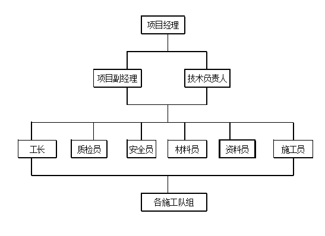
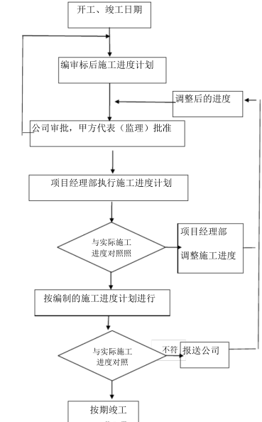
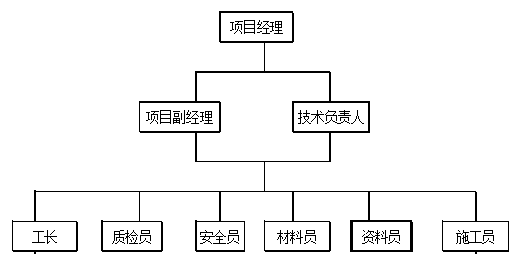
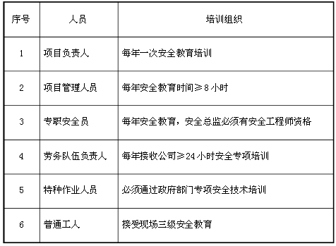
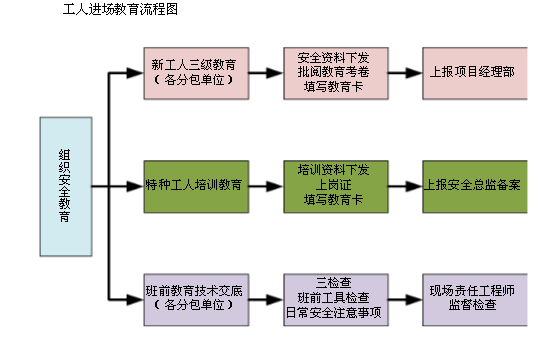
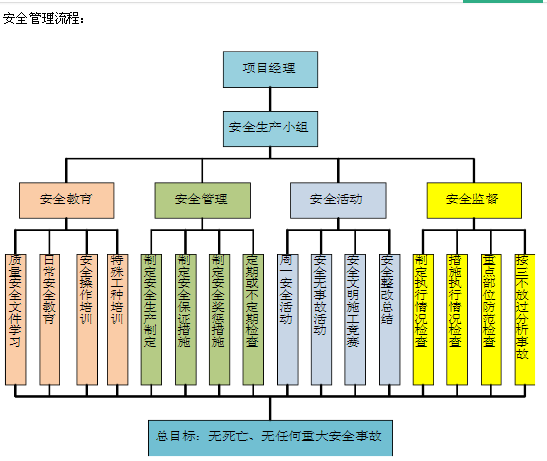
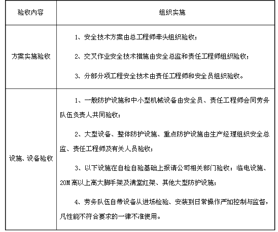
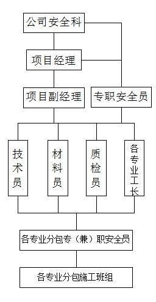

为实现本工程的各项目标,根据公司总体施工组织安排，提高工程施工管理水平，最大限度地发挥资源优势，促进项目经理部建设，组建“低压网格化抢修劳务施工项目部”，实行项目经理负责制，建立工程现场管理机构体系。

施工项目部负责组织实施施工合同范围内的具体工作，执行有关法律法规及规章制度，对项目施工安全、质量、进度、造价、技术等实施现场管理。
① 贯彻执行国家、行业、地方及公司相关建设标准、规程和规范，落实公司各项配 网工程管理制度，执行施工项目标准化建设各项要求。建立健全项目、安全、质量等管理网络，落实管理责任。
② 编制项目管理实施规划，报监理项目部审查、业主项目部审批后实施。报送施工进度及停电需求计划，并进行动态管理，及时反馈物资供应情况。
③ 配合项目建设外部环境协调，重大问题及时报请监理、业主项目部协调。
④ 负责施工项目部人员及施工人员的安全、质量教育，提供必需的安全防护用品和 检测、计量设备。 参加工程月度例会、专题协调会，落实上级和业主、监理项目部的管理工作要求，协调解决施工过程中出现的问题。
⑤ 负责组织现场安全文明施工，制订风险预控措施，并在施工中落实；开展并参加各类安全检查，对存在的问题闭环整改。配备施工机械管理人员，落实施工机械安全管理责任。对进入现场的施工机械和工器具的安全状况进行准入检查，并监控施工过程中起重机械的安装、拆卸、重要吊装、关键工序作业，负责施工队（班组）安全工器具的定期试验、送检工作。
⑥ 参与编制和执行各类现场应急处置方案，配置现场应急资源，开展应急教育培训和应急演练，执行应急报告制度。
⑦ 组织施工图预检，参加设计交底及施工图会检，严格按图施工。严格执行工程建设标准强制性条文，全面应用标准工艺，落实质量通病防治措施 ，通过数码照片等管理手段严格控制施工全过程的质量和工艺
⑧ 规范开展施工质量班组级自检和项目部级复检工作，配合各级质量检查、质量监督、质量验收等工作。负责编制施工方案、作业指导书或安全技术措施，组织全体作业人员参加交底， 并按规定在交底书上签字确认。
⑨ 应用配网工程管理信息系统，及时准确完成项目相关数据录入。负责施工档案资料的收集、整理、归档、移交工作。工程发生质量事件、安全事故时，按规定程序及时上报，参与并配合调查和处理工作。
⑩ 负责项目质保期内保修工作；参与工程创优工作。
为了有效执行项目管理制度，项目管理责任落实到岗位，落实到个人，各岗位职责权限见下表。
施工平面布置紧凑合理，尽量减少施工用地。
保证现场运输道路畅通，减少场内运输费。
采用装配式施工设施，减少搬迁损失，提高施工设施安装速度。
施工设施布置满足方便生产、生活、安全防火、环境保护和劳动保护要求。
施工现场供电采用三相五线制，选择3×95+2×50mm的铜芯电缆埋地或架空敷设，满足施工及生活用电需要。
施工用水设计考虑消防用水、施工用水、生活用水，施工现场排水设计考虑生活排水、生产排水和雨水排水，现场设一定容量的消防蓄水池。
现场供水主管采用DN100的镀锌焊管,各分支采用DN80。满足施工、生活、消防需要。
根据现场实际情况，现场设置环形道路。道路宽度为5m。道路设计时考虑整个场区排水，沿道路外侧设置排水沟，排水沟深800宽500，用预制砼板作盖板，保持路面排水畅通。
施工现场设置周转材料堆放场地、现场加工制做场地、项目部现场办公室；职工生活区设置在场外。
严格执行国家、行业、国家电网有限公司有关工程建设安全管理的法律、法规和规章制度，确保工程建设安全文明施工，采取积极的安全措施，确保实现以下安全目标：
1）不发生六级及以上人身事件；
2）不发生项目建设原因引起的六级及以上电网及设备事件；
3）不发生六级及以上施工机械设备事件；
4）不发生火灾（含引发森林草原火灾）事故；
5）不发生环境污染事件；
6）不发生负主要责任的一般交通事故；
7）不发生项目信息安全事件；
8）不发生项目建设原因引起造成影响的安全稳定事件。
严格执行国家、行业、国家电网有限公司有关工程建设质量管理的法律、法规和规章制度，贯彻实施工程设计技术原则，满足国家和行业施工验收规范的要求。
1）满足国家、行业和国家电网有限公司标准、规范以及设计要求，实现“零缺陷”投运。
2）全面应用通用设计、通用设备、通用造价、标准工艺。
3）工程通过达标投产考核。
4）工程使用寿命满足设计及国家电网有限公司质量管理要求。
5）不发生因工程建设原因造成的六级及以上工程质量事件。
6）全面落实国家电网有限公司工程质量通病防治、实测实量、设备材料质量检测、GIS无尘化安装、变电工程主设备安装视频监控、“五必检六必验”施工质量强制措施等过程控制要求，应用《输变电工程施工质量验收统一表式（试行）》开展质量检验。
坚持以“工程进度服从安全、质量”为原则，积极采取相应措施，确保工程开、竣工时间和工程阶段性里程碑关键节点进度计划按时完成。确保按照规定的工期进行，按时完成要求的阶段性进度计划和验收工作。
配合全面落实环境保护和水土保持的要求，确保工程顺利通过环保和水保验收。
1）在履行合同过程中应当遵守任何适用的法律、法规、规章和规范性文件。
2）按照工作要求及合同约定进行劳务作业。
3）按照管理需求，需提供进场作业的劳务负责人和劳务作业人员个人情况信息、从业资格及相关证明性资料，并保证资料、信息的真实性、准确性。
4）劳务作业人员应服从在工程现场中对项目安全、质量、进度、文明施工等各方面的统一管理。
1）备与作业相关的基本安全意识，所有劳务作业人员应配合做好入场教育，参加组织的安全、质量、技术等教育培训，考试合格后方可进行作业。
2）在施工过程中，劳务作业人应自觉执行安全规程规定、安全技术措施，不发生违章、违规、违纪事件，服从的管理。
3）发生安全事故后，应当按照国家有关伤亡事故报告和调查处理的规定，及时如实地报告。应当积极采取措施，防止事故扩大，保护事故现场。未经调查和记录的事故现场，不得任意变动。
4）应遵守当地关于外来人员管理的规定，应确保项目经理（项目负责人）清楚了解所委派劳务作业人员的个人基本情况，并按照需要提供人员信息管理台账。需向提供所有从事作业人员的聘用合同及相关工种上岗操作资格证明。
安全牵挂着千万家，安全生产是人命关天的大事。实现安全生产不仅关系到人民的生命和财产安全，也决定着工程施工能否顺利进行，是牵挂甲乙双方和国家利益的大事。由此可见，安全生产对建筑业显得极为重要。在工程施工中，我们一定采取有效措施加强安全管理，确保安全目标的实现和工程施工的顺利进行。
施工时我们将严格按我公司的质量、环境与职业安康管理体系以及《建筑安全检查标准》，进行组织施工，并信守“珍爱生命、保护环境、塑造精品工程；遵守法规、注重预防、追求自我超越”的质量、环境和职业安全健康方针。确保本工程施工过程中无重大工伤事故，坚决杜绝死亡事故，施工现场安全生产达到优良标准，安全文明施工达到国家级文明工地样板标准。同时我们也把该工程作为一个节能型、环保型工程。
1.管理方针
在施工中，始终如一贯彻“安全第一，预防为主”的安全生产工作方针，认真执行国务院、建设部、河北省关于建筑施工企业安全生产管理的各项规定，把安全生产工作纳入施工组织设计和施工管理计划，使安全生产工作与生产任务紧密结合，保证施工人员在生产过程中的安全与健康，严防各类事故的发生。以安全促生产，以安全保目标。
强化安全生产管理，通过组织落实，责任到人，定期检查，认真整改，杜绝死亡事故，确保无重大工伤事故，严格控制轻伤频率在1‰以内。
2.安全管理体系
施工现场安全生产管理体系是施工企业和施工现场整个管理体系的一个组成部分。包括制定、实施、审核和保持“安全第一，预防为主”方针和安全管理目标所需的组织机构，计划活动、职责程序、过程和资源。
施工现场安全生产管理体系的建立不仅是为了满足工程项目部自身安全生产的要求，同时也是为了满足相关方面对施工现场安全生产管理体系的持续改善和安全生产保证能力的信任。
2.2.2班前检查制：生产经理和专业安全员必须督促与检查施工方，专业公司对安全防护措施是否进行了检查。
大中型设备安全实行验收制，凡不经验收的，一律不得投入使用。
2.2.4周一安全活动制：项目经理部每周一组织全体工人进行一次安全教育，对上周安全方面存在的问题进行总结，对本周的安全重点和注意事项做必要的交底，使广大工人能做到心中有数，从意识上时刻绷紧安全这根弦。
2.2.5定期检查与隐患整改制度：项目部每周组织一次安全生产检查，对查出的安全隐患必须定措施、定时间、定人员整改，并做好安全隐患整改销项记录。
2.2.6管理人员实行年审制：每年由公司统一组织进行，加强施工管理人员的安全考核，增强安全意识，避免违章指挥。
2.2.8危急情况停工制：一旦出现危及职工生命财产安全的险情，要立即停工，同时报告有关部门及时采取措施，排除险情。
2.2.9持证上岗制：参加现场施工的所有特殊工种人员必须持证上岗，并将证件复印件报项目经理部安全文明施工管理部备案。
2.3.1项目经理：全面负责施工现场的安全措施，安全生产等，保证施工现场的安全。
2.3.2生产经理：直接对安全生产负责，督促，安排各项工作，并按规定组织检查，做好记录。
2.3.3安全经理：对工程项目的安全生产监督管理负有直接领导责任，在项目经理的领导下负责项目安全生产保证体系的运行，负责工程项目安全生产监督管理的总体策划并组织实施。
2.3.4项目总工程师：制定项目安全技术措施和分部工程安全方案，督促安全措施落实，解决施工过程中不安全
2.1.1成立由项目经理部安全生产负责人为首，各施工单位安全生产负责人参加的“安全生产管理委员会”组织领导施工现场的安全生产管理工作。
2.1.2项目经理部主要负责人与各施工单位负责人签订安全生产责任状，使安全生产工作责任到人，层层负责。
根据安全措施和现场实际情况，各级管理人员需亲自逐级进行书面交底。
2.3.1项目经理：全面负责施工现场的安全措施，安全生产等，保证施工
现场的安全。
2.3.4项目总工程师：制定项目安全技术措施和分部工程安全方案，督促安全措施落实，解决施工过程中不安全的技术问题。
督促施工全过程的安全生产、纠正违章、配合有关部门排除施工不安全因素安排项目部安全活动及安全教育的开展，监督劳保用品的发放和使用。
保证所使用的各类机械的安全使用，监督机械操作人员保证遵章操作，并对用电机械进行安全检查。
负责上级安排的安全工作的实施，制定分项工程的安全方案，进行施工前的安全交底工作，督促并参与班组的安全学习。
劳资部门保证进场施工人员的安全技术素质，控制加班加点，保证劳逸结合；财务部门保证用于安全生产上的经费；后勤，行政部门保证工人的基本生活条件，保证工人健康；材料部门应采购合格的用于安全生产及劳保的产品和材料。
安全教育既是施工企业安全管理工作的重要组成部分，也是施工现场安全生产的一个重要方面工作。
2.4.1安全教育特点：全员性、长期性、专业性。
2.4.2安全教育的内容：安全思想教育是安全生产的思想基础，尊重人、关心人、爱护人的思想教育，党和国家安全生产劳动保护方针、政策。安全与生产辩证关系教育，三热爱教育，共产主义协作风格教育，职业道德教育。
安全知识教育是安全生产的重点内容。施工生产的一般流程、环境区域、安全生产注意事项，企业内外典型事故案例、简介与分析、工种岗位安全生产知识。
安全技术教育：安全生产技术、安全生产技术操作规范。
安全法制教育：安全生产规范和责任制度，法律上有关条文；安全生产规章制度，摘要介绍受处分的先例。
3.行为控制
3.1进入施工现场的人员必须按规定戴安全帽，并系下颌带。戴安全帽不系下颌带视同违章。
3.2凡从事2米以上无法采用可靠防护设施的高处作业人员必须系安全带，安全带应高挂低用，不得低挂高用，操作中应防止摆动碰撞避免意外事故发生。
4.劳务用工管理
4.1在项目部建立农民工学校，开展以道德法制、安全知识、维权知识、文化教育、技能培训等综合素质教育为主，配合工程进度进行班前交底和安全交底。
各工种在上岗前除参加三级安全教育、入场教育、技能培训外，在过程中还将通过农民工学校对职工加强技能、安全、法律等相关知识培训。
加强专业技能教育，确保了专业技术人员的持证上岗率达到50%以上，特殊工种持证上岗率达到了100%。
4.2公司在工程中标后及时与劳务公司签订劳务分包合同。公司监督劳务公司与农民工劳务合同的签订并及时向主管部门备案。
4.3为农民工办理工资卡，做到一人一卡一月一发、各方签字、现金发放。项目劳务管理员负责统一对职工工资的制表统计工作逐级申报到项目部及公司财务。
4.4建立现场农民工身份台账，并为每一位进场的农民工发放身份管理卡，对退场的农民工收回身份管理卡。建立农民工身份档案能更好地加强对农民工的管理，确保实名制管理，保障其合法权益不受损害。
4.5项目部在施工现场作业进出口通道安装刷卡机，职工进入施工现场必须刷卡。通过刷卡机传入电脑进行记录，避免人工记录考勤弄虚作假的不法行为。让每一位职工可以很清楚地知道自己的上下班时间。项目劳务管理员采集、打印、留存职工的考勤记录，并张榜公示，使每一个农民工知道自己的出勤情况。
4.6生活区办公区实行物业管理，设定专人负责卫生清理、治安保卫等工作，为职工创造良好的休息场所。
4.7施工现场成立工会组织，负责监督职工的工资发放、劳动条件、防护用品的使用、作业环境等，及时解决职工的投诉问题，维护职工的合法权益。
5.安全防护管理
5.1.1在±0.000以下施工阶段，采用Φ48钢管设置1.2米防护栏杆，内挂密目网，防护栏杆设横杆，立杆间距不超过2米，钢管上刷红白相间的警示标记。在基坑内设置上下坡道，坡道架子采用Φ48钢管搭设，坡道用50厚木板铺设，上钉防滑条，间距不超过300mm。
5.1.2对现场的预留孔洞，必须进行封闭覆盖，危险处在边沿处设置两道护身栏杆，并于夜间设红色标志灯。
5.2.1各类施工脚手架严格按照脚手架安全技术防护标准和支搭规范搭设，脚手架立网统一采用绿色密目网防护，密目网绷拉平直，封闭严密。钢管脚手架不得使用严重锈蚀、弯曲、压扁或有裂纹的钢管。脚手架不得钢木混搭。
5.2.2钢管脚手架的杆件连接必须使用合格的玛钢扣件，不得使用铅丝或其他材料绑扎。
5.2.3脚手架必须按车位与结构拉接牢固，拉接点垂直距离不得超过4m，水平距离不得超过6m。拉接所用的材料强度不得低于双股8铅丝的强度。高大脚手架不得使用柔性材料进行拉接。在拉接点处设可靠支顶。
5.2.4脚手架的操作必须满铺脚手板，离墙面不得大于20cm，不得有空隙和探头板、飞跳板。施工层脚手板下一步架处兜设水平安全网，操作面外侧应设两道护身栏杆和一道挡脚板或设一道护身栏杆，立挂安全网，下口封严，防护高度应为1.5m。
5.2.5脚手架必须保证整体结构不变形，纵向必须设置十字盖，十字盖宽度不得超过7根立杆，与水平面夹角应为45°—60°。
5.3.1吊篮进料口处应搭设长度不小于3m的防护棚，其他三个侧面必须采取封闭措施，各层卸料平台出入口处应设有安全门，信道两侧必须设有安全防护栏杆，吊篮定位装置必须安全可靠，任何人不准乘坐吊篮上下。
5.3.2结构内1.5m×1.5m以下孔洞，应预埋通长钢筋网或加固定盖板。1.5m×1.5m以上的孔洞，四周必须设定型栏杆，中间支挂水平安全网。
5.3.3建筑物的出入口处应搭设长3～6m，宽于出入信道两侧各1m的防护棚，棚顶应满铺不小于5cm厚的脚手板，非出入口和通道两侧必须封闭严密。
5.3.2结构内1.5m×1.5m以下孔洞，应预埋通长钢筋网或加固定盖板1.5m×1.5m以上的孔洞，四周必须设定型栏杆，中间支挂水平安全网。
临边防护必须根据不同的临边作业场所，设置不同的防护设施，如防护栏杆和安全网等。临边防护符合下列要求：
1）钢管横杆及栏杆均采用Φ48的钢脚手管。
2）钢筋横杆上直径不应小于16mm，下杆直径不应小于14mm，栏杆柱直径不应小于18mm采用电焊或镀锌钢丝绑扎固定。
1）防护栏杆由上下两道横杆及栏杆柱组成，上杆距防护面高度为1.0—1.2mm；下杆距防护面高度为0.5—0.6米。栏杆柱间距最大不大于2米。防护栏杆加安全立网封闭。
2）防护栏杆、栏杆柱的固定：
（1）当在基坑四周固定时，采用钢管打入地面50—70cm深，钢管距坑边的距离不应小于1000mm。
3）防护栏杆自上而下用安全立网封闭，在栏杆下边设置严密固定的高度不低于18cm的挡脚板，挡脚板下面距底面的空隙不应大于10mm。
4）临边也可采用定型防护栏杆。
5.5.1模板支设按方案和技术交底施工。
5.5.2支柱采用Φ48钢管，其材质和规格必须符合设计要求。支柱底部设置100的通胀的木垫板，禁止使用砖及脆性材料铺垫。
5.5.3安装立柱时，为保证立柱的整体稳定性，加设水平支撑和剪刀撑。当支柱高度超过2m时，设两道水平支撑，满堂红模板立柱的水平支撑采用纵横双向设置。
5.5.4模板上堆料和施工设备进行合理分散堆放，以免造成荷载的过度集中而导致模板上施工荷载超过规定值（2.5kn/m²）或堆料不均匀使支撑系统失稳。
5.5.5模板存放时按规格分类堆放整齐，对其堆放的地面进行夯实。其堆放高度不超过1.6米。
高空作业人员经医生体检合格，凡患有不适宜从事高空人员，一律不得从事高空作业。
高空作业区域必须划出禁区，设置围栏，禁止行人、闲人通行闯入，建筑物的出入口，搭设3至6米，宽度大于通道两侧各1米的防护棚，棚顶满铺不小于5厘米厚的脚手板。
建筑物首层四周支设固定的双层水平安全网，并每隔三层固定一道水平安全网。
6.临时用电管理
6.1建立现场临时用电检查制度，按现场临时用电管理规定对现场的各种线路和设施进行定期检查和不定期抽查，并将检查、抽查记录存档。
6.2现场采用双路供电系统，确保电源供应。临时配电线路必须按规范架设，架空线必须采用绝缘电缆导线，不得采用塑胶软线，不得成为架空敷设，也不得沿地面明敷设。
6.3施工机具、车辆及人员应与内、外电线路保持安全距离，达不到规范的最小距离时，必须采用可靠的防护措施。
6.4配电系统必须实行分级配电。现场内所有电闸箱的内部设置必须符合有关规定，箱内电器必须可靠、完好，其选型，定置要符合有关规定，开关电器应标明用途。电闸箱内电器系统须统一式样、统一配置，箱体统一刷涂橘黄色，并按规定设置围挡和防护棚，流动箱与一级电闸箱的连接方式。必须一机一箱，手动工具必须配漏电保护器。
6.5独立的配电系统必须按部颁标准采用三相五线制的接零保护系统，非独立系统可根据现场的实际情况采取相应的接零或接地保护方式，各种电器设备和电力施工机械的金属对外壳，金属支架和底座必须按规定采取可靠的接零或接地。
6.6在采用接地和接零保护方式的同时，必须设两级漏电保护装置，实行分级保护，形成完整的保护系统、漏电保护装置的选择应符合规定。
6.7各种高大设施必须按规定装设避雷装置。
6.8电动工具的使用应符合国家标准的有关规定。工具的电源线、插头和插座应完好，电源线不得注意接长和调换，工具的外绝缘应完好无损，维修和保管应由专人负责。
6.9施工现场的临时照明一般采用220V电源照明，单独设置配电箱。结构施工时，应在顶板施工中预埋线管，临时照明和动力电源应穿管布线，必须按规定装设灯具，并在电源一侧加装漏电保护器。
6.10电焊机应单独设开关。电焊机外壳应做接零或接地保护。施工现场内使用的所有电焊机必须加装电焊机漏电保护器。电焊机一次线长度应小于5m，二次线长度小于30m。接线应压接牢固，并安装可靠防护罩。焊把线应双线到位，不得借用金属管道、金属脚手架、轨道及结构钢筋作回落地线。焊把线无破损，绝缘良好。电焊机设置地点防潮、防雨、防砸。
7.施工机械管理
7.1卷扬机必须搭设防砸、防雨的专用操作棚。固定机身必须设牢固地锚。传动部分必须安装防护罩，导后滑轮不得用开口拉板式滑轮。操作人员离开卷扬机或作业中停电时，应切断电源，并将吊笼降至地面。
7.2氧气瓶不得暴晒、倒置、平放使用，瓶口处禁止沾油。氧气瓶和乙炔瓶工作间距不得小于5m，两瓶同焊炬间的距离不得小于10m。施工现场内严禁使用浮桶式乙炔发生器。如采用二氧化碳气体保护焊焊接，应严格执行各项有关安全规定，应保持通风良好，并不得在密闭场所施工，施工人员与焊接点应保持安全距离。
7.3平面刨安全防护装置必须齐全有效。
7.4严格落实现场机械管理制度，落实机械管理人员岗位责任制。
7.5施工机械必须按各阶段的施工现场平面布置图确定的位置进行安装，安装完毕后要组织检测验收，并经过试运转，检查各部件是否达到说明中的要求，合格后才能投入使用。
7.6装修期间，使用的设备机械种类多，分布的作业面较广，队伍多，机械的使用由总包单位负责，对用电安全管理做统一协调。
7.7所有机械必须由专职操作手操作和维修，操作手必须持证上岗，按操作规程操作，严禁非操作人员随意动用机械。
7.8机械管理人员必须对操作手做安全技术交底，并做好记录，各专业施工队伍必须服从总包单位的管理，专业施工队伍的机械进场，总包管理人员进行总体把关，防止不合格的机械进场。
7.9所有机械做好使用及维修保养记录，必须每天检查，确保机械设备的安全使用，操作人员应做好交接班记录。
7.10设施必须齐全良好。每星期进行一次垂直度和水平度的检测，每月检查一次限位，保险装置的牢固情况。操作时有专人指挥，遇大风天必须停止操作。井架必须设防雷装置，地基要稳固，排水畅通，经常检查，如有异常及时处理。
7.11各种机械必须有可靠的接地装置，使用完毕后必须切断电源。
7.12钢筋加工机械和木工机械设在防护棚内，经常保持清洁。润滑部位保持良好，各部位连接无松动，防护罩及其他设备必须齐全，机械接地良好，停用时挂好各种保险装置。
7.13钢筋加工机械的防护设备要完好齐全，由专人按安全操作规程进行操作，加工完活现场要清理干净，机械部位润滑良好，接地可靠。
7.14电焊机、切割机、电锯等机电设备要开关灵敏，接地可靠，电源线必须绝缘良好无漏电。
7.15操作手每天班前、班中、班后三检，发现问题立即停机整修，严禁带隐患工作。
8.应急预案
为进一步提高项目部质量安全/环保事故的应急救援能力，确保科学、及时、有序地组织事故应急救援工作，最大限度地减少人员伤亡、财产损失及对环境的影响，维护社会稳定，根据国家有关安康与环保方面的法律、法规及有关规定的要求，结合工地实际，制定本预案。
建设工程重大质量安全/环保事故应急救援应当坚持预防为主，统一指挥、快速反应、各司其职、协同配合的原则。施工现场，应建立建设工程重大质量安全事故/环保应急救援组织体系，制定本项目部的建设工程重大质量安全/环保事故应急救援预案，建立应急救援组织，配备应急救援人员，并负责应急救援预案的组织实施。
8.2.1项目部设立应急救援指挥部指挥长：项目经理、副指挥长：生产副经理安全经理成员：各相关人员办公地点（指挥中心）设在项目部办公室。
1）贯彻落实国家有关建设工程重大质量安全/环保事故预防和应急救援的规定；
2）指导、协调和监管各级应急救援组织和应急预案的建立完善；
3）及时掌握建设工程重大质量安全/环保事故情况，负责向分公司主管部门报告事故情况；
4）组织开展事故应急技术研究、应急知识宣传教育等工作。
5）指挥、协调和参与建设工程重大质量安全/环保事故的调查、处理以及善后工作，并监督落实上级领导对事故处置和善后工作的有关指示。
保证《应急预案》有效运行而配备所需的资源，对项目的应急准备和响应承担领导责任，下达启动/终止应急预案指令。
负责项目建设工程重大质量安全/环保事故的应急处理工作，负责协调应急准备和响应中出现的各类问题，负责向应急准备和响应指挥部提供应急预案的运行情况。
8.2.3.3应急准备领导委员会下设应急办公室、专家组、应急救援组、设备物资保障组、警卫治安组。
1）应急办公室
负责应急救援预案的日常协调工作，指导协调有关项目部按照应急救援预案迅速开展抢险救灾工作，力争把损失减少到最低限度。受理、拟定事故报告，负责组长、副组长、成员和各保障体系及救援队伍的联络，传达指挥部指令；接到事故（险情）报告后，立即向指挥部报告；在分公司应急预案启动后，及时组织、协调有关应急资源；及时召集有关专家，拟定应急方案和措施。
对事故应急工作中发生的争议和问题提出紧急处理意见和建议，并根据预案实施过程中发生的变化和问题，及时对预案提出调整、修订、补充。
传达应急组织体系的各项指令；汇总报告事故情况。
2）专家组
主要职责：预测建设工程重大质量安全/环保事故隐患，在处理事故现场时针对技术问题提出应急处置对策，为领导小组决策提供科学依据。
3）应急救援组
主要职责：由应急办公室牵头组织，公司有关单位参加，由应急指挥部统一指挥调度。担负组织现场抢救、控制险情、清理事故现场和消除事故隐患的任务。
4）设备、物资保障组
主要职责：担负事故应急救援交通车辆、大型设备（吊车、装载机、挖掘机等）、救援器材、个人防护用品、应急物资保障和日常救援设备的维护保养，帮助有关单位紧急调用各类物资、设备和人员等应急资源。
5）警卫治安组
主要职责：担负事故现场的秩序维护任务，设置事故现场警戒线、岗位，维持抢险救护工作的正常运行。根据灾害情况，有危及周边单位和人员的险情时，指导人员和物资疏散工作。
6）善后处理组
负责应急准备和响应后伤亡事故的善后处理工作。
8.1建立现场临时用电检查制度，按现场临时用电管理规定对现场的各种线路和设施进行定期检查和不定期抽查，并将检查、抽查记录存档。
8.2现场采用双路供电系统，确保电源供应。临时配电线路必须按规范架设，架空线必须采用绝缘电缆导线，不得采用塑胶软线，不得成为架空敷设，也不得沿地面明敷设。
8.3施工机具、车辆及人员应与内、外电线路保持安全距离，达不到规范的最小距离时，必须采用可靠的防护措施。
8.4配电系统必须实行分级配电。现场内所有电闸箱的内部设置必须符合有关规定，箱内电器必须可靠、完好，其选型，定置要符合有关规定，开关电器应标明用途。电闸箱内电器系统须统一式样、统一配置，箱体统一刷涂橘黄色，并按规定设置围挡和防护棚，流动箱与一级电闸箱的连接方式。必须一机一箱，手动工具必须配漏电保护器。
8.5独立的配电系统必须按部颁标准采用三相五线制的接零保护系统，非独立系统可根据现场的实际情况采取相应的接零或接地保护方式，各种电器设备和电力施工机械的金属对外壳，金属支架和底座必须按规定采取可靠的接零或接地。
8.6在采用接地和接零保护方式的同时，必须设两级漏电保护装置，实行分级保护，形成完整的保护系统、漏电保护装置的选择应符合规定。
8.7各种高大设施必须按规定装设避雷装置。
8.8电动工具的使用应符合国家标准的有关规定。工具的电源线、插头和插座应完好，电源线不得注意接长和调换，工具的外绝缘应完好无损，维修和保管应由专人负责。
8.9施工现场的临时照明一般采用220V电源照明，单独设置配电箱。结构施工时，应在顶板施工中预埋线管，临时照明和动力电源应穿管布线，必须按规定装设灯具，并在电源一侧加装漏电保护器。
8.10电焊机应单独设开关。电焊机外壳应做接零或接地保护。施工现场内使用的所有电焊机必须加装电焊机漏电保护器。电焊机一次线长度应小于5m，二次线长度小于30m。接线应压接牢固，并安装可靠防护罩。焊把线应双线到位，不得借用金属管道、金属脚手架、轨道及结构钢筋作回落地线。焊把线无破损，绝缘良好。电焊机设置地点防潮、防雨、防砸。
组建应急抢险突击队，由应急小组应急救援人员构成。若发生火灾、爆炸、中毒窒息等重大安全事故时，需要与公安、武警、消防支队、医疗急救中心及各大医院协调联动，由指挥部负责请示上级有关部门，统一协调应急救援工作。
应急救援设备主要是由发生事故单位自筹一部分，其他由设备、物资保障组提供。
a防火、防爆、防泄漏工具：灭火器、消防水龙带、消防栓、洋镐、消防钩、水桶、铁锨、沙袋、阻燃棉被、管钳、抽水泵、电话、防毒面罩等。
b急救工具用具：担架、药箱（内备：止血绷带、急救药品等）、救护用车。
应急救援指挥部下达应急救援指令后，各救援队各类应急救援设备，应在规定的时间内到达指定地点，不能以任何理由推诿，拖延到达时间或拒绝参加救援行动。
1）负责应急救援预案的日常协调工作，指导协调项目部按照应急救援预案迅速开展抢险救灾工作，力争把损失减少到最低限度。
2）受理、拟定事故报告，负责救援队伍的联络，传达指挥部指令；
3）接到事故（险情）报告后，立即向指挥部报告；在项目部应急预案启动后，及时组织、协调有关应急资源；
4）及时召集有关专家，拟定应急方案和措施。
5）对事故应急工作中发生的争议和问题提出紧急处理意见和建议，并根据预案实施过程中发生的变化和问题，及时对预案提出调整、修订、补充。
6）传达应急组织体系的各项指令；汇总报告事故情况。
8.2.8.1按照有关规定和公司制定的应急救援预案，建立本项目重大安全/环保事故应急救援组织，配备应急救援器材、设备，定期组织演练，组织开展事故应急知识培训教育和宣传工作，及时上报事故情况。
8.2.8.2应根据当地建设行政主管部门制定的应急救援预案和单位应急救援预案，结合工程特点制定本项目部应急预案并定期组织演练，组织开展应急培训教育和宣传工作，及时上报事故情况。
对应急现场人员进行岗位教育和消防知识的教育；对扑救火灾、救护人员的知识能力教育；对抢救摔伤人员知识能力教育；对紧急切断电源、抢救触电人员知识能力教育；对控制机械事故损坏或伤害，排除机械设备危害、防止机械事故继续扩大教育。做好培训计划和培训工作记录。
8.3.2编制项目的消防预案（应包含消防布置图），组建义务消防队，明确义务消防队的职责分工，并每年至少组织一次义务消防演习，检验消防准备工作的充分性。
8.3.3备足备好应急工具和应急用品，做好预防准备。
工程项目若发生事故险情的，立即启动本项目部的应急救援预案，如超出本项目部应急救援能力，立即分级启动分公司，超出公司应急救援范围之外的，在启动本项目应急救援预案的同时，根据险情适时请求上级或当地有关部门的支持、援助。
8.4.1.1当事故或紧急情况发生后，当事人立即向项目部（分公司、公司）领导汇报，并采取应急措施，防止事态扩大。
8.4.1.2现场项目经理部组织应急成员对事故进行处理，并立即逐级向安全管理部门或行政保卫部门报告。
8.4.1.3各级安全（行政保卫）管理部门接到报告后，立即向本单位应急救援指挥部汇报，按照各级应急预案的要求，适时启动应急救援预案
8.4.2报警：紧急事故发生时，发现人应立即报警。
出事地点、事态状况、报警人姓名。
8.4.2.2向外部报警，详细准确报告：出事地点、单位、电话、事态状况及报警人姓名、单位、地址、电话。发生火灾时还要派人到主要路口迎接消防车。
紧急事故处理后，事故发生所在部门或项目的负责人，应在24小时内填写《应急准备和响应报告书》，一式两份，自留一份，消防保卫事故报保卫科，安全事故报安全科。
事故发生单位或施工现场负责人、事故当事人或目击者有责任和义务在事故发生后，立即向市建设局报告，市建设局要迅速向市委、市政府和省建设厅报告。
事故发生后，有关单位及公民都有尽最大努力抢救受伤人员及公私财产的责任和义务。对有能力、有条件实施救助而坐视不管，或事故单位负责人、当事人见死不救，甚至故意隐逸的，要依据有关法律、法规报请有关部门追究其责任。
有关部门及单位负责人，要把抢救受伤人员，确保群众安全作为首要任务，最大限度地实施救助，及时疏散、撤离处于危险中的群众或实施抢险救援的有关人员。
事故发生后，要迅速判明事故现场状况，采取科学有效措施进行施救，并及时控制危险源，严防发生次生事故。
8.4.4.5保护和抢救公私财产，确保重要设施安全的原则
重特大事故发生后，要积极抢救所有能救出的公私财产，要尽一切可能把事故损失降低到最小程度。
8.4.5各级应急指挥部应对组织协调应急行动的情况做出详细记录。
8.5具体的生产安全事故及环境紧急情况的应急准备与响应措施
可能发生的生产安全事故有：高处坠落、物体打击、触电事故、机械伤害以及坍塌事故等。各种事故的报告、调查、处理按公司《安全生产、文明施工、环境保护管理工作制度》执行。
1）高处作业发生高处坠落的应急措施
高处坠落可能造成的伤害有：颅脑损伤、胸部创伤（如肋骨骨折）、胸腔储气损伤、腹部创伤等。当发生物体打击事件和有人自高处坠落摔伤时，应注意保护摔伤及骨折部位，避免因不正确的抬运使骨折错位造成二次伤害，并及时向工地负责人报告，拨打急救电话“120”或送医院救治，送医院途中不要乱转病人的头部，应该将病人的头部略抬高，昏迷病人取昏迷体位，防止呕吐物吸入肺内。
2）物体打击的应急措施
当施工人员发生物体打击时，急救人员应尽快赶往出事地点，并呼叫周围人员及时通知医疗部门，尽可能不要移动患者，尽量当场施救。如果处在不宜施工的场所时必须将患者搬运到能够安全施救的地方，搬运时应尽量多找一些人来搬运，观察患者呼吸和脸色的变化，如果是脊柱骨折，不要弯曲、扭动患者的颈部和身体，不要接触患者的伤口，要使患者身体放松，尽量将患者放到担架或平板上进行搬运。现场急救采取如下措施：
A.止血
可采用压迫止血法、止血带止血法、加压包扎止血法和加压屈肢止血法等。其中，压迫止血法适用于头、颈、四肢动脉大血管出血的临时止血。但有人负伤后，只要立刻果断地用手指或手掌用力压靠近心脏一端的动脉跳动处，并把血管压紧在骨头上，就能很快起到临时止血的效果。
B.包扎
伤员经过止血后，就要立即用急救包、纱布、绷带或毛巾等包扎起来。如果是头部或四肢外伤，一般用三角巾或绷带包扎，如果没有三角巾和绷带，可用衣服和毛巾等物代替。
3）检修电器、使用电动机械、工具等发生的触电事故的应急措施
A有人触电时，抢救者首先要立刻断开近处电源（拉闸、拔插头），如触电距开关太远，用电工绝缘钳或干燥木柄铁锹、斧子等切断电线断开电源，或用绝缘物如木板、木棍等不导电材料拉开触电者或者挑开电线，使之脱离电源，切忌直接用手或金属材料及潮湿物件直接去拉电线和触电的人，以防止解救的人再次触电。
B触电人脱离电源后，如果触电人神志清醒，但有些心慌、四肢麻木、全身无力；或者触电人在触电过程中曾一度昏迷，但已清醒过来，应使触电人安静休息，不要走动，严密观察，必要时送医院诊治。
C触电人已失去知觉，但心脏还在跳动，还有呼吸，应使触电人在空气清新的地方舒适、安静地平躺，解开妨碍呼吸的衣扣、腰带，若天气寒冷要注意保持体温，并迅速请医生（或打120）到现场诊治。
D如果触电人已失去知觉、呼吸停止，但心脏还在跳动，尽快把他仰面放平进行人工呼吸。
E如果触电人呼吸和心脏跳动完全停止，应立即进行人工呼吸和心脏胸外按压急救。
4）机械伤害事故的应急措施
A发生断手（足）断指（趾）的严重情况时，现场要对伤口包扎止血、止痛、进行半握拳状的功能固定。将断手（足）断指（趾）用消毒和清洁的敷料包好，切忌将断指（趾）浸入酒精等消毒液中，以防细胞变质。然后将包好的断手（足）断指（趾）放在无泄露的塑料袋内，扎紧袋口，在袋周围放些冰块，或用冰棍代替（切忌将断手（足）断指（趾）直接放入冰水中浸泡），速随伤者送医院抢救。
B发生头皮撕裂伤时，必须及时对受伤者进行抢救，采取止痛及其他对症措施；用生理盐水冲洗有伤部位涂红汞后用消毒大纱布块、消毒棉花紧紧包扎，压迫止血；同时打120或者送医院进行治疗。
5）坍塌事故的应急措施
坍塌事故往往伤害人员多，后果严重，多为重大或特大人身伤亡事故，发生坍塌事故后，应立即报告分公司和公司主管领导和生产安全科（部）。
因塌方造成人身事故后，应同时采取两个方面的措施，一方面立即扒挖，
抢救伤员并密切注意伤员情况，防止二次受伤；另一方面对伤员上部的土体（模板构件脚手架）采取临时支撑措施，防止因二次坍塌伤及抢救者或加重事故后果。排险和抢救应由有经验的人员指挥进行。
对危害大的复杂塌方（如危及建筑物构筑物基础等），应由安全部门及有关技术部门共同商定处理措施。
6）由化学品造成身体伤害的应急措施
A酸碱（硫酸、盐酸、硝酸、氢氧化钠、氢氧化钾、石灰、氨水等）烧伤眼睛，烧伤后冲洗患眼是最迫切有效的急救方法。酸碱烧伤后必须立即用清水冲洗眼睛15分钟。如现场无清水可用，池塘水、沟水、井水均可。无人协助的情况下，可倒一盆水，双眼浸入水中，用手分开眼睑，做睁眼、闭眼、转动眼球动作，一般冲洗30分钟。
B若眼睛被柴油、煤油、汽油、热油、蒸汽等烧伤，立即送伤者到有条件的附近医院急救。
7）食物导致中毒的应急措施
警惕误食亚硝酸盐中毒，亚硝酸盐常作为工业用防冻剂，在建筑施工中常见。发现饭后多人有呕吐、腹泻等不正常症状时，要让病人大量饮水，刺激喉部使其呕吐，立即送往医院，及时向当地卫生防疫部门报告，并保留剩余食品以备检验。
汽油、柴油等油料以及各类化学危险品应防止泄漏，一旦发生泄漏现象应及时清理干净被污染场所。
油品及化学品在采购、运输、储存、发放中发生的泄漏由材料部门进行清理，机械设备在使用过程当中发生的泄漏由机械部门进行清理。
施工现场应根据施工作业条件制定消防措施，成立消防组织，并记录落实效果，并按照不同作业条件，合理配备灭火器材，现场动火执行动火审批制度，设专人监护，当建筑施工高度超过30m时，配备有足够的消防水源和自救的用水量，每层设有消防水源接口管。
火灾按照可燃物类别，一般分为五类：A、可燃气体火灾B、可燃液体火灾C、固体可燃物火灾应分清哪些火灾不能用水扑救：三酸（硫酸、硝酸、盐酸）引起的火灾；轻于水和不溶解于水的易燃液体；熔化的铁水、钢水；高压电器装置的火灾，在没有良好接地设备或没有切断电源的情况下引起的火灾。具体应急措施为：
（2）在安全的情况下设法灭火和抢救伤员。要及时疏散被火围困人员，并对受伤人员进行必要的抢救。控制火势蔓延：建筑物起火，一端向另一端蔓延，应从中间控制；中间着火，两侧控制；车位着火，上下控制，以上层为主。
（3）火势严重的应立即拨打119火警电话，报警时应说明：起火场所的详细地址，火势大小，着火物品，有无爆炸危险，是否有人被困，报警用的电话号码和报警人的姓名。
（5）尽快与上级部门及医疗部门取得联系，以便迅速、妥善地得到后续治疗
爆炸与爆燃主要有：A.锅炉爆炸事故B、易燃易爆的液体燃爆：柴油、汽油、油漆、稀料、氧气、乙炔气、天然气。
存放易燃易爆液（气）体的仓库或化学危险品的场所，要按照国家规定配备隔爆设施；严格控制各类火源；着火周围如有油罐，在不能及时排除（指不能迅速灭火和不易疏散的物质）以冷却法控制，冷却临近的油罐，防止温度升高爆炸；配备好应有的灭火器材、防毒用具，专人负责管理，确保随时都能有效使用。
发生爆炸爆燃事故后，要迅速将烧伤人员脱离火源，剪掉着火衣服，采取有效措施，防止伤员休克、窒息、创面污染，必要时可用止痛剂，喝淡盐水。在现场除化学烧伤，对创面一般不做处理，有水疱一般不要弄破，用洁净衣服覆盖，把重伤员及时送医院救治。
（1）派专人负责上下水管道的检查与维修，排除事故隐患。一旦发生泄漏，应及时关闭上流总阀门，并对泄漏水进行疏导进入其他排水管道，同时应急人员对泄漏管道进行维修，排除险情。
（2）污水管道破裂后，对溢出地面的污水进行疏导，使其进入其他污水管道，严禁污水四溢，造成对环境的污染。同时报告市政污水管网维修部门，派人进行及时维修。
（1）加强门卫管理，严禁外来人员及车辆进入，严格限制施工现场内工人外出活动。由于工程任务较紧，需要招用劳务人员时，不得随意招用，要先送到防疫站进行体检，体检合格后按照疫情要求的隔离天数有组织地进行隔离，
确定没有传染疫情，才能进入施工现场。
（2）对办公区、工人宿舍、食堂保持卫生，每天由专人负责消毒，对工人宿舍作为重点每日消毒两次，保证通风、不留死角。
（3）建立对外来务工人员严格审查、详细登记、进行疫情代表特征（如非典测体温）的测试，且每天将测试情况按照逐级报告制度进行上报，不得谎报、瞒报，发现异常人员马上送医院。
出现严重的特殊气味时，要按逐级报告制度进行上报，了解特殊气味种类。来源、伤害、防护措施等情况，有针对性地采取有效防护措施。
如出现地下管网破裂、断裂，迅速向专业部门电话报告。在此处设置围挡或者警戒区，派专人监护，闲杂人员不得靠近。
8.6.1按照“谁启动、谁结束”的原则，当重大事故或险情得到有效处置后，由各级重大质量安全事故/环保应急指挥部，报上一级指挥部同意后决定应急结束，并通知相关单位和部门。
8.6.2应急状态结束后，项目部应及时作出书面报告。基本内容是：事故发生及抢险救援经过；事故原因分析、事故造成的后果，包括伤亡人员情况及经济损失等；预防事故采取的措施；以及预案效果及评估情况；应急预案需修改后应提出具体改正意见；应吸取的教训以及对事故单位和责任人的处理情况等。
分公司依据有关规定，及时组织有关部门和单位进行事故调查，并对责任单位和责任人依法依规进行行政处分、处罚，构成犯罪的移交司法机关追究其刑事责任。
8.8.1项目部须根据本单位实际情况，及时建立重大质量安全/环保事故应急救援体系，并保证人员、装备及经费落实到位。
8.8.2应当建立应急救援组织，并定期培训演练，能熟练掌握救援方法和技能，随时处置危险状况。
8.8.3本预案指定的应急救援器材和装备，要随时保持良好状态，各部门、各单位要进行经常性维护、保养和检查，保证随时投入使用。
8.8.4事故发生后，各级应急救援指挥部成员，必须尽快赶赴现场，就地设立办公地点，按照职责划分立即开展抢险救援工作。
8.8.5在抢险救援期间，各级应急救援指挥部成员所有指定及参加救援工作的人员，不得擅离职守，以免贻误事故救援时机。
8.8.6任何项目和个人均有权举报建设工程重大质量安全事故及隐患。
9.风险管理
9.1.1项目风险的识别是对风险源、风险因素、后果做定性估计，感性认识和经验判断。风险识别是风险管理的第一步。首先必须正确识别风险，统一认识，然后才能制定出相应的管理措施。
9.1.2风险识别常用的几种方法有：调查询问、分析财务报表、现场考察，参考以往统计记录。经过上述识别方法，一般可以将风险的种类划分为：政治风险、法律风险、金融风险、自然条件风险、社会风险、投机风险、组织风险、实施风险。
9.2.1主要自然灾害风险有：地震、雪灾、风灾、暴雨、冰雹与雷暴。
9.2.3基础结构施工：施工时可能遇见大雨，具有边坡失稳的危险、基坑被冲进淤泥、地下障碍物及实际土质与地勘报告的差别因素存在；
9.2.4地上结构：具有高空坠落的风险，且脚手架体系的稳定性也具有风险。
9.2.5工程设施：该工程规模大，设施多，易于发生工程财产损失。
9.2.6机电设备工程：如设备储存、安装不当，操作失误，尤其在设备调度期间，风险相对集中。
9.2.7人员事故风险：参加该工程的建设人员不仅包括业主、承包商、分包商，而且也要包括设计和监理单位、设备或材料供应商等。由于施工现场的复杂性，有时业主难以保证施工现场条件处于良好状态时，工程建设的其他相关人员进入现场，由于疏忽、过失或故意行为，容易发生人员伤害事故。
风险管理就是要降低项目中风险发生的可能性，减轻或消除风险的影响，以最低的成本取得满意结果。
风险管理人员在制定风险管理计划时要以总成本最低为总目标，即风险管理也要考虑成本。以最合理、经济的方式把控制损失的费用降到最低，通过尽可能低的成本达到项目的安全保障目标。这就要求风险管理人员对各种效益和费用进行科学分析和严格核算。
在风险发生之前，对风险的恐惧往往会造成人们心理和精神上的紧张不安，这种忧虑心理会严重影响工作效率并阻碍积极性。这时要通过有效的风险管理，让大家确信：项目虽然具有一定的风险，但风险管理部门已经识别了全部不确定因素，并且已经妥善地做出了安排和处理，这是战略上的蔑视。而作为项目风险管理部门，则要坚持战术上重视的原则，认真对待每一个风险因素，杜绝松懈麻痹。
在风险管理的过程中必须注意社会效益，不能把风险的危害转嫁给周围地区的单位、个人等，也不能给他们增加相应的损失，恶化其生存的环境。同时风险管理还应充分注意有关方面的各种法律法规，使风险管理的每一个步骤都具有合法性。
风险管理作为项目活动的一部分，其目标的制定，必须符合项目的总体目标。
风险规避是指通过消除起因，主动放弃和实施可能导致不可抗力损失的某种项目活动来消除特定的风险，达到完成降低风险的目的。在该项目建设中，通过这种方式，可以避免坏天气可能造成的项目延误不可抗力。
风险减轻主要致力于降低其预期损失。一般情况下，主要考虑降低风险事件的发生概率和事件造成的预期损失。当风险事件出现时，应该制定应急措施，减轻其消极后果。对于姚家园工程可能出现的各种风险，应充分调查研究施工现场的地质条件，精心编制施工组织计划，制定好应急方案等。
不同的组织具有不同的核心竞争力，同样的事件就会有不同的风险损失，风险转移并非损失转嫁，但转移后并不一定同样给其他人造成损失。常用的风险转移方式是购买保险，因为保险作为分摊意外事故损失的一种财务安排，应用于本工程建设中具有最现实的意义。
由于保险合同条款是非专业人士一时难以精确掌握的，因此寻找一个既代表客户利益，又精通保险专业知识的保险顾问是非常有必要的。按照《中华人民共和国保险法》的规定，保险经纪人必须基于投保人的利益，为投保人提供包括风险评估、风险管理、办理保险、协助索赔等在内的一系列保险经纪服务。为客户服务、维护客户利益是保险经纪人的职责。因此，在本工程建设过程中，选择保险经纪人具有重要意义。
1）应确保本劳务作业达到总承包工程质量等级的要求，并有义务配合实现总承包工程质量等级。
2）应按照工程质量创优目标的要求进行施工，配合实现分部分项工程合格标准。
3）应配合对工程材料以及工程的所有部位及其施工工艺进行全过程的质量检查和检验，并作详细记录。
4）应配合进行三级验收，对于验收中发现的质量问题或缺陷配合进行整改。
5）因劳务作业人原因造成工程质量达不到合同约定验收标准的，有权要求返工直至符合合同要求或工程质量验收标准为止。
6）严格执行各类质量控制管理规定，配合做好施工质量检查、质量评定工作，服从的指导和监督。
质量标准：符合国家质量验收标准。
为了对用户负责，确保施工的质量达到我公司向业主承诺的质量标准，我公司的项目管理计划，以施工项目为中心，实行“项目法”施工，坚持实行全面质量管理工作，设立了与施工项目相适应的质量管理机构，内部分工明确，将工程质量管理中的计划、实施、检查、处理等工作充分具体化，认真落实工程隐蔽前的“三检”制度，逐渐形成了施工生产和质量管理相互制约，相互保证的一种体系。为此我们将从以下几个方面做好质量控制保证工作：
1、全面贯彻“预防为主”的方针，推行全面质量管理，把质量管理从事后检验转变为事先控制工序及因素，把管结果变为管因素，把质量事故消灭在萌芽状态。
2、运用工程质量预控表、工程质量因果分析、对策计划表对施工过程进行主动分析、达到预防为主的目的。
3、根据本工程具体情况，进行综合分析，依据灵活机动原则，确定各分项工程的控制重点、难度和控制程序。
4、运用科学的质量控制方法，实施项目质量有效控制进行质量控制教育。围绕总体目标和分项目标，在项目和施工队伍全体员工进行普遍质量意识教育，质量管理制度教育、质量标准教育、牢固树立“质量第一”的意识。
5、狠抓准备工作质量，施工准备是抓好施工质量控制的基础。为此，在每项工作开工时，要求项目部和施工队认真抓好思想准备、技术准备、物资准备、设备准备、组织准备和现场准备，准备工作做好了，质量控制工作才能顺利展开。
6、针对各分项工程控制重点及质量目标，采取对策，实施质量预控。针对事先要进行的施工重点控制项目，分析可能或易于出现的质量问题，从而提出应变对策，制定质量预防措施。
为了对用户负责，确保施工的质量，我公司的项目管理，以施工项目为中心，实行“项目法”施工，坚持实行全面质量管理工作，设立了与施工项目相适应的质量管理机构，内部分工明确，将工程质量管理中的计划、实施、检查、处理等工作充分具体化，认真落实工程隐蔽前的“三检”制度，逐渐形成了施工生产和质量管理相互制约，相互保证的一种体系。
1、本工程在项目经理领导之下，按优质工程标准，实行目标管理，专人负责对施工现场进行技术动态管理。
2、严格按照ISO9001质量保证体系的要求，落实施工过程中的技术控制责任，适应程序的具体要求，保证施工过程按照规定有效的控制，以满足业主的要求。
3、工程以项目经理为第一质量保证人，施工员、质检员、各施工队长亲临现场，责任分明，层层落实。
4、施工员根据施工技术方案、工艺标准，质量计划，明确质量管理重点和管理措施，对施工班组长和操作人员进行技术交底。
5、技术交底一律通过书面形式进行，由质检员和队长认可后，交至每一个工人。技术交底原件由质检员保存，每月一次将其整理后归档，备查备用。
6、本工程涉及装饰工程各分项分部工程较多，且质量要求较高，所以对轴线测量、弹线、复核及标高的引测应严格控制，作好图纸复核和现场技术交底，控制质量通病的源头。
7、以保证和提高质量为目标，运用系统的原理和方法，设置统一协调的组织系统，把各环节的质量管理职能依据ISO9001质量体系的要求运行起来，并依据本工程的特点，形成以项目经理为总负责，质检和安全组牵头，各工种队长具体负责的全面质量监督检查体系。
8、进行施工质量教育，项目经理部对每批进场的施工作业人员进行质量教育，让每个施工人员明确质量标准是每道工序都必须达到规范要求，从而牢固的树立“争创精品”的质量观。
9、确立图纸“三交底”的施工准备工作。区域操作前，工地质量员向施工工长做详细的图纸工艺要求、质量要求交底；工序开始前施工工长向班组长做详尽的图纸、施工方法、质量标准的交底，作业开始前班长向班组成员做具体的操作方法、工具使用、质量要求的交底，务求使每一位施工工人都能对其所进行的分项作业了然于胸。
10、成立以工程技术负责人为核心的工程质量管理机构，确立“自检、互检、交接检”的三检制度，发现问题及时解决，实行全过程质量监控
11、每道工序在完工后都必须有质检人员的认可意见，否则，不得进入下一道工序的操作。
1.项目经理部应合理安排工期及进度，使几个工作面的施工能够同时开展，重点保障吊顶、石材施工、细木制作、金属构配件制作等关键工序能够形成流水作业，并在各个施工段间形成循环，使每个工种都能有充足的作业时间和作业面，不至于由于抢工期导致施工质量粗糙。
2.完善落实技术交底制度，分部分项作业前应做好逐级技术交底工作，并加强施工机械设备的定期检修，完善施工作业的前期准备工作。
3.建立质保体系，强化施工检验，建立有效的质量管理体系，按图施工，规范施工，强调操作工人认真落实“三检制”工作，同时加强专职质量员的预控预检工作，以确保及时发现问题并得到有效处理。同时，公司质安部也将定期地对施工质量进行检查。
4.加强验收制度。前道工序的工程质量必须得到下道工序操作人员的认可，切实做到谁做谁负责。每道工序施工完毕必须在质量员认可后，方可开始下道工序的施工。坚持质监部门专业检查与工种互检相结合，做好隐蔽工程验收并将有关资料收集备案；接受质监部门和甲方各有关部门及工程监理的现场监督，发现问题及时返工，及时复验，直至达到质量要求。
5.严格执行国家施工验收规范和操作规程，及时做好分部、分项工程质量评定工作；凡属国家尚无明确施工规范和验收标准的项目，我们充分尊重业主和监理工程师的意见或意向，随时接受他们的检查，并做到一旦发现质量问题，立即加以纠正。
6.坚持按图纸施工，如有变更须征得业主同意，或经现场设计师授权委托。切实贯彻设计意图，严格按照设计图纸的要求采购符合要求的材料并进行进货检验，须在满足施工质量和效果的前提下，才考虑局部材料的调剂使用，凡设计或甲方确定的材料样品，应尽可能按原样采购使用。
7.加强成品保护工作，向各级施工人员灌输成品保护意识，设专职人员现场巡查，已施工完成的区域无关人员不得进入，并派出专人对现场成品进行看管。
8.落实工程质量回访和保修制度。与业主建立良好的信息沟通渠道，工程竣工后定期进行回访，按有关文件的规定对工程各分项工程的质量问题进行保修，由于施工原因所造成的质量问题，公司安排专业人员及时上门维修，请业主验收并做好书面记录。
9.实行质量岗位责任制度
（1）项目经理是工程质量的第一负责人，项目副经理、质量员负管理责任，施工人员对工程质量负直接责任的逐级负责的质量管理机制。
（2）公司设立质安部，施工现场配备专职质量管理员，各专业施工队设立专（兼）职质量检查员。
（3）各级专（兼）职质检员协助质量员进行日常的质量管理。
（4）施工人员应认真做好质量自检、互检及工序交接检查，做好施工岗位责任记录和施工原始记录，记录数据要做到真实全面及时。
（5）各级领导必须坚持参加工程质量的验收工作，对检查中发现的违反施工程序、规范、规程的现象，质量不合格的项目和事故苗头等逐项记录，同时及时研究制定出处理措施并逐项落实。
10.实行材料及半成品检验制度
材料物资的管理是企业进行经济核算的重要基础工作，加强材料的质量、数量的检验和控制是延长建筑装饰产品的使用寿命和降低成本的重要关键。为此企业根据材料物资的管理工作量配备专职仓库保管员，加强材料及半成品现场管理，严格把好材料质量、数量验收关，制定如下制度：
（1）从仓库开始，做好材料保管工作，材料的运输、堆放都要分类定点，位置有序合理，避免在施工前就造成损伤。
（3）坚持中间核算，也就是在施工过程中分阶段进行材料使用的分检和核算，以便及时发现问题，防止材料超用。
（4）及时进行现场清理，做到随做随清。每天清理现场、回收、整理余料、做到工完场清，在进行工料消耗与分析的基础上，按单位工程核算材料消耗并分析原因总结经验，增收节约，降低造价。
（5）加强验收，在一般情况下要全数检查，防止供应中短缺物资现象。
（6）严格控制来料的规格、材质、使其符合使用要求，一般材料可由材料员从外形判断，需要进行技术检验或进行物理化学试验的应向项目部汇报，由技术检验部门抽验。
（7）对主材及半成品重要材料进场，必须同时附有材料供应单位提供的质量保证合格检验单和复试单，才能在工程中使用，无质保单的材料和半成品不得在工程中使用。
（8）坚持作好施工日记的记录工作，它是反映了整个工程施工详细过程的备忘录，是整个工程的文字形式的形象化记录，必须坚持每天记写，包括日期、天气、施工人员的分配、施工内容、有无工程变更及具体内容以及当天的材料进场情况等等。
1、项目经理部应合理安排工期及进度，使几个工作面的施工能够同时开展，重点保障吊顶、细木制作、金属构配件制作等关键工序能够形成流水作业，并在各个施工段间形成循环，使每个工种都能有充足的作业时间和作业面，不至于由于抢工期导致施工质量粗糙。
2、完善落实技术交底制度，分部分项作业前应做好逐级技术交底工作，并加强施工机械设备的定期检修，完善施工作业的前期准备工作。
3、建立质保体系，强化施工检验，建立有效的质量管理体系，按图施工，规范施工，强调操作工人认真落实“三检制”工作，同时加强专职质量员的预控预检工作，以确保及时发现问题并得到有效处理。同时，公司质安部也将定期地对施工质量进行检查。
4、加强验收制度。前道工序的工程质量必须得到下道工序操作人员的认可，切实做到谁做谁负责。每道工序施工完毕必须在质量员认可后，方可开始下道工序的施工。坚持质监部门专业检查与工种互检相结合，做好隐蔽工程验收并将有关资料收集备案；接受质监部门和甲方各有关部门及工程监理的现场监督，发现问题及时返工，及时复验，直至达到质量要求。
5、严格执行国家施工验收规范和操作规程，及时做好分部、分项工程质量评定工作；凡属国家尚无明确施工规范和验收标准的项目，我们充分尊重业主和监理工程师的意见或意向，随时接受他们的检查，并做到一旦发现质量问题，立即加以纠正。
6、坚持按图纸施工，如有变更须征得业主同意，或经现场设计师授权委托。切实贯彻设计意图，严格按照设计图纸的要求采购符合要求的材料并进行进货检验，须在满足施工质量和效果的前提下，才考虑局部材料的调剂使用，凡设计或甲方确定的材料样品，应尽可能按原样采购使用。
7、加强成品保护工作，向各级施工人员灌输成品保护意识，设专职人员现场巡查，已施工完成的区域无关人员不得进入，并派出专人对现场成品进行看管。
8、落实工程质量回访和保修制度。与业主建立良好的信息沟通渠道，工程竣工后定期进行回访，按有关文件的规定对工程各分项工程的质量问题进行保修，由于施工原因所造成的质量问题，公司安排专业人员及时上门维修，请业主验收并做好书面记录。
（6）项目经理是工程质量的第一负责人，项目副经理、质量员负管理责任，施工人员对工程质量负直接责任的逐级负责的质量管理机制。
（7）公司设立质安部，施工现场配备专职质量管理员，各专业施工队设立专（兼）职质量检查员。
（8）各级专（兼）职质检员协助质量员进行日常的质量管理。
（9）施工人员应认真做好质量自检、互检及工序交接检查，做好施工岗位责任记录和施工原始记录，记录数据要做到真实全面及时。
（10）各级领导必须坚持参加工程质量的验收工作，对检查中发现的违反施工程序、规范、规程的现象，质量不合格的项目和事故苗头等逐项记录，同时及时研究制定出处理措施并逐项落实。
（9）从仓库开始，做好材料保管工作，材料的运输、堆放都要分类定点，位置有序合理，避免在施工前就造成损伤。
（10）严格限额领料，收发料具要及时入帐，手续齐全。
（11）坚持中间核算，也就是在施工过程中分阶段进行材料使用的分检和核算，以便及时发现问题，防止材料超用。
（12）及时进行现场清理，做到随做随清。每天清理现场、回收、整理余料、做到工完场清，在进行工料消耗与分析的基础上，按单位工程核算材料消耗并分析原因总结经验，增收节约，降低造价。
（13）加强验收，在一般情况下要全数检查，防止供应中短缺物资现象。
（14）严格控制来料的规格、材质、使其符合使用要求，一般材料可由材料员从外形判断，需要进行技术检验或进行物理化学试验的应向项目部汇报，由技术检验部门抽验。
（15）对主材及半成品重要材料进场，必须同时附有材料供应单位提供的质量保证合格检验单和复试单，才能在工程中使用，无质保单的材料和半成品不得在工程中使用。
（16）坚持作好施工日记的记录工作，它是反映了整个工程施工详细过程的备忘录，是整个工程的文字形式的形象化记录，必须坚持每天记写，包括日期、天气、施工人员的分配、施工内容、有无工程变更及具体内容以及当天的材料进场情况等等。
现场进行质量检查的方法有目测法、实测法和试验法三种。
看：就是根据质量标准进行外观目测。如清水墙面是否洁净，喷涂是否密实和颜色是否均匀，内墙抹灰大面及口角是否平直，地面是否光洁严整，油漆浆活表面观感，施工顺序是否合理，工人操作是否正确等，均是通过目测检查、评价。
摸：就是手感检查。主要用于装饰工程的某些检查项目，如水刷石、干粘石粘结牢固程度，油漆的光滑度，浆活是否掉粉，地面有无起砂等，均可通过手摸加以鉴别。
敲：是动用工具进行音感检查，对地面要程、装饰工程中的面砖、锦砖和大理石贴面等，均应进行敲击检查，通过声音的虚实确定有无空鼓，还可根据声音的清脆和沉闷，判定属于面空鼓或底层空鼓。此外，用手敲玻璃，如发出颤动音响，一般是底灰不满或压条不实。照：对于难以看到或光线较暗的部位，则可采用镜子反射或灯光照射的方法进行检查。
2、实测法。就是通过实测数据与施工规范及质量标准所规定的允许偏差对照，来判别质量是否合格。实测检查法的手段，也可归纳为靠、吊、量、套四个字。靠：是用直尺、靠尺检查墙面、地面、屋面的平整度。吊：是用托线板以线锤吊线检查垂直度。量：是用测量工具和测量仪表等检查断面尺寸、轴线、标高、湿度、温度等的偏差。套：是以方尺套方，辅以靠尺检查，如对阴阳角的方正、踢脚线的垂直度、预制构件的方正等项目的检查。对门窗口及构配件的对角线（窜角）检查，也是套方的特殊手段。
3、试验检查。指必须通过试验手段，才能对质量进行判断的检查方法。对钢结构进行稳定性试验，确定是否产生失稳现象。
4.1检测设备应由公司质量安全部统一调拔，公司质量安全部建立用于本工程的检测设备管理台帐。
4.2项目开工前，项目部应根据项目施工组织设计要求，向公司质量安全部提出检测设备领用申请表，由公司质量安全部审批。
4.3项目部应建立检测设备管理台帐，并保管好技术资料、检验记录和检定证书。
4.4检测设备在运输及使用过程中，项目部采取必要的保护措施，防止设备遭到损坏。
4.5操作人员必须熟悉计量器具的原理和使用方法，按说明书中的使用要求进行规范操作。特殊设备的操作员经培训、考核合格后持证上岗。
4.6检测设备发生故障时必须停止使用，并送检测单位修理，检定合格后方能重新使用。
4.7检测设备在使用过程中偏离校准状态时，使用人应立即报告项目技术负责人，由技术负责人组织对已检测结果重新评定，并填写检测设备失准状态检测评定表，评定方法有：
（2）根据设备误差大小对原监测数据进行修正巳判定其误差范围。
（1）公司质量安全部负责编制全公司检测设备的年度周期检定计划，并按计划组织检定。
（2）公司质量安全部应根据检定计划所要求的时间，提前通知各有关单位和部门，由各项目部送当地法定检定机构进行周期检定。检定后由送检人员索取并妥善保存全部检定资料和鉴定合格证，复印1份送交公司质量安全部备案。
（1）检测设备山项目部按地方政府主管部门规定的标志进行标识。
（2）过期未检定或检定不合格的检测设备，由项目部负责粘贴禁用标志。
4.10检测设备的封存检测设备预计超周期不使用时，由使用单位或人员填写检测设备封存申请，由公司质量安全部批准后封存，并在相应台帐上做好记录时应重新检定，合格后方可使用。
检测设备的性能、精度等已不符合国家有关标准、规范的要求，无法修复应予报废。
检测设备报废时，由项目部填写检测设备报废申请表，报公司质量安全部审批。
1、隐蔽工程的检查验收工作是现场施工管理的重要环节，是关系到整个工程的总体质量高低、是否满足安全使用年限、消防安全的关键，现场施工项目部应对此环节给予高度重视。
2、隐蔽工程主要检查项目包括：吊顶上的固定件、钢结构、龙骨；地面的基层、垫层等；墙柱面金属固定层架结构、固定件；木门套、夹板墙之内部木龙骨、夹板的防火涂料、吊顶及墙内的电气管线接口位置。
3、隐蔽工程检查由质检员主持，组织施工班组长、业主和工程监理共同进行。
4、所有的隐蔽工程都必须进行检查和验收，合格后才能隐蔽，隐蔽工程中上道工序未经检查验收的，下道工序不得施工。
6、隐蔽工程初次验收不合格的，应在隐蔽工程验收单中写明不合格部位、原因及整改措施，施工队应立即进行整改并及时进行复验。
我们的质量目标是创优良工程，满足用户对工程产品的质量要求和期望。施工质量控制是项目管理的重要内容，以先进的技术和经济的方法将各种生产要素有效的组合，按施工规范要求、设计意图，根据我公司质量控制文件对施工的全过程进行有效的控制。
通过择优录用、加强思想教育及技能方面的教育培训；合理组织、严格考核，并辅以必要的激励机制，使企业员工的潜在能力得到最好的组合和充分的发挥。
企业坚持对所选派的项目领导者、组织者进行质量意识教育和组织管理能力训练，坚持施工人员的资格考核，坚持工种按规定持证上岗制度。
原材料、半成品、设备的质量控制的主要内容为：控制材料设备性能、标准与设计文件的相符性；控制材料设备各项技术性能指标、检验测试指标与标准要求的相符性；控制材料设备进场验收程序与质量文件资料的齐全程度。贯彻执行材料设备在封样、采购、进场检验、抽样检测及质保资料提交等一系列明确规定的控制标准。
全面正确地分析项目特征、技术关键及环境条件等资料，明确质量目标、验收标准、控制的重点和难点；制定合理有效施工工艺、施工方法，施工区段划分、施工流向及劳动组织等；为确保项目质量，尚应针对项目具体情况，编写气象地质等环境不利因素对施工的影响及其应对措施。
对施工所用的机械设备，各类加工机械、专利技术设备、检查测量仪表设备等，应根据项目需要从设备选型、主要性能参数及使用操作要求等方面加以控制。
环境因素对项目施工的影响一般难以避免，要消除其对施工质量的不利影响，采取预测预防的控制方法：
根据设计要求，预测不利因素；对天气气象方面的不利条件，明确施工措施，落实人员、器材等方面各项准备以紧急应对；从而控制其对施工质量的不利影响；对环境因素造成的施工中断，必须通过加强管理、调整计划等措施，加以控制。
施工准备阶段的质量控制施工准备工作贯穿整个施工全过程，既有阶段性又有连续性，并直接影响项目的进度、质量和成本。
技术准备设计确认：我公司将根据国家规范、行业标准、合同以及投标书，审核各部分的设计文件、主要设备说明书、设备清单、管线布线施工图进行审核，确认其符合国家规范、行业标准、设计图纸、招标要求、合同规定。
系统设计优化：我公司根据投标书和建设单位最后的要求对各部分设计进行优化，把各个分离的设备、信息构成一个相互关联的统一的系统之中，达到管理集中统一、资源充分共享。审核中应使各部分本身达到先进、可靠、完善的高标准要求，以确保系统设计和施工的合理性，并注重下列要点：
各部分间的接口便利可靠；各部分间集成协议完善集成度高；系统平台高效统一；应用软件灵活、兼容性、可扩展性和完整性高；审查施工图纸，做好技术交底。在质量计划编制前，由项目总工程师主持图纸审核工作。审核出的问题应与设计方进行讨论、协商解决，并形成会议纪要。编制施工图预算，进行工料分析和成本分析，形成节约工料降低项目成本的措施。编制施工组织设计，确定施工方案、施工方法、施工进度及现场施工平面布置。制定保证项目质量与生产安全的技术措施。对新设备、新技术、新工艺和新材料进行试验。制定施工工艺规程，提出施工材料的需求量。评价供应人的质量保证能力，选择合格的供应人，并建立档案，作为选用、采购的依据。
根据施工进度要求，组织材料、预制件和施工机具进场。核对材料及构件的品种、规格和数量，并进行试验及检验，形成纪录。施工机具的检查维修，保证机具的正常运行。
施工场地准备包括：打扫施工场地，建立各种临时设施，达到五通一平（水通、电通、路通、气通、电讯通及场地平整）的要求，保持现场的有序不乱、文明施工。
项目经理部制定各类人员培训计划，加强质量知识、专业知识、管理知识和技能的教育和培训，并保存培训纪录。
项目开工前，项目技术负责人应向承担施工的负责人进行书面技术交底。技术交底资料应办理签字手续并归档。
在施工过程中，项目技术负责人对建设单位、监理工程师提出的有关施工方案、技术措施及设计变更的要求，应在执行前向执行人员进行书面技术交底。
项目测量控制在项目开工前应编制测量控制方案，经项目技术负责人批准后方可实施，测量记录应归档保存。在施工过程中应对测量点线妥善保护，严禁擅自移动。
我公司系统工程师协助建设单位、监理严把设备材料的质量关，对生产厂家进行实地考察，从资质、品牌、信誉等多方面进行考察和审核。
项目经理部应在质量计划确定的合格材料供应人名录中按计划招标采购材料、半成品和构配件。
项目经理部应对材料、半成品、构配件进行标识。未经检验和已经检验为不合格的材料、半成品、构配件和项目设备等，不得投入使用。建设单位提供的材料、半成品、构配件、项目设备和检验设备等，必须按规定进行检验和验收。设备材料进场前需检查产品合格证、质量保证书、出厂证明和企业的营业执照等，材料的搬运和贮存应按搬运储存规定进行，并应建立台账。主动作好材料报验和设备检验工作，需经建设单位、监理审核通过后方可用于施工。
机械设备的质量控制应按设备进场计划进行施工设备的调配。现场的施工机械应满足施工需要。应对机械设备操作人员的资格进行确认，无证或资格不符合者，严禁上岗。
计量器具控制：计量人员应按规定控制计量器具的使用、保管、维修和检验，计量器具应符合有关规定。
施工作业人员应按规定经考核后持证上岗。施工管理人员及作业人员应按操作规程、作业指导书和技术交底文件进行施工。工序的检验和试验应符合过程检验和试验的规定，对查出的质量缺陷应按不合格控制程序及时处置。施工管理人员应记录工序施工情况。
对在项目质量计划中界定的特殊过程，应设置工序质量控制点进行控制。对特殊过程的控制，除应执行一般过程控制的规定外，还应由专业技术人员编制专门的作业指导书，经项目技术负责人审批后执行。
项目变更控制项目变更应严格执行项目变更程序，经有关单位批准后方可实施。
产品保护控制：产品或半成品应采取有效措施妥善保护。工序自检、互检控制每项作业完成后由作业队队长组织，专业技术人员、安质人员、工班长参加对其进行自检。分部项目完成后由项目部安质环保部长组织专业技术人员、安质人员和作业队队长对其进行质量自检。单位项目完成后由项目经理组织，安质环保部长、项目技术部长、物资机械部长、专业技术人各工班的安质员、工长在施工过程中在工班之间建立互检的制度，发现项目质量问题尽早克服，直至达到设计和验收标准为止。
质量事故控制施工中发生的质量事故，按《建设项目质量管理条例》的有关规定处理。
不合格品的控制施工过程中发现不合格品由项目经理负责评审，记录和处理采购物资由仓管员负责评审并对验出不合格品进行标识、记录并做好隔离，经采购员确认后对不合格产品进行退货或更换或经部门经理批准作报废处理。
对体系运作施工和服务过程中出现了不合格项应进行记录，经确认后按《不合格品控制程序》执行。对返工或返修的服务过程应按文件程序重新检验。纠正措施调查、分析产生不合格的原因。利用相应的纠正措施方案。责任部门实施纠正措施并作好相应的记录。预防措施根据内部、外部信息（如审核结果、服务报告、建设单位意见、调查、投诉记录等）制定相应的预防措施，防止不合格出现，对质量事故应采取不放过原则。
竣工验收阶段的质量控制单位项目竣工后，必须进行最终检验和试验。项目技术负责人应按编制竣工资料的要求收集、整理质量记录。项目技术负责人应组织有关专业技术人员按最终检验和试验规定，根据合同要求进行全面验证。
对查出的施工质量缺陷，应按不合格控制程序进行处理。项目经理部应组织有关专业技术人员接合同要求编制项目竣工文件，并应做好项目移交准备。在最终检验和试验合格后，应对建筑产品采取防护措施。项目交工后，项目经理部应编制符合文明施工和环境保护要求的撤场计划。
项目经理部应分析和评价项目管理现状，识别质量持续改进区域，确定改进目标，实施选定的解决办法。
质量持续改进应按全面质量管理的方法进行。项目经理部对不合格控制应符合下列规定：应按企业的不合格控制程序，控制不合格物资进入项目汤，严禁不合格工序未经处置而转人下道工序。对验证中发现的不合格产品和过程，应按规定进行鉴别、记录、评价、隔离和处置。应进行不合格评审。不合格处置应根据不合格严重程度，按返工、返修或让步接收、降级使用、拒收或报废四种情况进行处理。构成等级质量事故的不合格，应按国家法律、行政法规进行处置。对返修或返工后的产品，应按规定重新进行检验和试验，并应保存记录。进行不合格让步接收时，项目经理部应向发包人提出书面让步申请，记录不合格程度和返修的情况，双方签字确认让步接收协议和接收标准。对影响建筑主体结构安全和使用功能的不合格，应邀请发包人代表或监理工程师、设计人，共同确定处理方案，报承建主管部门批准。检验人员必须按规定保存不合格控制的记录。
纠正措施应符合下列规定：对发包人或监理工程师、设计人、质量监督部门提出的质量问题，应分析原因，制定纠正措施。对已发生或潜在的不合格信息，应分析并记录结果。对检查发现的项目质量问题或不合格报告提及的问题，应由项目技术负责人组织有关人员判定不合格程度，制定纠正措施。
对严重不合格或重大质量事故，必须实施纠正措施。实施纠正措施的结果应由项目技术负责人验证并记录；对严重不合格或等级质量事故的纠正措施和实施效果应验证，并报企业管理层。项目经理部或责任单位应定期评价纠正措施的有效性。其中预防措施应符合下列规定：项目经理部应定期召开质量分析会，对影响项目质量潜在原因，采取预防措施。对可能出现的不合格，应制定防止再发生的措施并组织实施。对质量通病应采取预防措施。对潜在的严重不合格，应实施预防措施控制程序。项目经理部应定期评价预防措施的有效性。
本项目开工前，我公司将确定系统的关键工序检查点，制定关键工序检查及验收计划书，交建设单位和质监站监理审批，严格按建设单位和质监站监理审查确定的关键工序检查点组织项目施工。每道关键工序开始前都先创建样板段，只有样板段通过了建设单位组织的验收，该工序才能全面展开施工。严格执行关键工序的检查点验收计划，检查点通过建设单位组织的验收，才能进入下道工序的施工，否则执行《纠正措施管理程序》，质量管理小组针对出现的问题制定纠正措施并实施，经质量管理小组复查确认达标后，向申报建设单位组织复验，通过验收才能进入下道工序施工。
周详的图纸会审将为施工提供可靠的依据。施工过程中要坚持“按图施工”的原则，各项作业要按设计文件、设备说明书、施工规范、作业指导书进行。发现施工图纸有错误或疑问时，要立即停止施工并及时联系设计予以澄清。在得到设计书面答复后再按设计要求继续施工，同时做好记录。
施项目序变更控制施工中遇有变更设计的情况时，必须遵循“先批准、后变更；先变更、后施工”的原则，严格执行审批制度。即变更方案必须经建设单位批准后，方可进行施工，坚决杜绝擅自变更和盲目施工。
凡是电缆下盘前与敷设后、各项主要设备上架和上道前，必须坚持“先测试、后安装”的原则，经电气特性测试，各项技术性能指标符合要求后再行安装。所有设备连通后在调试前均须进行电气性能测试，符合设计要求后再进入下道施工工序，同时做好原始数据的记录。
凡埋于地下或混凝土中的安装部件的施工均属隐蔽项目。进行此类项目的施工时，应坚持“先检查签认、后隐蔽转序”的原则，执行隐蔽项目签认制度。即在自检合格的基础上，于隐蔽前48小时，书面通知监理工程师（必要时还须通知建设单位或设计人员）到现场进行检查，经其检查合格签证后方可进行隐蔽，转入下道工序。
1）首先对施工安装人员的安装技术和安装工序的认识进行考核，合格者发上岗证，才有资格进行安装设备。
2）对系统的设备进行检验，核对产品出厂合格证和产品安装说明书，是否符合设计要求。
3）检验合格的设备才可进行安装工作。
4）检查现场安装环境，只有条件许可的情况下，才可安装设备。
5）对各系统设备的安装必须严格遵循安装技术操作规程，同时要考虑便于调试和维护。
6）按照控制工序的控制范围由相关负责人员指导设备安装。
7）由项目经理组织有关人员对已安装的设备进行质量评定。质量合格，符合设计要求后，做好安装验收工作。
1）系统设备调试之前必须要求各系统制定本系统的测试大纲包括总则、测试目的、测试标准、测试仪器、测试内容、测试步骤。
2）只有对系统的设备全部安装合格的、符合测试大纲要求的、由质量主管审核通过的设备，才可进行调试工作。
3）按照控制工序的控制范围由相关负责人员指导设备安装。
4）对进行系统调试过的设备，必须做出测试报告。内容包括设备安装的检查、系统性能测试、测试内容、测试结果。
5）由项目经理组织有关人员对调试过程和结果进行评定，达到了设计标准，才认为调试通过。
1）对发包人或监理工程师、设计人、质量监督部门提出的质量问题，应分析原因，制定纠正措施。
2）对已发生或潜在的不合格信息，应分析并记录结果。
3）对检查发现的工程质量问题或不合格报告提及的问题，应由项目技术负责人组织有关人员判定不合格程度，制定纠正措施。
4）对严重不合格或重大质量事故，必须实施纠正措施。
5）实施纠正措施的结果应由项目技术负责人验证并记录；对严重不合格或等级质量事的纠正措施和实施效果应验证，并应报企业管理层。
6）项目经理部或责任单位进行定期评价纠正措施的有效性。
项目经理部在每周召开的质量分析会上，对影响工程质量潜在原因，采取预防措施。
对可能出现的不合格，应制定防止再发生的措施并组织实施。
对质量通病采取预防措施。
对潜在的严重合格，坚决实施预防措施控制程序。
5）项目经理部每月评价预防措施的有效性。
1）向提供劳务作业计划，不能按批准的劳务作业计划施工时，应根据的要求修订劳务作业计划，以保证工程进度。
1）配合做好人员进场前环、水保教育，提高劳务作业人员环、水保意识。
2）配合现场管理，做好文明施工，做到垃圾及时清理，料具码放整齐，现场无积水、无扬尘、无废弃物。
3）落实现场施工环境保护和水土保持要求，对施工产生的噪声、振动、大气污染、废水泥浆排放、扬尘、固体废料和危险废料等进行控制。
4）积极配合接受监理、业主等组织的各种检查，项目施工过程中，及时对施工现场进行场地清理、环境保护和水土保持。场地清理、环境保护和水土保持的标准按与业主的合同要求办理。
5）如涉及生活区管理：作业人员必须保持生活区保证清洁卫生，室内清洁不零乱，不乱倒污水，不准留住非本工地施工人员，服从的管理安排。
（1）本工程施工进度计划时，以确定的总工期为依据，编制工程进度各作业段实施计划，包括施工准备计划，劳动力进场计划，施工材料设备机具进场计划，各施工队进场计划等。
（2）对关键过程或特殊过程编制相应的施工进度计划，制定相应的节点，编制节点控制计划。
（1）审核总进度计划、月计划，按照已制定的施工进度计划实施。
（2）项目部每周定期召开一次协调会、协调生产过程中发生的矛盾和存在的问题，按每周施工进度要求检查完成情况，并布置下周施工生产进度。
（3）管理人员在施工高峰时，每日施工结束前，召开一次碰头会，协商解决当天生产过程中和第二天生产中将会发生的问题。
（4）根据施工现场实际情况，及时修改和调整施工进度，并定期向业主、监理和设计单位通报工程施工进度情况。
（1）根据施工进度计划，及时组织有关部门进行分项施工验收。
（2）定期整理有关工程施工进度的资料，进行汇总编目，建立相应的档案。
（1）根据方案实施要求及施工进度和劳动力需求计划，集结施工队伍，组织劳动力分批进场，并建立相应的领导体系和管理制度。
（2）根据工程项目需要，安排本公司自有的施工队伍进场施工。
（3）项目部按月对施工队安排施工任务，并检查监督施工队的操作质量，安全生产和现场用料。
（4）我们对施工人员所需生活后勤已经做了充分的考虑，可保证满足施工需要。
1、中标后，将在最短时间内进场，尽快熟悉工程情况，全面了解影响工期的各方面因素。
2、项目经理部认真研究并根据投标书和施工图，制定出详细的工期进度计划。
4、定期召开项目经理部会议，对本工程施工进度、物资、劳动力、资金和设备进行总调度和平衡，解决施工过程中的各类矛盾和问题，使本工程顺利进行。
5、项目经理部以周计划控制分部分项工程进度，按计划要求每周召开一次平衡调度会，及时解决劳动力、施工材料、设备调度问题，确保工程按计划实施。
6、为加快施工进度，视施工进度需要，组织设备材料超常规投入，配备足够的模板，公司确保相应的设备和材料，保证工程施工顺利进行。
7、加强施工组织管理，使分部分项工序以最大限度进行合理搭接，保证施工流水能按计划正常运转。前道工序施工为后道工序创造良好环境，提高工作效率。
8、雨季施工应适当调整计划，并挖好排水沟，尽量减少雨水对施工进度的影响。
9、次要工作要适当提前完成，保证有足够的自由时差，不影响整个工期。
10、根据施工节点要求，统一安排施工队伍的人力、机械设备和材料合理配置、互相配合、协调，保证整个工程的工期。
11、根据施工进度，及时安排施工机具、设备等进场，保证不误工期，不误工。
1、公司领导设分管领导一人，指导和协助项目经理进行施工管理和施工协调。
2、严格执行项目施工管理，组建一个具有态度严谨科学、技术知识全面、
施工经验丰富的项目经理部。在施工过程中与建设单位、设计单位、监理单位、监督单位紧密配合，严格按照施工图纸及施工验收规范和施工组织设计组织施工，从管理上保证施工进度的实现。
3、实施合同约束制，公司与项目经理签订工期合同。项目经理同项目管理人员及作业班组签订分项工期合同，实行目标分解，责任到人。项目经理全面负责进度实施，副经理和专业工长具体执行。责任和利益相结合，奖勤罚懒，奖罚兑现，调动全体工作人员的工作热情和劳动积极性。把工期考核同职工的经济收入挂钩。并把工期作为年度考核项目经理业绩重要指标。
4、认真编制各阶段的施工作业计划，以总工期控制分段施工作业计划。采用网络技术，抓好关键线路的控制，及时调整影响工期的因素，把施工周期缩短在最佳范围内。
5、每周召开一次协调会，邀请业主，监理工程师参加，检查上一周施工计划完成情况，布置下一周施工生产计划安排，找出存在的问题。进度检查必须务实，检查内容包括工程形象进度、材料供应情况及管理情况等，及时发现处理影响进度的因素，对于滞后的进度及时采取措施，组织力量限期赶上。切实避免因滞后累计，致使无法保证工期的现象发生。
6、实施交叉作业，合理组织各工序的穿插。各工种之间相互支持，积极配合，为了一个目标，努力为对方创造条件提供方便。
1、本工程将进行科学管理，合理组织人员、机具、材料，紧凑地组织穿插施工，力求从道路空间上赢得时间。
2、利用微机调整、预测、控制总体网络计划，做到现代化科学管理，充分展开作业面、穿插施工。项目经理部每天召开生产碰头会，检查日计划、安排日生产，及时解决施工中的问题，责任到人。每周召开一次协调会议，对周计划进行评估如拖后则分析原因，制定改进措施，以确保月进度计划实现。
中标后一周内将计划所需主要机械设备调入，关键设备必有备用，拟采用1台汽车吊；另备一台200KVA柴油发电机，在配电室设置切换装置，一旦停电随即投入使用。采用成熟的“四新”技术，向科技要质量、要速度、要效益。施工中积极推广和采用新技术、新工艺、新材料，新型机械开展技术革新，探索总结工法，努力缩短各具体工序的施工周期，加快施工进度。
充分考虑季节性施工措施，合理划分流水段，确保工程按计划进行，施工中适时调度调整现场内部机械设备，必要时栋号间相互支持，充分发挥机械效益。根据雇主的指令或工程的需求，及时调配人力、机械，材料、组织三班轮流作业，24小时不间断，做到操作人员轮班到、设备运转不间歇。
要求设备材料租赁站、物流中心、劳务公司在现场设立日常办公机构，及时解决施工中的各种问题。超前预测并及时解决施工过程中可能发生劳动力、机具设备、材料等方面的矛盾问题，使整个工程施工始终紧张有序、有条不紊地进行。对施工进度、人员调度、设备机具调配、材料计划、施工预算、财务成本等进行管理。组织技术人员进行难点攻关，做到有问题早发现及时提供合理的施工方案。
制定科学合理的施工网络计划，找出关键线路及关键控制点，并在总节点的控制下制定详细的月、旬、周、作业计划，制定工期奖惩制度，确保施工总计划的如期完成。
利用微机调整、预测、控制总体网络计划，做到现代化科学管理，充分展开作业面、穿插施工。项目经理部每天召开生产碰头会，检查日计划、安排日生产，及时解决施工中的问题，责任到人。每周召开一次协调会议，对周计划进行评估如拖后则分析原因，制定改进措施，以确保月进度计划实现。
（1）施工中“人”的因素是关键的，无论从管理层到劳务层，其素质、责任心的高低将直接影响到本工程的施工质量。故对于“人”的素质保证，关键在于人员培训人员管理、人员评定，从而保证施工人员的素质。
（2）劳务人员选择流程：对劳务人员的评价→建立使用劳务人员选择名册→劳务计划申报表→劳务人员验证→劳务人员审批→安全、保卫培训→办理注册。
（3）对每个进入本项目工程的施工人员，均要求达到一定的技术等级。具有相应的操作技能，特殊工种持证上岗。对每个进场的劳动力进行专业样板质量考核，同时在施工中进行考察，对不合格施工人员坚决予以退场，以保证操作者本身有合格的技素质。
（4）项目经理部所录用的劳务人员必须在公司劳务人员选择名册中进行选择。
（5）施工单位建立、健全教育培训制度，加强对职工的教育培训，未经教育培训或者考核不合格的人员不得上岗作业。
（1）施工现场悬挂公司质量方针和质量目标的宣传教育标牌，并在周一安全、生产、质量会议上宣讲，让全体施工人员认识到本工程的重要性，增强全员的质量意识，始终贯彻“预防为主”的质量指导方针，坚持“为用户服务”的质量服务宗旨。
（2）经常组织有关人员学习规范、规程、标准等，建立周末学习制度，提高各级人员的技术素质及操作能力。
（3）开展全面的质量管理活动，发挥工人的聪明智慧，总结经验教训，探讨科学的施工工艺和施工方法。
（4）公司领导参加重大工程质量问题的解决和改进工作。
（1）在工人进场时和工人签订劳动合同，保证在春忙，夏种、秋收季节不停止作业。
（2）具体人员负责劳动的调配工作，如有人员短缺情况，立即从我劳务公司调配。
根据施工总体安排，合理安排劳动力的数量，根据施工阶段的不同及时组织工人的进场、培训、交底等工作。不造成人员的浪费。
（2）对于在春忙，夏种、秋收季节不回家的劳务人员采取金钱及物质奖励，以减少此期间人员回家的数量。
（3）建立用工档案管理制度，在用工初期优先考虑夏种、秋收季节不回家的劳务人员或家里农活较少的可回可不回的务工人员。形成长期合作的档案管理制度。
（1）在工程开工初期，即不在春耕，夏种、秋收季节的时间，合理安排施工进度，采取提前加班加点等措施，将春耕，夏种、秋收季节因劳务人员减少而损失的工程进度提前抢出来。
（2）在工程的整个进度布局中，优先考虑春耕，夏种、秋收季节对整个施工进度的影响。合理布局，避开上述高峰期。
（1）与我劳务公司签订内部合同，设立专门条款，如在春耕、夏种、秋收季节劳动力短缺时，立即从各地其他工地调配劳务人员以保证本工程。
（2）与有常年合作关系的劳务队伍，签订责任状。以保障本工程的有效实施。
建立完善的计划体系是掌握施工管理主动权、控制施工生产局面，保证工程进度的关键一环。本项目的计划体系将以日、周、月、年和总控计划构成的中期计划为主线，并由此派生出一系列技术保障计划、商务保障计划、物资保障计划、质量检验与控制计划、安全防护计划及后勤保障计划，在各项工作中做到未雨绸缪，使进度管理形成了层次分明、深入全面、贯彻始终的特色。
本工程的进度管理将采用三级网络计划进行管理，一级网络根据工程总工期控制工程各阶段里程碑目标；二级网络根据各阶段分项工程的工期目标控制分解成分部的目标；三级网络控制指导每日主要工序生产，利用三日前锋计划控制日计划和周计划。通过对关键线路施工编制标准工序，建立计划统计数据库，利用项目管理信息系统对工期进行全方位管理。
工程的进度管理是一个综合的系统工程，涵盖了技术、资源、商务、质量检验、安全检查等多方面的因素，因此根据总控工期、阶段工期和分项工程的工程量制定出技术保障、商务合同、物资采购、设备订货、劳动力资源、机械设备资源等派生计划，是进度管理的重要组成部分，按照最迟完成或最迟准备的插入时间原则，制定各类派生保障计划，做到施工有条不紊、有备而来、有章可循。
编制有针对性的施工组织设计、施工方案和技术交底。
“方案先行，样板引路”是我公司施工管理的特色，本工程将按照方案编制计划，制定详细的、有针对性和可操作性的施工方案，从而实现在管理层和操作层对施工工艺、质量标准的熟悉和掌握，使工程施工有条不紊的按期保质地完成。施工方案覆盖面要全面，内容详细，配以图表，图文并茂，做到生动、形象，调动操作层学习施工方案积极性。项目根据工程工期要求和阶段目标要求，根据三级网络计划安排，采用小流水施工方式进行组织施工。节拍均衡流水施工方式是一种科学的施工组织方法，其思路是使用各种先进的施工技术和施工工艺，压缩或调整各施工工序在一个流水段上的持续时间，实现节拍的均衡流水，在实际施工中，我公司将根据各阶段结构形式、工程量以及季节的不同，采用混凝土外加剂，增加资源投入，加强协调管理等措施满足流水节拍均衡的需要。
项目根据工程工期要求和阶段目标要求，根据三级网络计划安排，采用小流水施工方式进行组织施工。节拍均衡流水施工方式是一种科学的施工组织方法，其思路是使用各种先进的施工技术和施工工艺，压缩或调整各施工工序在一个流水段上的持续时间，实现节拍的均衡流水，在实际施工中，我公司将根据各阶段结构形式、工程量以及季节的不同，采用混凝土外加剂，增加资源投入，加强协调管理等措施满足流水节拍均衡的需要。组织有类似工程的施工经验的工程技术人员和一级项目经理担任工地总指挥，派战斗力强、有施工经验的班组施工，做到既有精兵又有强将。公司各职能部门，全力为一线工作服务。建立权威性的现场指挥系统、统一领导、组织、协调各施工班组，充分发挥现场指挥作用，对工期、质量、安全、穿插施工、平面占用等全权全过程负责，为抢工期，安排倒班倒作业。
a.实验室对砼采用电子测温、专用软件支持、微机监控推测强度，做到每天发布砼现场试块强度报告和砼强度发展预测、措施指南，为项目提供技术支持，提高模板周转速度，从而加快施工进度。
要求设备材料租赁站、物流中心、劳务公司在现场设立日常办公机构，及时解决施工中的各种问题。超前预测并及时解决施工过程中可能发生劳动力、机具设备、材料等方面的矛盾问题，使整个工程施工始终紧张有序、有条不紊地进行。对施工进度、人员调度、设备机具调配、材料计划、施工预算、财务成本等进行管理。组织技术人员进行难点攻关，做到有问题早发现及时提供合理的施工方案。组织有类似工程的施工经验的工程技术人员和一级项目经理担任工地总指挥，派战斗力强、有施工经验的班组施工，做到既有精兵又有强将。公司各职能部门，全力为一线工作服务。建立权威性的现场指挥系统、统一领导、组织、协调各施工班组，充分发挥现场指挥作用，对工期、质量、安全、穿插施工、平面占用等全权全过程负责，为抢工期，安排倒班倒作业。
（1）施工中“人”的因素是关键的，无论从管理层到劳务层，其素质、责任心的不等将直接影响到本工程的施工质量。故对于“人”的素质保证，关键在于人员培训人员管理、人员评定来保证施工人员的素质。
制定科学合理的施工网络计划，找出关键线路及关键控制点，并在总节点的控制下制定详细的月、旬、周、作业计划，制定工期奖惩制度，确保施工总调配。
（3）对于在春忙，夏种、秋收季节不回家的劳务人员采取金钱及物质奖励，以减少此期间人员回家的数量。
项目根据工程工期要求和阶段目标要求，根据三级网络计划安排，采用小流水施工方式进行组织施工。节拍均衡流水施工方式是一种科学的施工组织方法，其思路是使用各种先进的施工技术和施工工艺，压缩或调整各施工工序在一个流水段上的持续时间，实现节拍的均衡流水，在实际施工中，我公司将根据各阶段结构形式、工程量以及季节的不同，采用混凝土外加剂，增加资源投入，加强协调管理等措施满足流水节拍均衡的需要。
工作程序、管理制度、配套计划构成了完善的计划管理体系。完善工作程序，建立管理制度是进度计划管理的重要工作内容。
根据该工程特点，我公司将独立完成工程的主要内容。玻璃幕、防水、电梯等专业或业主指定分包工程，我公司将以总包的地位，以合约为控制手段，以总控计划为准绳，调动各分包单位的积极性，发挥综合协调管理的优势，确保各项目标的实现。
我公司将建立如下的会议制度。每日早8：30召开经理部部门经理以上人员会议，协调内部管理事务；每日下午3：00召开有分包、监理共同参加的生产例会，总结日计划完成情况，发布次日计划；每周一召开经理部、业主、监理三方例会，分析工程进展形势，互通信息，协调各方关系，制定工作对策。通过例会制度，使施工各方信息交流渠道通畅，问题解决及时。项目根据工程工期要求和阶段目标要求，根据三级网络计划安排，采用小流水施工方式进行组织施工。节拍均衡流水施工方式是一种科学的施工组织方法，其思路是使用各种先进的施工技术和施工工艺，压缩或调整各施工工序在一个流水段上的持续时间，实现节拍的均衡流水，在实际施工中，我公司将根据各阶段结构形式、工程量以及季节的不同，采用混凝土外加剂，增加资源投入，加强协调管理等措施满足流水节拍均衡的需要。
我公司还将建立工期奖罚制度，工序交接检查制度，施工样板制，汽车吊使用申请平衡制度，材料堆放申请制度，总平面管理制度，日作业计划和材料日进场平衡制度。
我公司将全面采用《建筑工程施工项目管理信息系统》（简称MIS系统），以项目局域计算机网络为基础，建立项目管理信息网络，通过MIS系统，实现高效、迅速并且条理清晰的信息沟通和传递。MIS信息系统不是众多信息堆积的载体，而是理顺信息流通的渠道，是提供项目决策依据的信息服务器，因此，
MIS系统可以为项目管理领导者提供丰富的决策依据，使项目管理领导者快速、准确、果断地进行决策。系统中的《过程动态管理软件》《技术资料管理》等一系列功能模块，可做到控制工序质量，实现过程质量的可追溯性，从而进一步理顺管理思路、协调专业职责关系。例如在商品混凝土供应这一结构工程质量关键的管理点上，系统地收集混凝土浇筑过程中各时间参数，并自动分析计算出影响混凝土浇筑质量的十五个时间要素，能为管理混凝土提供直接的宝贵的经验数据。
我公司将根据土方、基础、主体结构、装修等不同阶段的特点和需求设计现场平面布置图，平面图涉及现场循环道路的布置、各阶段大型机械的布置、各阶段材料堆场等方面的布置。各阶段的现场平面布置图和物资采购、设备订货、资源配备等辅助计划相配合，对现场进行宏观调控，在施工紧张的情况下，保持现场秩序井然。现场秩序井然是施工顺利进行和保证工期的重要保证之一。
根据以往外方设计工程的施工经验，设计往往不能满足加工制作以及现场施工的要求，需要总承包单位与专业分包单位进行进一步的详图设计。我公司将建立施工详图设计部协调配合施工详图的设计，并且保证图纸能够及时、准确到位，满足施工进度的要求。
我单位将通过在现场业主、监理以及专业分包单位之间建立网络环境，加强现场内部参战各方的配合与协调，使现场发生的技术问题、洽商变更、质量问题以及施工报验等能够及时快捷地解决。
在施工过程中，影响生产的因素很多，我公司将建立工程协调部，加强对公安交通、市政、供电供水、环保市容等单位的协调，进一步保证施工生产的正常进行。
（1）卸土场：我公司将充分利用地缘优势，选择了距离最近的多个土方卸土点和多条运输线路来优化选择和车辆分散与分流。
（2）交通：拟同交通管理部门签订交通保障合作协议，在出土高峰期实行交通管制或专线通行证。
（3）成立调度组：在场区和多个卸土场之间建立调度组，配备对讲机或手机等现代通讯手段，及时进行流量调度。
（4）成立环保小组：在土方运输各沿线，派出环保小组及时跟踪处理遗撒现象。
（5）流量分析：将运输车队统一编号，记录流量情况，编制专用软件分析流量，为调度组提供依据，及时调配，避免拥堵。
（6）场内调度：由于该地区只能晚间出土，因此，采取场区内设置临时卸土场，白天场内倒运。
（7）控制扰民：制定制度，采取措施，控制噪声、灯光等扰民现象的发生，及时解决处理扰民。
（1）我公司除在施工现场，还利用公司钢筋加工厂进行成品钢筋加工，根据工程进度计划安排，运至施工现场，能大幅度加快工程进度，大幅度减轻劳动强度，减少二次搬运。
（2）合理划分施工流水段和结构施工流水段，采取小流水施工的方法，合理组织和安排，加快施工速度。
（3）混凝土供应：选择离现场运距近、交通便利的多个混凝土供应站，专门为本工程供应混凝土，在底板混凝土施工阶段，选择备用混凝土供应站点，
统一指挥调度，统一混凝土粗细骨料和添加剂，统一试验，能有效节约成本，加快工程进度，保证工程质量。我单位将通过在现场业主、监理以及专业分包单位之间建立网络环境，加强现场内部参战各方的配合与协调，使现场发生的技术问题、洽商变更、质量问题以及施工报验等能够及时快捷地解决。
（4）交通保障：同交通管理部门签订交通保障合作协议，实行交通管制或专线通行证。
（5）下灰点布置：采用地泵、布料杆和溜槽窜筒相结合的浇注形式，在下灰点布置上应保证供应与浇注同频率，且保证不出现冷缝。
（6）控制扰民：制定制度，采取措施，控制噪声、灯光等扰民现象的发生，及时解决处理扰民。
认真贯彻执行公司的质量方针和质量目标。按照IS09002的程序要求控制施工质量，确保工序一次验收合格率100%，杜绝不合格产品，保证工程顺利进行。
1）必须自行完成所承包的劳务作业任务。不得将其承包的劳务作业工程再分包。
1应在项目实施过程中遵守法律法规，并保证免于承担因违反法律法规而引起的任何责任。
2）应避免项目实施对公众与他人的利益造成损害，开展的各项施工作业不得侵害与他人使用公用道路、水源、市政管网等公共设施的权利，避免对邻近的公共设施产生干扰。占用或使用他人的施工场地，影响他人作业或生活的，应承担相应责任。
3）有责任对第三方保密。未经同意，不得向第三方扩散、转让本项目交付的成果以及与本项目相关的各项技术经济资料，不得将相关文件、资料、信息用于其它目的。投标方应对招标方的地理信息、网络结构、设备配置及所有敏感资料进行保密，不得泄露第三方。
4）应按时、足额发放作业人员工资，建立工资发放台账并报备案，不得拖欠；应为作业人员购买意外伤害险，建立意外伤害险台账并备案。有权监督劳务费或工资发放情况，如果所负责的项目出现拖欠工资纠纷，有权要求限期整改，并从履约保证金或工程款扣除相应金额用于纠纷处理。应全面配合落实《国家电网有限公司关于保障输变电工程建设农民工工资支付的通知》（国家电网基建〔2020〕151号）相关要求。
5）本通用部分内容如与合同条款不一致的，以合同条款为准。
施工组织设计
1工期规划及要求
按分段流水作业的原则投入劳动力，人、财、物，劳动力资源准备丰富，并具有有关部门颁发的各类合格证件，具有充分的可调节余地，届时将根据本工程的实际情况可进行调配。 劳动力计划详见附表一 劳动力计划表
本工程为更好的完善供电可靠性，确保供电方式合理，运行可靠，须按文件规定的时间按时完工，为此，要求公司领导到项目部全体同志树立高度社会责任感，充分发挥每个人的能动性，确保工程按时完工甚至提前完工。 施工进度详见附表二 施工进度计划表
2 施工进度计划保障措施

为确保工程如期完工，成立保证工期的组织机构，由公司总部到项目基层施工管理人员共参与的管理模式。
① 从项目经理到项目经理部的各级负责人，应认真执行施工进度计划管理工程，项目经理部应对施工进度计划图根据实际情况进行及时调整，对不能落实计划的因素认真分析，找出原因并制定具体对策，以保证综合进度如期实现。
② 严格执行各项质量规程，按照GB/T19002-2000质量体系的具体要求开展施工，认真执行体系文件中对施工质量的检验评定的规定，杜绝施工现场的质量事故和返工现象，从而保证工程的按期达标投产。
③ 做好工程的前期准备工作，做到组织、技术、资金、材料、机械具供应“五落实”，从各方面保证工程的顺利进行。
④ 采取工序搭接施工，缩短工期，合理利用工作面。
⑤ 发挥全体职工的主观能动性，力争提前完成施工任务，缩短实际工期，为工程的顺利实施创造有利条件。
为了保证工程工期，确保按时发电，增加了兼职安全员配合现场安全员，现场保证施工人员的安全及维护施工作业安全环境。
① 主要材料供应计划 根据工期进度计划，要求甲供设备在设备安装前陆续运抵现场，自购材料应在计划开工日期前逐步到场，并根据进度计划要求提前到位。
② 材料供应管理 本工程设备材料的供应管理，包括采购，运输、保管、质量检查的控制等，按照本公司《质量体系程序文件汇编》中的《物资管理办法》程序执行。工程开工前由项目部按施工进度安排制定工程材料的供应计划，由项目经理审批后实施。施工过程中随施工进度及时调整供应计划，做好材料供应工作，以满足施工要求。
1.4质量目标、质量保证体系及技术组织措施（结合创优策划编制）
坚持“百年大计、质量第一”的管理方针，为实现“以合同条款为基准，以精品工程为目标，以顾客需求为方向，以质量信誉求发展”的质量管理目标，开展全面、全方位、全过程的质量管理活动。以基础施工、电杆组立、导线架设为关键工序，对施工过程中的关键点和薄弱环节进行控制；通过管理制度的落实、技术措施的保障、经济措施的激励，实现工程整体质量目标。
输电线路分项工程优良率100%，分部工程优良率100%，单位工程优良率100%。输变电工程“标准工艺”应用率≥95%。工程“零缺陷”投运。实现工程达标投产及优质工程目标。
工程使用寿命满足公司质量要求。不发生因工程建设原因造成的六级及以上工程质量事件。
本工程全面实行项目管理制。在公司总经理领导下建立健全质量管理机构，认真按照《10kV及以下配电网工程施工项目部标准化管理手册》中质量工作内容与方法、质量管理流程进行质量管理工作。项目经理部设置专职质检员一名，材料站和每个施工队各设质检员一名，负责工程的质量检验和管理工作；设专职资料管理员，负责档案资料的收集、整理和归档工作。
质量管理组织机构图

施工项目部质量管理工作是对具体工程项目的施工质量管理，按项目施工阶段可分为施工策划阶段质量管理、施工准备阶段质量管理、施工阶段质量管理、施工验收阶段质量管理及项目总结评价阶段质量管理。
① 项目经理质量职责
项目经理是项目经理部质量第一责任人，负责建立质量组织机构，明确岗位职责和权限，组织落实各项质量管理制度。接受项目法人、监理工程师和公司本部的指令并贯彻执行，对实现工程质量目标负有领导责任。
②质检员质量职责
严格执行《国家电网公司基建质量管理规定》中施工单位的职责，负责本工程的施工质量管理、质量保证和质量预控等活动。对施工过程、隐蔽工程进行质量监督检查，掌握工程质量动态；组织分部工程检验和最终检验，负责工程质量资料的收集整理和移交。
③ 施工队长质量职责
按相关质量评定规程要求的检验范围组织施工队认真开展各种质量管理和检验活动；落实施工技术指导书的规定，对所施工的项目工艺质量负责。
④ 质检员岗位职责
监督材料的用前检验，实施施工过程中工艺控制和检验、隐蔽工程检验、工序交付前的检验。进行分部工程转序的自检工作，填写施工记录；协助队长组织周质量活动。
⑤ 资料管理员岗位职责
建立档案管理系统，负责资料和归档工作的管理，随工程的进展情况收集、整理、分类、组卷、立卷、录入档案管理软件并组织移交。
① 制度措施
认真执行电力建设相关的工程质量管理制度，以GB/T19001-2000标准为管理模式。执行公司颁发的质量、环境、职业健康安全管理体系文件的相关规定。认真学习国网公司基建质量管理规定等质量管理文件，深入落实各项质量管理要求。
② 技术措施
A 建立施工管理组织机构，筹办施工前期准备工作。做好线路交接桩工作，组织对线路进行实地复测，做好记录，包括：对高程、桩位、方向、交叉跨越及设计图纸中线路走廊的拆迁工程量与线下植被情况进行核查，发现问题及时通过监理单位与设计单位核实。
B积极与监理单位取得联系，及时领取施工设计文件。施工生产处组织相关施工技术人员进行施工图纸内部预审，积极参加监理单位组织的设计交底及图纸会审。加强信息沟通，理会设计意图，对存在的问题或不利于施工的内容提出建议。
C根据工程的特点和现场情况，组织制定关键工序质量控制措施，编写工程项目施工技术作业指导书、施工技术方案，在中标后按时上报监理单位及建设单位，审定后在工程中执行。
D分部工程开工前组织全体施工人员进行技术交底，对关键项目、关键环节、新技术、新材料和新工艺等进行详细的说明，使施工人员了解施工操作的内容、统一操作方法和质量标准。
① 关键工序质量控制
实行全面质量管理，做好施工工序的质量控制，严格工序验收，如实填写施工记录，加强工程重点环节，工序的质量控制，确保施工质量满足质量标准和验收规范的要求。
架线工程：导地线弧垂控制、防磨损措施制订；导、地线压接；对铁路、高速公路、输电线路等特殊跨越、穿越的净空距离控制。实施施工首次试点，做好牵张设备、液压设备、滑车等影响工程质量的主要工器具、操作人员资质及成品质量的跟踪检查。
对关键项目、关键环节实施过程控制。施工过程严格流程控制和关键点进行控制，为确保达标投产奠定坚实基础。
②质量薄弱环节及预防措施
针对本工程各工序质量控制薄弱环节进行预测分析，并作出特殊施工质量保证技术措施，加以重点监控和管理。
主要质量保证措施表薄弱环节质量保证技术措施
为贯彻“安全第一，预防为主，综合治理”的安全生产方针，我单位将重点做好如下安全工作：进行安全总体策划，建立健全安全保证、安全监督体系，关键工序重点监控，重大危险作业重点盯防，应急管理落实到位，确保实现工程安全目标。
不发生六级及以上人身事件。
不发生因工程建设引起的六级及以上电网及设备事件。
不发生六级及以上施工机械设备事件。
不发生火灾事故。
不发生环境污染事件。
不发生负主要责任的一般交通事故。
不发生基建信息安全事件。
不发生对公司造成影响的安全稳定事件。
本工程实行项目经理负责制，项目经理是本工程第一安全责任人，全面负责本工程安全工作；项目技术员为工程安全技术总负责人，从技术上指导和保证安全工作；现场设专职安全员，负责本工程日常安全管理及监督检查工作，处理全体工作人员安全保护和事故预防等问题；各施工队设兼职安全员，协助队长抓好本队各项安全工作。施工队长在布置施工任务时，每个作业组包括每个作业点需安排一名兼职安全员，做到有人工作的地方就有人管安全，从组织上建立健全安全管理体系。本工程安全组织机构见下
① 项目经理安全管理责任
A.全面负责施工项目部安全管理工作，是本项目部安全第一责任人。
B.贯彻执行安全法律、法规、规程、规范和上级颁发的规章制度。
C.组织建立本项目部安全管理体系并支持其行使职责，组织召开相关安全工作会议。
D.组织确定本项目部的安全管理目标，制定保证目标实现的具体措施，在确保安全的前提下组织施工。
E.组织编制项目安全管理各类策划文件，并组织实施；
F.负责组织对分包商进场条件进行检查，对分包队伍实行全过程的安全管理。
G.落实安全文明施工费申请、使用。
H.定期组织开展安全检查，对发现的问题组织整改落实，实现闭环管理。
I.负责组织对重要工序、危险作业和特殊作业项目开工前的安全文明施工条件进行检查并签证确认。
J.参与或配合安全事件调查处理工作。
② 技术负责人安全管理责任
A.贯彻执行安全法律、法规、规程、规范和上级颁发的规章制度。
B.负责项目施工技术管理工作，组织编写专项施工方案、专项安全技术措施，组织安全技术交底。
C.组织项目部安全教育培训工作。
D.协助项目经理做好其他与安全相关的工作。
E.参与或配合安全事件调查处理工作。
③ 项目专职安全员安全管理责任
A.协助项目经理做好安全文明施工管理，落实安全文明施工管理要求，并监督指导施工现场实施。
C.负责施工人员的安全教育和上岗培训。
D.协助项目总工程师审核一般方案的安全技术措施，参加安全交底，检查施工过程中安全技术措施落实情况。
E.负责编制安全防护用品和安全工器具的需求计划，建立项目安全管理台帐。
F.检查作业场所的安全文明施工状况，督促问题整改，做好安全工作总结。
G.审查施工分包队伍及人员进出场工作，检查分包作业现场安全措施落实，制止不安全行为。
H.配合安全事故的调查处理
④ 班（组）长安全管理责任
A.负责施工队（ 班组）日常安全管理工作，对施工队（班组）人员在施工过程中的安全与健康负直接管理责任。
B.组织施工队（班组）人员进行安全学习，执行上级有关安全的规程、规定、制度及安全施工措施，纠正并查处违章违纪行为。
C.负责新进人员和变换工种人员上岗前的班组级安全教育，审查施工分包队伍及人员进出场工作，检查分包作业现场安全措施落实。
D.组织周安全活动，总结布置施工队（班组）安全工作，并作好安全活动记录。
E.组织施工队（班组）人员开展风险识别，落实风险预控措施，负责分项工程开工前的安全文明施工条件检查确认。
F.召开“站班会”，检查作业场所的安全文明施工状况，督促施工队（班组）人员正确使用安全防护用品和用具。
G.组织施工队（班组）人员通过宣读安全施工作业票方式进行作业前安全技术交底，并签字，不得安排未参加交底或未在交底书上签字的人员上岗作业。
H.配合安全事故调查，参加事故原因分析，落实处理意见，及时改进安全工作。
⑤ 工人安全施工安全责任
A.自觉遵守本岗位工作相关的安全规程、规定，不违章作业。
B.正确使用安全防护用品、工器具，并在使用前进行外观完好性检查。
C.参加作业前的安全技术交底，并在安全施工作业票上签字。
D.作业前检查工作场所，落实安全防护措施，下班前及时清扫整理作业场所。
E.施工中发现安全隐患应妥善处理或向上级报告；在发生危及人身安全的紧急情况时，立即停止作业或者在采取必要的应急措施后撤离危险区域。
F.参加安全活动，积极提出改进安全工作的建议。
G.发生人身事件时应立即抢救伤者，保护事故现场并及时报告；接受事故调查时应如实反映情况。
(3) 安全控制措施
① 落实安全管理制度
A.安全教育和持证上岗制度
我公司安全教育覆盖所有在施工人员，各级年审、教育、培训均必须考试合格、签发合格证后持证上岗，不合格者不准上岗，分层次逐级教育主要包括内容如下：


B.安全活动制度
班前安全生产讲话
每天上班前，班组负责人组织班组人员，针对当天任务，有针对性进行班前安全讲话，提出具体注意事项，并做好记录。
周一安全教育
每周一固定时间组织所有人员开展安全教育活动。由安全总监组织，总结一周安全生产情况，布置本周安全防护要点，开展有针对性的安全教育，提高全员安全意识。
每周生产例会安全讲评 ◆每月安全全员学习。
节假日、重大政治活动安全教育
涉及重大节假日和国家重大政治活动，国家、政府号召开展的相关活动，经理部负责人要结合上级部署和工程实际情况，开展各种形式的安全教育宣传，确保安全要求深入人心。
C.安全生产协议书制度
劳务队伍必须与经理部签订安全生产协议书，作为合同附件。明确总包、劳务队伍安全生产责任，保证安全生产工作的严肃性，避免以包代管、以罚代管。
D.安全技术交底制度
经理部负责整个现场的安全生产工作，严格遵照施工组织设计和施工技术措施规定的有关安全措施组织施工。
所有施工活动必须进行安全技术交底；要求交底人、被交底人亲笔签字，安全总监审核、监督，内容全面、准确、有针对性和可操作性，必须逐级下达到作业班组全体人员。
E.安全检查和隐患整改制度
通过不同层次、不同级别各种检查对整体安全管理进行有效监控和考核，查出的安全隐患必须定措施、时间、整改人员，并作好消项记录，保证安全生产可靠性。

F.安全验收制度

G.安全生产奖罚制度
开工前制定针对性的安全生产管理办法作为劳务队伍合同附件之一和安全生产管理的依据，劳务队伍进场后交底。
项目设立安全奖励基金，由安全总监负责管理。
根据每周安全文明大检查结果和日常巡检记录，每半月组织一次安全评比考核，对安全生产突出班组、个人进行表扬和奖励，对安全工作差的批评、教育、处罚。
H.劳动保护管理制度
本着以人为本的原则，项目劳动保护工作实行人性化管理，加强对管理人员、操作工人的关怀，尽可能采取各种措施为员工提供有力的安全保障、作业条件。
控制劳动保护用品
采用符合政府要求的指定合格分供方产品，要求提供产品鉴定报告、检测报告、说明书等资料；劳务队伍自行采购的安全设施、劳动保护用品总包要验证、登记归档。要求操作人员正确佩戴、使用劳动保护用品，安全部每日组织巡查，发现问题及时纠正处理。
创造劳动环境
采取一切可能措施为全体员工创造优良工作、休息环境：操作工人必须在防护措施完全到位情况下才能上岗作业；设休息区和吸烟室；设24小时供应开水的热水器；暑期为工人提供绿豆汤；工人宿舍按照公司要求进行布置。
定期体检
为从事高空作业、有毒有害作业的特殊工种工人定期体检。
如遇重大社会疾病流行，要严格对工地封闭管理，设医疗室和临时隔离室，进行医疗保健宣传，给每一名工人体检，并对员工身体状况全面监控，保证不发生重大疾病的流行（急救电话：120)。
给所有管理人员和操作工人身意外伤害保险。
J.安全物资审核制度
所有安全物资采用符合政府要求的指定合格供方产品，要求提供产品鉴定报告、检测报告、说明书等资料，劳务队伍自行采购的安全设施、劳动保护用品项目部要验证、登记归档。
K.安全生产技术措施
基本规定
施工负责人应对工程的作业安全技术负责并建立相应的责任制。施工前，逐级进行安全技术教育及交底，落实所有安全技术措施和人身防护用品。
临时架子作业中的安全带、工具和各种设备，必须在施工前加以检查，确认其完好，方能投入使用。
施工作业场所有坠落可能的物件，应一律先行撤除或加以固定。施工的物件及余料和废料均应及时清理运走，不得任意乱置或向下丢弃。传递物件禁止抛掷。
雨、雪天作业时，必须采取可靠的防滑措施。
因作业必须，临时拆除或变动安全防护设施时，必须经施工负责人同意，并采取相应的可靠措施，作业后应立即恢复。
基坑周边，必须设置防护栏杆；上下基坑搭设临时马道。
b. 责任管理
各施工人员进入现场后，首先由项目经理部登记注册，进行三级安全教育，即公司安全教育、项目安全教育、班组安全教育，根据进场教育考试情况，未经教育考试合格的人员，不准参加施工生产。
钻机操作人员、砼地泵操作人员、机动车辆司机、挖掘机操作人员等，必须持有河南省特种作业操作证方准上岗。
严禁违章用工，不准使用18岁以下童工、残疾人等不符合条件的外包工，一经发现必须立即清退。
进入施工现场的施工人员保持稳定，需要调整人员时，要提前提出调换计划，经项目经理同意后，方可调、换、重新入场的人员按第3条规定，进行三级教育和注册登记，否则不得参加施工生产，未经同意，不得擅自增加或调换人员。
每周一上午班前应有一小时综合安全交底教育，但分项工程应有安全技术交底，交底有交底人，被交底人的签字。
项目管理人员要对全体施工人员进行遵章守纪的法制教育，做好施工前的安全交底，无论是队长、工长或工人均不得违章指挥和违章作业，并服从企业安全部门人员的管理。
项目经理部有权按照规章制度对违章、冒险作业人员进行处罚，停工整顿，直至解除合同。
施工人员必须遵守和执行“建设部关于加强建筑企业安全生产的暂行规定”和执行现行的一切安全生产的法规和制度，信守安全生产责任协议，认真落实本规定的要求。
C.施工安全防护措施
施工现场一般安全措施
执行安全生产“两证”制度。我公司在工程开工前保证具备劳动局批准的“施工安全许可证”，施工队伍具有劳动局批准的“建筑企业安全资格审查认可证”。
实行安全生产项目经理负责制。认真执行“安全第一，预防为主”的安全方针，切实落实各项安全规程和制度，定期召开安全生产会，分析安全状况，查找隐患，解决不安全因素，将事故消灭在萌芽中。
坚持安全教育。所有参加施工的人员都接受入场安全教育。凡是入场的新工人都进行入场三级安全教育，否则不得进入施工现场和上岗操作。
编制安全措施，搞好安全交底。所有施工方案都有安全技术措施。安全技术措施有针对性，特殊工程编制单项安全技术方案，工长在进行安全交底时，把班组作业中可能出现的危险因素及注意事项，向工人做具体的交待，并作好记录
2)施工现场安全用电措施
各种电器设备均要采取接零或接地保护，接零接地线不准用独股线。单相220V电气设备应有单独的保护零线。严禁在同一系统中接零、接地两种保护混用。但对于全部采用接零保护的系统中的设备加设重复接地是可行的。
每台电气机械设备应分设开关和熔断保险，严禁一闸多机，三相胶盖闸只准控制1-2个插座，每个插座分设熔断保险。
使用电焊机时注意一、二次线的保护，二次线不准露铜，保证绝缘良好。
移动式设备和手持电动工具均要在配电箱内装设漏电保护装置。
L.现场消防保卫措施
a消防保卫管理体系
杜绝火灾和重大刑事案件。
杜绝各类人为破坏事故的发生。
杜绝重大成品损坏事故和设备、零部件丢失事件的发生。
b成立消防保卫领导小组
实行总包负责制，总包对消防工作全面负责，实行逐级责任制；设专职消防保卫人员，配备专业保安队伍。
组长：项目经理
副组长：技术负责人
组员：安全员、资料员、劳务队伍
c工作内容
严格遵守有关消防、保卫的法律、法规，制定消防保卫管理制度、措施（要上墙），完善消防设施，消除事故隐患。
制定灭火计划，定期教育训练，掌握防火、灭火知识和消防器材使用，做到能防火检查和扑救火灾。
组织编制、制定、完善有关防火安全的规定、规章制度，对现场进行防火安全监督、检查，落实责任，消除隐患。
配备专业保安队负责门卫和巡逻、护场工作。
M.消防保卫管理制度
a教育培训制
应急人员的教育培训
对应急人员（义务消防队员）教育和防火、灭火知识的培训，训练扑救初期小火的技术能力。
施工人员的教育培训
加强群众性消防知识训练，增强自防自救能力；定期进行消防保卫知识的培训和考核，不合格的人员不得上岗，每周对所有施工人员进行一次消防保卫交底：
b消防安全协议书制
与各专业施工队伍签订消防安全协议书，明确责任，各专业施工队伍必须服从总包管理。
c检查和整改制
对消防保卫工作定期检查，提出问题限期整改、复查。
检查内容
各施工队伍人员底数及各队职工“三证”是否齐全，消防保卫值班人员是否佩带袖标上岗，门卫及值班人员记录是否完整明确。
d门卫制度
由保安员昼夜轮流值班，白天对外来人、进出车辆、物资进出场登记，夜间值班、巡逻、护场，重点是仓库、电工房、办公室保卫。
e消防保卫措施
消防措施
消防（含应急）器材、设备的配备
N 保卫措施
a门卫管理
安全帽识别，各专业施工队伍进场前向总包安全部提交所有人员名单及工号、安全帽颜色、所属公司标志，要求各专业施工队伍管理人员与工人佩戴不同颜色安全帽，安全帽正面粘贴其所属公司标志，侧面粘贴代表其身份的工号。
工作牌识别：现场所有人员必须佩戴由总包统一制作的工作牌：注明公司名称、姓名、工号并粘贴本人近期照片。工作牌工号与安全帽的工号要一致。
关键区域出入管理：当施工现场的某些区域施工到一定程度，出于各种原因要求对进入该区域的施工人员进行限制，总包商将根据施工需要，规定可以进入该区域的各专业施工队伍及人员数量，届时各专业施工队伍将向总包递交申请表，确定进入该区域施工及管理人员的数量，由总包制作该区域的特别通行证，各专业施工队伍交纳押金后发给各劳务队伍。总包将派专人在指定入口验证放行。在各专业施工队伍工作完成后，须将特别通行证退回给总包并取回押金。
来客登记：外来人员进入现场应持有相应证件，并填写“会客单”，并从门卫处借戴安全帽，方准入内。其离场时，应将接待人签字的“会客单”和安全帽交还门卫。
车辆出入:车辆进场必须出示有关证件，并办理入场证。物资出场应有物资管理部门签发的出门证。特殊、危险物品要由安全部保卫人员监护出场。
b门卫工作内容
负责现场保安及成品保护工作。
确保每日24小时值班和巡视、检查、护场。
现场内严禁赌博、酗酒和打架、斗欧。
(4) 安全应急预案
为了有效地预防突发事故和突发重大疫情给施工和施工人员造成严重影响，项目经理部针对本施工工程特点组织制定安全应急预案，一旦突发事故和突发重大疫情发生，项目经理部全体职工，特别是各成建制施工队必须按照预案采取紧急措施，任何部门或个人都有参加应急活动的义务。项目经理部在适当条件下，将组织进行消防、重大疫情等突发事故演练，增强职工的应急意识。
安全薄弱环节及措施表
2 创优策划
工程建设总目标：杜绝重大质量事故和质量管理事故的发生。质量达到质量评级优良标准，满足《国家电网公司配电网优质工程评定管理办法》（国网（运检/3）922-2018）文件要求, 确保达标投产。
输电线路分项工程优良率100%，分部工程优良率100%，单位工程优良率100%。输变电工程“标准工艺”应用率≥95%。工程“零缺陷”投运。实现工程达标投产及优质工程目标。工程使用寿命满足公司质量要求。不发生因工程建设原因造成的六级及以上工程质量事件。
本工程确保实现零缺陷移交、达标投产和优质工程，争创国家优质工程。基础、混凝土电杆、架线、接地工程质量目标为：单元工程合格率100%，分项工程合格率100％，分部工程合格率100％。
质量目标的分解表
本工程全面实行项目管理制。在公司总经理领导下建立健全质量管理机构，认真按照招标文件中质量工作内容与方法、质量管理流程进行质量管理工作。项目经理部设置专职质检员一名，材料站和每个施工队各设质检员一名，负责工程的质量检验和管理工作；设专职资料管理员，负责档案资料的收集、整理和归档工作。
② 质检员质量职责
为实现本工程创优目标，结合工程管理特点，严格履行以下制度并在工程施工全过程认真落实，以保证各种质量控制措施的有效执行并取得预期效果：
岗位质量责任制度和奖惩制度
施工图会审制度及技术
材料检验制度
原材料跟踪管理制交底制度
隐蔽工程检验制度
三级检查制度
质量事故报告制度
计量器具管理制度
⑼档案管理制度
成立工程创优领导小组
组 长：项目经理
组 员：安全员、资料员、质检员
工程技术人员到现场进行实地勘察，掌握现场地质情况以及地理环境，编制针对性的施工技术措施、安全环境保证措施、质量保证措施等施工作业指导文件。重要施工技术方案应由施工单位有关技术人员论证，内部履行审批手续后，报本工程监理部审核批准。
分部工程开工前，项目部须组织技术、质量、安全等部门，针对本工程特点,就相关作业文件和工作要求对施工人员进行详细交底。
工程开工前，由项目总工组织本工程技术、质量、安全、设备等管理部门，对施工图进行认真审查，并提出修改意见，审查时应特别注意工序接口、及与现场实际情况的核对。施工中发现地质条件等与设计不符的情况，及时书面向监理反映，以示妥善解决。
工程技术部注意收集新技术、新工艺、新材料、新设备的信息，结合本工程特点，经严密的技术经济分析和必要的试验、试点，积极在本工程应用成熟的“四新技术”，以优化施工工艺，提高工效，在技术方面为工程创优提供保证。在孤立档采用装配式架线。
① 机具设备管理
A.所有施工检测工具在进入本工地前，均应经法定检测单位鉴定合格并在有效期范围内使用，其精度必须符合相关规定要求。
B.主要机具设备进入工地前，技术负责人应组织技术、机械、安全等部门对其进行检查验收，进行必要的检验和试验，确保性能良好，标识清晰，完好率100%。
C.特种设备必须经过检验鉴定，并附相关证明文件，以保证施工安全。
D.建立管理台帐，实施动态管理。
② 材料管理
A.原材料在开工前，由项目部采样（采样时按要求通知监理到场见证）并且送到相应资质的试验单位进行检验，合格后方可使用。
B.施工过程中，根据原材料用量，严格按照规定做相应批次的试验。
C.甲供材料严格履行交接验收关，并按合同及有关要求接收并妥善保管：
按合同规定进行到货检验；依据合同进行妥善保管。
D.在使用前对原材料进行外观检查，发现问题时立即停止使用，并及时向业主及监理反映。
E.所有材料必须做好使用跟踪记录，确保可追溯性。
开工前对所有施工人员进行操作技能等相关培训，以增加创优意识，了解工程创优目标，掌握工作要点，特别是要做到熟知本岗位的工作要求；
完善并严格执行施工质量三级控制制度，加强过程控制，注重隐蔽工程监控、签证。加强施工过程的全过程监控，上道工序检验合格后方可进入下道工序。
定期对照工程创优要求对施工管理及实物质量进行检查、分析（关键环节必查），发现不足及时采取必要的措施进行纠正，做到施工质量的持续改进；
项目部质检员负责施工记录等资料的管理工作，确保施工记录等资料与施工进度同步形成，及时整理工程档案，保证档案符合要求。
根据工程工期计划、工程量以及工序流程编制本工程施工进度计划，依据进度计划合理投入和配置施工技术力量、设备物资等资源，以及现场协调等工作；项目部每周召开一次工程协调会（必要时，由项目经理可决定临时召开），对照计划进度进行检查，对影响工程总体进度的施工项目或工序要认真分析，找出原因并加以解决。本工程所在地雨季集中，受天气影响较大，要合理组织施工，以减少影响。
当工期和进度发生矛盾时，应在确保工程质量的前提下，采取以下措施抓工程进度：
认真策划，及时安排工程转序；
适当加大施工力量和施工机具等施工资源的投入；
采取适宜的技术措施提高工效；
加强施工组织管理，如及时进行内部质量验收等工作，保证工序的衔接。
3 安全文明施工策划
总体目标努力实现安全“零事故”。
人身重伤及以上事故为零；
一般及以上机械、设备损坏事故为零；
重大火灾事故为零；
负主要责任的生产交通事故为零；
环境污染事故为零。
依据《国家电网公司输变电工程安全文明施工标准化管理办法》（国网（基建/3）187-2015）要求，树立国家电网公司输变电工程安全文明品牌形象：“设施标准、行为规范、施工有序、环境整洁”，现场实现“安全管理制度化、安全设施标准化、现场布置条理化、机料摆放定置化、作业行为规范化、环境影响最小化”， 创建“文明施工示范工地”。
节约资源，减少浪费，最大限度地减少对环境负面影响，建设“资源节约型、环境友好型”的绿色工程，争创国家“环境友好工程”奖。
达到河北省省电力公司输变电建设工程安全文明施工标准化管理实施细则要求，工程安全健康环境管理评价成绩优异。
安全生产管理体系

(1) 公司主管工程副总经理和安全监控部门作为公司一级的安全生产、文明管理监控机构，负责对现场指定的管理制度和运作实施情况进行检查监督。通过严肃有效的行政管制，使项目经理部始终处于正常良好的运行状态。
(2) 施工现场成立项目经理为主的安全生产领导小组。项目经理为该工程项目的安全生产第一责任人，项目经理部设立项目副经理和专职安全人员，由他们统一抓各项安全生产管理措施的落实工作
(3) 各生产班组建立相应的安全生产管理小组，设立兼职安全员，配合专职安全员工作。
文明施工的目标
提高施工队伍素质，树立企业形象，适应市场需求，保持双文明施工单位称号，完善文明施工管理体系，使文明施工管理逐步达到科学化、规范化、标准化。
文明施工实施方案
成立坚强有力的领导班子。坚决执行党和国家的各项方针政策。团结协作、作风正派、廉洁勤政、改革创新、奋力拼搏，在施工队伍中树立威望。
施工班组对施工任务情况认真听取项目经理部主管部门的要求和意见，并做到有记录可查；所下发的文件认真保存并建立档案。
为了贯彻执行劳动纪律，使施工任务得以顺利进行，对不执行劳动纪律从而造成经济损失的除给予批评外，并进行经济处罚。
为促进安全管理制度的落实，项目经理部将进行文明管理达标活动，要求施工班组对每个职工加强教育，懂得文明施工的重要性。
施工现场工器具、材料、机械设备摆放整齐，有标牌；尽量减少弃渣；做到工完、料尽、场清、整洁，及时恢复地貌。
各项工序开始前对所使用的工器具及防护用品进行自检和互检。
高处作业人员持证上岗，发放高处作业证前必须进行体格检查，不适合高处作业者严禁高处作业。
施工现场划分文明施工责任区，明确分工和注意事项。
关心职工生活，定期为职工进行身体检查，合理安排职工的休息，多开展有益的文体活动，丰富职工业余文化生活；施工驻地的环境整洁有序，布局合理物品摆放整齐；食堂卫生，伙食管理好。
现场施工人员严禁饮酒，吸烟时必须在指定区域内，严禁随地乱扔烟头，施工现场禁止一切赌博活动。
施工人员应自觉遵守现场的各项规章制度，搞好区域内的文明施工，否则现场负责人有权停止其工作。
以组织学习和各种宣传的方式，提高全体职工“热情为用户服务”的意识，并在实际工作中为用户排忧解难。
在设备验收阶段，应指定专人配合验收单位，对其提出的各项问题，应尽快安排予以解决。
对于现场安装的新设备，施工人员有责任为用户讲解，并教会其使用和维护的方法。
爱护成品，认真搞好设备安装，严把质量关，保证设备移交后安全运行。
严格执行技术纪律 开工有报告、有施工组织设计、有技术交底；施工有图纸、有作业说明书、有工艺守则、有操作工艺；使用材料有合格证；现场变更项目总工审核，监理工程师批准后实行；工程竣工后由项目经理部进行工程技术总结；按电力公司要求档整理好工程竣工资料。认真执行公司编发的文明施工的有关规定。
严格执行施工纪律 按图施工，在施工方案制定审批后不能随意改动；按期向上级部门汇报工程进度、工程质量情况和安全情况。
严格执行劳动纪律 工作时精神集中，服从分配，坚守岗位，听从指挥，配合协作，发挥集体力量，齐心协力共建创优工程。
公司和工程项目经理部将采用不定期的检查方式．每月按照公司制定的《文明施工考核细则》从施工依据、施工环境、工器具设备材料存放、生活环境、人员素质五个方面对施工队伍进行考核，开展现场文明施工竞赛，并将考核结果做为项目经理部对施工班组的月奖考核依据。
目标：加强企业管理，实行文明施工，建立环保意识，减少空气污染、水源污染、噪声污染。
① 施工过程中的环境保护措施
项目经理是环保工作的第一责任人，是施工现场环境保护自我监控体系的领导者和责任者。由项目经理组织实施环保目标责任制，把环保工作层层落实到每个施工队和个人。
按照国家有关环境保护的法规以及施工图的有关技术要求进行施工作业，以减少工程施工对环境的影响程度。
加强环保的检查和监控工作，采取合理措施，保护工地及周围的环境，减少空气污染、水源污染、噪音污染或由于施工方法不当造成对公共人员和财产的危害或干扰。
施工过程中，余土、弃渣妥善理，外运要用粘布遮挡。
施工现场在施工完毕后，派专人进行清理，包括施工驻地的环境，临时工程的清除、移走。做到工完料尽场地清，恢复地貌。
项目经理部积极听取甲方及环保部门对工程环境保护工作所提要求，配合甲方、环保部门做好工程环保的检查、评估工作。
① 组织措施
项目经理、安全卫生部、班组建立三级防火责任制，职责明确，按规定设专职防火干部专职消防员，建立防火档案并正确填写。
按规定建立义务消防队，有专人负责，订出教育训练和管理办法。
重点部位（危险品仓库、油漆间）必须建立有关规定，有专人管理，落实责任，按国标设置警告标志，配置相应的消防器材。
建立动用明火审批制度，按规定划分级别，明确审批手续，并有监护措施。
临时消防设施按安全、公安部门规定设置，在建工程的仓库应按重点位管理。
A.施工现场内 ①除指定地点外，禁止使用烟火。 ②当在指定地点以外使用烟火时，要提出动火证申请并要经过批准。 ③使用电焊机时，要经过电气管理人员检查、取得许可。每天作业时，要检查电焊机、绝缘电缆、焊钳。操作结束后及休息时，要切断电源、焊钳挂在指定地方。
B.现场办公室及其他
现场办公室指定烟火负责人，要负责消火器及消火用水及其他消火设备的布置等。 ②仓库、加工场按上述办理，但仓库禁止使用一切烟火。 ③消防设施：动火地点需设灭火器，仓库需按要求设置灭火器材。
③ 应急措施
A.紧急措施组织表 为在发生紧急情况时能够采取统一应急措施，需预先编成应急网络表格
B. 联络系统
发现紧急情况的人员，先按联络表联络，同时认为是重伤号时，即送往医院抢救。
在现场办公室内张贴联络图，管理人员要冷静，不要慌张和判断错误。
(1) 机械伤害应急预案
① 当发生机械伤害事故时，现场人员应马上关掉电源、机械停止运转。如在张牵机过程中，张牵机发生伤害事故时，现场人员及时通知张牵机手，关机停止运转，组织人员进行抢救伤者脱离机械设备，使用简单的担架或其它方法抬运，避免接触受伤处，现场人员按照紧急救护法予以紧急救护。
② 现场负责人及时拨打电话，告知项目部经理、项目经理同时向主管领导汇报现场情况。
(2) 外部因素干扰施工应急预案
① 施工作业或遭遇到当地人员的责骂和殴打，如遇到这种情况时，施工现场负责人，应把现场人员组织好，严禁与当地人争吵和打架，及时拨打项目部的电话，告知现场的详细情况，同时把人员撤走。
② 如发生哄抢施工的工器具、设备、材料时，及时拨打110电话，告知详细情况和详细地址，及时向项目部经理汇报报案情况。
(3)人身触电应急预案
① 在施工中发生人员触电时，应立即采取措施，使触电人员脱离电源，否则不许接触，触电者脱离电源后，根据伤势情况进行抢救，重者用“人工呼吸、胸外按压心脏复苏法 ”进行抢救，同时拨打999或120电话，告诉详细地址和路径，现场人员受伤情况，并指派人员到就近路口等候，或将伤者送至就近医院进行救治。
② 事故发生后，施工现场负责人及时向项目部经理汇报，告知详细地址和触电者的伤势情况，由项目经理向公司主管领导汇报事故情况。
(4)物体打击应急预案
① 在施工中如发生物体打击事故时，现场负责人应立即组织人员采取措施进行抢救。拨打急救中心电话120请求救助，需要告诉详细地址，并分配人员在路口等候救护车和救护人员。
② 如判断伤势不大严重时，如现场有车辆，马上把伤者抬上车，在抬时注意不要接触受伤部位，以免加重伤势，送往最近的医院抢救和治疗，视情况转往相关专业医院。
③ 同时现场负责人及时向主要管理人员汇报事故发生的地点、受伤者的伤势情况。
(5) 高处坠落应急预案
① 当在施工中发生高处坠落伤害事故时，施工现场的负责人和施工人员，马上组织抢救，首先查明伤者的受伤部位，如果是脊椎或颈椎受伤应及时采取固定措施，不要盲目救治造成二次伤害。如果是其它部位受伤，及时进行止血、包扎。根据现场情况和可用之物，绑扎简单的担架上，把伤者抬放在担架上，将伤者送至就近医院进行救治。如果受伤者严重，及时拨打急救中心电话999或120，告知详细地址和路径，现场人员受伤状况。分配人员到就近路口等候。
② 同时现场负责人及时向主要管理人员汇报事故发生的地点、受伤者的伤势情况。
(6) 火灾应急预案
为提高施工现场工作人员和施工人员的安全防火意识，一旦紧急情况出现，采用必要的方法，最大程度的降低损失，避免人员伤亡。
发现火灾，现场人员应立即组织灭火，采取有效的措施进行灾情控制，防止火势蔓延、扩张。迅速起用最近地点的灭火器材、设施，向燃烧物施加影响，起到熄灭、控制火势的目的。
迅速移走火势周围的易燃物、易爆物，防止火势扩张，灾情加大。
切断火灾现场电源。
当火灾无法有效控制，并有扩张，蔓延的趋势时，应立即按照施工单位的应急预案的要求，通知外部救援机构。可拨打119急救（消防组长不在，由其它人员执行）。并将情况汇报公司领导，通知现场其它救险人员。
在119消防队伍未到达现场之前，消防组长安排、带领其他人员继续展开救险工作，尽可能的对火势进行控制。当现场出现浓烟时，要佩戴必要的保护用品（如：湿口罩）。119消防队伍到来后，要积极配合119消防队。
灾情严重，燃烧范围大、火势过猛，导致现场出现大量浓烟，并有房屋及其他基础设施出现倒塌，爆炸（或很可能爆炸）时，要组织人员撤离现场，放弃救险，确保人员安全。
在抢救过程中，出现人员伤亡时，要及时 进行医务护理，然后送往医院。必要时消防组长拨打120或999急救。
医疗救援：120
火险救援：119
紧急救援：110
交通事故报警中心：122
实行环保目标责任制，把环保指标，以责任的形式分到个人，列入责任岗位责任制，建立一支环保自我监控体系，项目经理是环保工作的第一责任人，加强对施工现场粉尘、噪声、废气的监测和监控工作。
严格控制人为噪声进入施工现场不行高声喊叫，无故甩打模板，乱吹哨，使用对讲机进行远距通话，车辆进场禁止鸣喇叭，最大限度减少噪声扰民。
严格控制作业时间，一般晚10点到次日早6点之间停止强噪声作业，确定特殊情况必须昼夜施工时，尽量采取降低噪音措施。
从噪声源上降低噪声
A.尽量选用低噪声设备和工艺代替高噪声设备和加工工艺，如低噪声的电锯、低噪声冲击钻等。
B.尽可能在声源处安装消声器消声。
C.电气安装工程的噪声主要来自于材料加工与开孔槽作业，因而尽可能将材料在场地外加工，非特殊情况，不得在施工现场加工材料。
D.从传播途经上尽量控制噪声，采用吸声、隔声、隔振和阻尼等声学处理的方法来降低噪声。
水泥、粉煤灰、白灰等细颗粒粉状材料等，要采用遮盖措施，防止遗洒扬尘，车辆进场，行驶不猛拐，不急刹，防止洒土。施工过程中有尘土产生时，应事先洒水，尽可能减小扬尘。
质量保证措施
施工进度计划保证措施
为确保本工程按业主要求的工期竣工，我公司针对组织实施的各个环节，各方面给予高度重视，分别从前期准备、施工过程以及资金、技术、人员、组织管理、材料供应、机械设备等方面着手制订详细的资源供应保障计划与措施，并按工程项目排定工期，实行严格的计划控制，做到预控预测到位、资源配置合理，保障工程供给；做到项目安排合理，穿插有序，以确保整个施工计划的顺利完成。现将我公司的具体措施分述如下：
中标后项目经理部主要人员马上到位，按职责分工，上岗工作。
现场安排具有丰富协调经验的专人积极配合业主做好前期工作，以保证工程按计划开工。
组织临时设施建设和相应的大型机械设备，按计划调往工地，投入生产，及时安排落实，为下部工序提供条件。
公司由一名副经理挂帅，主抓前期调配工作，按施工总进度计划安排工作，并制订详细的前期准备工作的调度计划。
设专人负责施工现场的“三通一平”工作。精心筹划施工平面布置图。合理的施工平面布置图对于顺利执行施工进度计划是非常重要的。反之，如果施工平面图设计不周或管理不当，都将导致施工现场的混乱，直接影响施工进度，劳动生产率和工程成本。
做好开工前的动员工作，提高参建人员的积极性和责任感。同时加强技术培训，以良好的状态投入到工程建设中去。
工程开工前，组织参与工程施工的相关专业工程师，由项目技术负责人牵头对项目各级管理人员进行集中培训，学习相关法律法规，学习国家、地方市颁布的新规范、新条例，学习针对本工程所确定的管理规定、施工工艺、施工方法，掌握施工管理、施工组织及施工技术的全部内容。项目管理人员再对其管辖范围内的劳务各工程处、专业施工队进行培训，以书面或口头交底方式，让劳务人员都能熟悉掌握各项管理制度，操作工艺等。
在项目开工前，项目技术负责人应组织各专业工程师认真学习施工图纸，领会设计意图，同时各专业工程师找出各专业图纸中存在问题；另外各专业工程师相互集中、对照，对各专业之间打架、矛盾、不联贯之处予以指出。对图纸中存在的问题和施工中需要解决的问题，尽快组织图纸会审，做好开工前的准备工作，使其不影响工程进度。
2.施工过程控制措施
建立完善的计划保证体系是掌握施工主动权、保证工程进度的关键一环。
本项目的计划控制体系将以旬、月、季、年和总进度控制计划构成工期计划为主线，并由此产生出设计进度计划、供货商招标和进场计划、技术保障计划、材料供应计划质量检验和控制计划、安全防护计划及后勤保障等一系列计划，在各项工作中做到心中有数，并根据实际情况，随时进行调整、纠偏，使进度计划管理形成层次分明、深入全面、动态跟踪、行之有效、贯彻始终的制度。
在施工中以总工期为目标，以阶段控制计划为保证，采取工期动态管理，使施工组织科学化，合理化，确保阶段计划按期或提前完成。
（2）实行全面计划管理，认真编制切实可行的工程总进度计划，相应的旬、月阶段施工作业计划，并对每个作业班组下达生产计划任务书，使施工生产上下协调，长、短期计划衔接，坚持日平衡，旬调度，确保月计划的实施，从而保证该工程总工期实现。
（3）设立施工工期进度奖与工期保证金制度。工期保证金层层分解到每个施工进度控制点，然后再分解到各个作业、工种、班组，以每日生产计划书为依据，根据每旬生产进度计划进行考核，完成生产计划班组给予奖励，完不成计划承担工期保证金，并且安排其他班组施工，确保当月生产施工进度按计划完成。
（4）加强施工进度计划执行和落实的调查为了进行进度控制，在工程项目施工过程中必须定期或不定期地跟踪检查施工实际进度情况，及时收集施工进度信息，整理统计检查数据，用“前锋线”法比较实际进度和计划进度，对检查的结果作出及时处理。
（5）为保证总目标计划的实现，在计划实施过程中必须坚持计划工作的日保旬、旬保月、月保季、季保年。及时编制月(旬)计划，实施过程管理。同时应做好施工记录及施工进度统计表，为施工进度分析和调查提供信息。
（6）做好施工项目计划实施调度工作施工中的调度是组织施工中各阶段，环节、专业和工种的相互配合，进度协调的指挥核心，也是施工进度计划顺利实施的重要手段，其主要任务是掌握计划实施情况，协调各方面关系，采取措施排除各种矛盾，加强薄弱环节管理，实现动态管理，保证完成作业计划和实现总进度目标。
调度工作一般采用调度会议或生产碰头会形式，汇报生产执行情况和存在的问题。由项目负责人主持共同研究分析计划提前或拖后的主要原因，及时调整人、财、物各种资源的平衡，采取相应的防范和保证措施，调整各薄弱环节，最后做出调度决策并贯彻执行。
进度计划在实施过程中由于不可预见因素造成的工期延误或拖后。为了保证总计划目标的实现就必须对计划实施过程调整，具体方法采用改变某些工作之间的逻辑关系或缩短某些工作的持续时间。
依据合同总工期要求编排合理的总进度计划，对生产诸要素（人力、机具、材料）及各工种进行计划安排，在空间上按一定的位置，在时间上按先后顺序，在数量上按不同的比例，合理地组织起来，在统一指挥下，有序地进行，确保达到预定的目的。总进度控制计划由总承包依据与业主签定的施工承包合同，以整个工程为对象，综合考虑各方面的情况，对施工过程作出整体性的部署，确定主要施工阶段的开始时间及关键线路、工序，明确施工的主攻方向。
A例会制度
项目部定期召开计划会议，会议由项目经理主持，业主指定负责人参加。主要是检查计划的执行情况，提出存在的问题。分析原因研究对策采取措施。
B会议内容
工程进度分析。计划管理人员定期进行进度分析，掌握指标的完成情况是否影响总目标。劳动力和机械设备的投入是否满足施工进度的要求，通过分析、总结经验、暴露问题、找出原因、制定措施，确保进度计划的顺利进行。
下达施工任务指令。施工任务指令原则上由项目经理签发，主要是针对出现新情况利用签发指令的形式，取得短平快的效果，其次是对在穿插施工时，必须在规定的时间内完成，否则影响下道工序的施工计划。
赶工期施工人员组织能力。
施工各关键节点工期延误的赶工措施
由于本工程建筑面积大，施工专业多，且为而且工期要求非常严格，要保证每个关键节点都按期完成，必须按照施工各阶段进度保证措施认真执行，狠抓落实，才能确保本工程的顺利进行。
然而由于施工生产中影响进度的因素纷繁复杂，如设计变更、技术、资金、机械、材料、人力、水电供应、气候、组织协调等等，仍不可避免会出现在某阶段暂时性的工期滞后，为了防止一步落后，步步落后的现象发生，保证目标总工期的实现，就必须采取各种措施预防和克服上述影响进度的诸多因素，为此，提出以下具有针对性的赶工措施。
1.技术措施
（1）首先必须组织工程技术人员和作业班长熟悉施工图纸，优化施工方案，为快速施工创造条件；制定各分部分项工程施工工艺及技术保障措施，提前做好一切施工技术准备工作，从而保证严格按审定的进度计划实施。
（2）积极引进、采用有利于保证质量，加快进度的新技术、新工艺，在本工程中除采用常用的商品泵送混凝土、粗直径钢筋直螺纹连接以外，着重考虑新工艺、新技术、新材料保证进度目标实现。
（3）落实施工方案，在发生问题时，及时与设计、甲方、监理沟通，根据现场实际，寻求妥善处理方法，遇事不拖，及时解决，加快施工进度。
（4）施工面积大的有利条件是作业面宽敞，在保证足够劳动力的前提下，进行作业分区管理，通过作业分区来缩小工程规模，组织小流水施工，可以缓解材料、机具调试等因素的影响，每个区段中合理组织、流水作业。
（5）建立准确可靠的现场质量监督网络，加强质检控制，保证施工质量，做好成品保护措施，减少不必要的返工、返修，以质量保工期，加快施工进度。
（6）施工班组人员多，所以每道工序施工前必须做好技术质量交底，制定详细而实施性强的保证各工序顺畅衔接，减少窝工，提高工效。
（7）针对交叉作业多的情况，施工中统筹、合理安排工序之间的流水与搭接。
（8）实行进度计划的有效动态管理控制并适时调整，使周、月、季计划更具有现实性。以工程总体进度网络为纲，编制各施工阶段详细的实施计划，包括季度、月度、周计划，明确时间要求，据此向各作业队、班组下达任务。在安排施工进度时，各分部分项工程工作安排将根据实际情况，分别予以提前5%~10%，以确保工期目标的实现。并根据不同施工阶段及专业特点，把握施工周期中关键线路，决不允许关键线路上的工作事件被延误，对于非关键线路的工作，则可合理利用时差，在工作完成日期适当调整不影响计划工期的前提下，灵活安排施工机械和劳动力流水施工。做到重点突出，兼顾全局，紧张有序，忙而不乱。
2.组织协调措施
（1）建立施工项目进度实施和控制的组织系统及目标控制体系，实行以总承包项目经理为首的施工调度中心，强化总承包管理，将所有参与本工程施工的各专业力量拧成一股绳，控制在总承包的统一部署之下，及时同有关分项队组互通信息，掌握施工动态，协调内部各专业工种之间的工作，注意后续工序的准备，布置工序之间的交接，及时解决施工中出现的各类问题，促成各专业几近同步地完成各自的施工任务。并成立快速应变工作小组，发现问题，当场解决，不推不拖，化解矛盾，减少工期损失。
（2）订立进度控制工作制度，在施工中，定期检查，随时监控施工过程的信息流，实现连续、动态的全过程进度目标控制，比照计划，分析进度执行情况，及时调整人力、物力、资金及机械的投入量。并及时总结前一段或借鉴兄弟单位的成功经验，不断改进优化施工工艺与程序，上下动员，齐心协力，出谋献策，共同把工作做到最好。
（3）落实各层次进度控制人员的具体任务和工作职责，实行节日期间不停工，双休日、春节等国定假日实施轮休，合理安排班组工作作息，以经济嘉奖作为鼓励。重点部位进行不间断连续施工，主要施工人员日夜值班，采用二班或三班工作制。
（4）重视现场协调会制度，分外联工程例会和内部工程例会两种形式。外联工程例会主要汇报工程进展情况，听取业主，监理、质检站及设计院等各方面的指导和意见，针对施工中的问题研讨处理方案措施，协调与业主外包专业工程施工单位的矛盾、协作关系；内部工程例会主要总结工程施工的进度、质量、安全情况，传达外联工程会议精神，明确各专业的施工顺序和工序穿叉的交接关系及责任，全面分析施工进度状况，找出问题根源，提出调整措施，加强各专业工种之间的协调、配合及工序交接管理，保证施工顺利进行。每周定期召开例会。
3.合同措施
（1）以合同形式保证工期进度的实现，首先是保持总进度控制目标与合同总工期相一致。
（2）供货、供电、运输、构件加工等合同规定的提供服务时间与有关的进度控制目标一致。
（3）以上各种合同一经签订，便具有法律效力，明确各自在本工程中所应承担的义务，若有违反追究其违约的法律责任。
4.施工机械配备
（1）根据本工程特点，选用合理适用的施工机具，并在现场合理布置，以满足施工需要。
（2）施工时可能会遇到断电或电压不足，在施工现场配备发电机组，随时备用。
（3）现场施工机械设备由专人负责操作，操作人员必须持证上岗作业。项目部组织技术精良的维修班组，严格按照机械操作规程及保养制度来进行保养和维修，保证其正常运转，充分发挥机械优势，确保工程的机械完好率达到90%以上，利用率达到95%以上。在机械首次使用前做好调试，施工间歇期，做好机械设备的维修保养工作，防止在施工中出现故障，影响工期。起重机等设备都按昼夜运转，机操工轮班作业，以充分发挥设备的效能。
5.材料计划
（1）根据实际情况编制各项材料计划表，按计划分批进场，适应施工进度的需要，并根据计划落实各种工程材料、成品半成品等材料货源，以保证其相应的运作周期。
（2）地方材料采购，充分做好市场调查工作，落实货源，确保工程材料的需求。
（3）现场分别建立足够大的各种建材及周转材料储备仓库、堆场，防止灾害天气影响供货中断，保证工程正常施工。
（4）随时了解材料供应动态，对缺口物资要做到心中有数，并积极协调，如对工程进度产生影响时，要提出调整局部进度计划和有效的补救措施，使总进度计划得以顺利实施。
（5）根据不同的施工阶段要求，需业主、设计认可的材料、设备，在采购前提供样品及时确认，缩短不必要的非作业时间。
6.劳动力配置及保障措施
（1）施工劳务层是施工过程的实际操作人员，是施工进度最直接的保证者，故我公司在选择劳务操作人员时的原则为具有较高的技术等级及有过类似工程施工经验的人员。
（2）从劳务层的划分为三大类：第一类为专业化强的技术工种，其中包括机操工、机修工、架子工、维修电工、焊工、起重工等，这些人员均为我公司多次参与过类似工程的施工，具有丰富的经验，持有相应上岗操作证的人员。
第二类为普通技术工种，其中包括木工、钢筋工、混凝土工、油漆工、粉刷工等；第三类为非技术工种，后二类人员的来源为长期与我公司合作的固定施工劳务队伍，素质好，信誉可靠。
（3）对进场后的劳动力进行优化组合，使各施工区段上作业队的人员素质基本相当，采用齐头并进的作业思路，各工种提前做好准备，按进度及时插入，对于主体结构应注意安排好关键线路，对于大体积、大面积结构或必须连续施工的工作安排好加班作业人员和后继人员，为避免人员疲劳作业，实行轮班制，保证停人不停工。
（4）农忙时季：在每年的秋收冬种时节，部分农村职工和民工将返回乡村播种庄稼。项目部将采取有效的经济手段和其他措施，动员农村职工在农忙季节坚守岗位，确保工程正常进展。
7.后勤保障
本项目在施工过程中将进行科学而人性化的管理，在抓进度赶工期的同时，认真仔细地做好各项后勤保障工作，使工人们能够安心愉快地投入工作，以提高工作效率。
（1）特殊工种的手套、口罩、防护眼镜、安全带等劳保防护用品供应及时到位。
（3）冬季保证开水供应，雨季雨衣套鞋等劳保用品亦应充分。
（4）在生活区设置必要的文娱设施，做到劳逸结合，调剂紧张的劳动生活。
（5）后勤服务人员要作好生活服务供应工作，重点抓好吃、住两大难题，食堂的饭菜要保证干净卫生且品种多、味道好，同时开饭时间要随时根据施工进度进行调整，晚上加班应备有夜餐。
本工程将严格按照施工计划安排，均衡组织生产，但若因重大设计变更、气候或其它一些影响了计划工期，采取如下措施调整和追赶工期，确保总工期的实现：
（3）工程主体进度落后时，除组织劳动力、运输等工作外，加大人力投入，增加设备投入等措施赶工。
施工过程的质量控制是确保工程质量的关键环节，施工过程质量控制的水平，直接决定工程质量水平，因此，它是施工现场管理水平的综合反映。
1）各作业队在施工中，首先要牢固树立“质量第一”的思想，严禁为了赶工期而忽视工程质量，对夜间施工或雨季施工、高温下施工，一定要采取确保工程质量的措施。
2）严格按照施工组织设计中所提供的合理的施工方案进行施工，加强施工过程的质量控制。
3）对存在质量问题的项目，在返工或修补时按照监理程序进行。
4）要加强关键工序，隐蔽工程和技术复杂工序的质量控制，严格执行“三检”制度，即：自检、互检、交接检。
5）加强所有进场原材料的质量监控，以规范规定的原材料试验频率进行抽检，不合格材料严禁进场，对进场材料一律按材料堆放要求进行堆放。
6）对需要变更的工程项目，要严格按照监理程序执行，未经批准，不得盲目施工。
7）施工操作者是工程质量的直接责任者，工程质量的好坏，单就工序质量来说，施工操作者是关键，是决定因素。
8）施工操作者必须具有相应的操作技能，特别是重点部位工程以及专业性很强的工种，操作者必须具有相应工种岗位的实践技能，必须做到考核合格、持证上岗。
9）按已明确的质量责任制检查落实操作者的落实情况，各工序实行操作者挂牌制，促进操作者提高自我控制施工质量的意识
10）施工操作中，坚持“三检”制度、所有工序坚持样板制；牢固树立“上道工序为下道工序服务”和“下道工序就是用户”的思想，坚持做到不合格的工序不交工。
11）整个施工过程中，做到施工操作程序化、标准化、规范化，实行工前有交底、工中有检查、工后有验收的“一条龙”操作管理方法，确保施工质量。
资金保障能力
（1）落实实现进度目标的保证资金，根据施工实际情况编制月进度报表，工程款做到专款专用，使之合理分配于人工费、材料费等各个方面，公司财务定期检查核实，从资金上保证工作能够顺利进行。
（2）签订并实施关于工期和进度的经济承包责任制，包括公司与项目部，项目部与管理人员及班组，乃至作业班组与工人个人之间的责任状。
（3）建立并实施关于工期和进度的奖惩制度，实行奖惩制度是项目管理上激励机制和制约机制的具体体现，根据招标文件业主承诺的工期奖罚额度以及项目部层层签订的责任状，层层落实，层层考核，层层兑现。并预先将奖金分解到各工种班组中去，在全体参施人员中牢固树立质量争第一进度更要第一的思想，通过对目标实现与否的重奖重罚增强项目部所有人员的责任心与积极性。
（4）特殊时期还需考虑人工紧张劳动力增加费、停水停电机械租费等的资金储备。
工程款垫付方案主要分为三个步骤，包括初步评估，垫付流程和后续处理。
初步评估
初步评估主要目的是对工程建设情况和所需资金进行评估。根据工程建设的进度和困难程度等因素，建设单位和监理机构要计算出需要的资金数额，并进行所需要的风险评估。
垫付流程
工程款垫付的流程应该由建设单位和资金方共同制定。根据初步评估的结果，资金方将资金转入监理机构的账户，由监理机构垫付给建设单位，并监督建设单位使用资金的情况，确保资金的合理使用。建设单位要根据监督要求来使用资金，以修建项目建设、购买设备等方式，满足工程建设的需要。
后续处理
在资金垫付结束之后，监理机构要持续跟踪建设单位使用资金的情况，并对项目建设情况进行评估和监督。当建设单位使用的资金超出或低于预算时，需要进行相应的调整，确保工程建设顺利推进。
工程款垫付方案主要是适用于大型、复杂而长期的工程建设项目。因为这些项目需要长时间的资金垫付才能顺利推进，如果没有垫付方案，需要资金的周期新工程建设项目将会影响建设单位的现金流。同时，那些需要在短时间内迅速完成的项目也不适用于此方案。
5.5项目质量保障体系及措施。
质量保证体系及措施
健全的质量保证体系是实现质量目标的组织保证，建立以项目经理为首的质量保证体系，并执行项目质量岗位责任制及工程质量责任终身制。
项目部成立质量管理领导小组，由项目经理任组长，项目总工程师、项目副经理任副组长，成员由项目部质检工程师、试验工程师及施工技术负责人组成。项目经理部设专职质检工程师和质检员，班组设兼职质检员，保证各道工序的施工作业始终在质检人员的严格监督下进行。
项目部设专职质量检查人员及测量、试验人员，负责施工前及施工过程中的质量检查工作，施工专业队设专职质量员，协助专业队长及施工员进行各工序的自检及交接检验。
本项目设立质量保证体系、质量总负责人、质量技术负责人。由质检部负责对该项目实行内部监理，确保本合同项目力争省、部优项目
项目经理职责
（1）与甲方、监理关系的协调，创造安全的工作面及良好的工作环境
（2）负责对监理、甲方月度工程量的审报，并按计划回收进度款。
（4）负责对施工队月度完成工程量的审核，并申请安装费。
（5）主持制订项目费用开支计划，审批项目财务开支并制订项目有关人员的收入分配方案。
（6）深入施工现场，处理出现的重大施工事故，解决施工中出现的重大问题。
（7）及时处理债权、债务，搞好资产清算，保证公司资产不流失。
（8）搞好项目的精神文明建设，加强民主管理和思想政治工作。
（10）组织项目部每周一次的培训、学习工作，做培训记录。
（12）负责工程重大技术洽商、变更及工程追加款的签认。
项目技术负责人职责
（1）组织项目部有关人员参加图纸会审、设计交底，负责编制和审核施工组织设计并及时根据施工情况编制方案及分阶段的实施方案，并解决施工中遇到的工程技术问题和安全技术问题，落实各项技术和质量管理措施，并指导督促项目技术人员抓好各种工序操作和质量验收及产品保护。
（2）组织项目的技术交底和质量交底工作，检查有关人员对班组完成分项工程质量签证的正确性。
（3）负责组织工程建设中的新技术、新材料、新工艺等方面开发与应用工作，解决应的技术安全问题，对安全生产上的设施改进措施必须进行技术鉴定工作
施工员职责
（1）负责制定施工进度，编制施工进度计划（每周、每月、每季度）。
（2）负责每道工序施工前的安全交底，负责材料的试验和材料报验工作。
（3）负责组织评审会，分析材料质量问题、到场问题及对进度、质量的影响。
（4）负责施工方案、质量计划的起草编制。负责有关安全方面的协调。
预算员岗位职责
（1）熟悉施工图纸、设计施工方案、施工变更、施工文件及施工合同、相关法规法令，充分掌握项目工程承包合同文件的经济条款和分承包文件，并做好合同交底工作。
（2）负责工程预算的编制及对项目月目标成本的复核工作，并
根据现场实际情况，对比实际成本与目标成本的差异，做出分析。
（3）配合公司做好项目计划成本的编制工作，并根据施工方案及现场实际发生情况等相关内容提出合理化建议
（4）认真阅读施工图纸，及时发现相关问题，参与图纸会审。
（5）根据现场实际发生情况及时提醒施工员办理工程签证，并结合预算相关知识到甲方办理经济签证最终审核结果。
材料员职责
（1）负责制定材料加工进度，编制总材料计划及月度材料计划。
（2）负责材料加工工序的技术交底，对材料加工进度及时汇报。
（3）负责组织材料采购会，解决材料质量出现问题，了解现场工程安装进度，计划解决措施的编制。解决有关材料安全方面的问题。
资料员岗位职责
（1）受项目负责人的领导，并在上级业务部门的指导下工作；
（2）收集、整理技术资料和备案所需的所有资料，对资料的格式、内容按《资料管理规定》进行认真把关、并及时将相关资料输入电脑，以便查阅、及时做资料的目录，使资料规范化。
（3）负责所有施工方案、设计变更等与现场有关的所有资料的复印、发文。
（5）认真及时地完成领导安排的工作，并对所完成的工作负责。
质检员职责
（1）负责对每道工序施工前的技术交底，做交底记录，有被交底人签字。
（3）过程检验：在施工过程中，质量员每天不少于2次、每次不少于2小时的巡检，发现小问题现场解决，比较大的质量问题下发《质量整改通知单》，限期整改，并负责质量处罚单的签发；每道工序的每一验收批在巡检完成后填写相关质量抽检单，记录质量情况。每日例会对当天发现的质量问题的评判。
（6）组织向总包、监理的工序质量报验，填写相关报验单、隐检单和质评表。
（7）参加项目经理主持的每周的质量评审会，描述质量计划的执行状况，评判质量问题，改进质量管理。
（8）解决图纸技术问题，审核加工单，参加各种质量技术会，牵头与各协助单位有关质量问题的处理。
安全员岗位职责
（1）贯彻执行《安全生产法》、自治区安全生产管理相关条例及有关安全技术劳动保护法规。对项目的安全生产负检查、监督的责任。
（2）经常深入施工现场，掌握安全施工情况调查研究施工现场中不安全的问题、并提出改进意见和措施。
（3）建立健全安全管理岗位，指导基层安全工作，加强安全基础建设，定期开展安全会议，并作会议记录；参加审查新建、改建、扩建、大修工程项目的设计、工程验收和试运转工作组织安全活动和定期安全检查。参加审查施工组织设计（施工方案）和编制安全技术措施计划，并对贯彻执行情况监督进行检查。
（4）与有关部门共同做好新工人特殊工种工人的安全技术训练、考级及发证工作。
（5）进行工伤事故统计、分析和报告，参加工伤事故的调查和处理。参与安全质量标准化的考核、评级管理工作及其它安全管理工作，会同有关部门研究和制定治理尘毒噪声等生产性有害因素的规划及其具体实施方案，改善职工的劳动条件。
（6）对违反《安全生产法》、自治区安全生产管理相关条例和有关安全技术劳动保护法规行为，经说服劝阻无效时，有权越级上告。制止违章指挥和违章作业，遇有严重险情，有权暂停生产、并报告领导处理。
对生活区内用电安全和消防工作进行管理，宿舍内生活用电进行管理，禁止擅自安装插座、乱接乱拉电线，禁止煮烧食品。夏季降温安装电扇，必须按有关规定实施。按规定的标准发放和合理使用个人防护用品等劳动防护工作。
现场施工质量保证措施
公司人力资源部应制订质量教育实施计划，对公司参与项目运作的全体管理人员专业承包方劳务承包方进行质量教育和培养，以增强质量意识和树立优良的职业道德。
1）质量教育内容以《施工质量管理手册》为主，包含公司质量体系质量方针质量目标行业标准施工工艺标准和质量验评标准职业道德以及有关管理制度。使管理人员熟悉质量管理的岗位责任和规章制度，掌握全面质量管理的先进科学方法，并在实践中灵活应用。
2）经常进行质量意识方针及目标的教育，反复向员工进行质量教育，强化质量意识，确立“质量为本用户至上”的观念，纠正“重速度轻质量”的思想，禁止“以包代管”。
3）抓好技术培训工作，提高施工队伍技术素质，这是保证工程质量的重要基础。工程监管部要按照公司的培训计划，通过多种渠道，开展多层次多种形式的技术培训工作，组织技术工人学好技术规范规程质量验评标准及工艺，提高业务技术素质，使技术人员熟悉并准确应用本专业的规范和标准，使工人能熟练地应用规程标准工艺进行操作，确保施工质量。按照计划对所有项目管理人员进行岗位培训，合格的发给岗位证书，实行持证上岗制度。
4）采用新技术新工艺新材料新设备施工时，要对操作人员进行新技术操作培训，经考核合格后，方准上岗操作，以确保施工质量。
5）针对施工中的“质量通病”，通过经验交流技术讲座研讨会等多种形式，分期分批，突出重点，组织攻关，逐一解决。
（2）制定质量计划施工阶段的质量计划包括施工组织设计及检验计划。
每一安装项目均应编制与其项目相适应的施工组织设计和项目质量计划，对安装项目重要工序应编制施工质量计划。施工管理员根据施工组织设计施工分项方案技术交底内容技术标准及规范要求编制施工质量计划，施工现场各班组，应严格按施工质量计划的施工顺序和控制方法现场施工，施工质量计划中注明实施要求。
1）工序控制施工工序控制按技术交底质量计划及必要的作业指导进行。技术交底要确保施工关键点难点质量要求向施工员及安装工人明确，施工质量计划要明确安装各过程的安排和质量要求。必要时工程部应编制相应的作业指导书指导工人现场安装活动。安装的设备应进行定期维护。安装的特殊工序应按明确的要求进行工序控制。安装人员应按公司培训大纲要求进行必要的培训，安装人员必须持证上岗。
2）检验和试验监理部应对安装过程的检验，编制书面的检验要求，质检员按书面的检验要求对安装过程进行检验，并做好检验记录，上道安装工序经检验合格后方可进行下道工序的安装，经检验不合格的安装过程或项目按安装过程中不合格的控制进行处理。
3）质量控制程序
1.质量责任人质检员负责按产品设计图标准和技术规范编制安装工序质量检验计划，由监理部经理审批，审批后发相关人员，必要时抄送业主。
2.安装材料进场检验进场材料由质检员负责进行外观和数量检查；验证合格后在送货单上签字。合格的作好标识，可用于安装。对验证不合格的材料半成品，报公司处理。
3.安装工序自检安装过程中，工程队根据作业指导书及打胶样板进行自检，并作必要的自检记录。
4.安装工序抽检根据安装工序检验计划的要求，按《安装质量检测评定表》规定的检验项目的胶缝的外观对比样板进行检验，做好质量记录并作出等级评定后签字。评定结果经监理部经理批准，分部工程的质量评定必须经主管品质的副总经理批准。
5.检验和试验设备监理部对工地所使用的测量仪器和量具，应按计量器具的校准和管理要求，确保测量器具在有效期内使用。
质量检查制度
1）开工前检查。目的是检查是否具备开工条件，开工后能否连续正常施工，能否保证工程质量。
2）工序交接检查。对于重要的工序或对工程质量有重大影响的
工序，在自检互检的基础上，还要组织专职人员进行工序交接检查。
3）隐蔽工程检查。凡是隐蔽工程均应检查认证后方能掩盖。
4）停工后复工前的检查。因处理质量问题或某种原因停工后需复工时，亦应经检查认可后方能复工。
5）分项分部工程完工后，应经检查认可，签署验收记录后，才允许进行下一工程项目施工。
6）成品保护检查。检查成品有无保护措施，或保护措施是否可靠。此外，还应该经常深入现场，对施工操作质量进行巡视检查；必要时，还应进行跟班或追踪检查。
（2）工地检查施工员或质检员的现场目测检查是一种主要方法，其涉及的范围可以很广，能在一天内发现许多警告信号或低劣的征兆。虽然有些目测检查结果不能作为质量的正式判定依据，但对这些部位进行进一步的检验，及早解决工程的质量问题，对施工是非常有利的。经验丰富的质检员与施工员，在觉察缺陷与低劣操作工艺的警告信号方面往往具有敏锐的鉴别力。但应培养出观察记录并报告所见到的操作工艺的习惯和洞察力。根据颜色表面状况简单卷尺的测量步距测量脚后跟检查压实程序等等最简单的办法，留意工程存在的问题。
工程的敏感部位或重要工程都有必要在施工时实行旁站监督，即技术负责人和质检员始终在现场监视操作过程。这些敏感部位或重要工序在施工时比其余部位更易于形成缺陷，而且纠正起来很困难和昂贵。对这一类工程要予以特别的控制。旁站的目的，在于尽早发现事故苗头，杜绝或减少质量问题的产生，消除质量隐患，因此，旁站应当是全天候全过程的现场监督。
工程质量监理不仅仅是质量验收，而是全过程全方位的质量控制。落实这一思想的主要方法就是工序管理程序。工序管理的主要意图是对每道工序的开工和质量验收进行直接控制，并进行中间交工验收，这一程序全部用表格记录下来，并将全部检查和试验结果纳入质量验收过程中。
（5）严格执行落实隐蔽前的三检制度建立操作岗位责任制，严格按“三过程管理”并与“过程挂牌”制度相结合，做到检查上过程，保证本过程，服务下过程。严格执行“自检”“互检”“交接检”的三检制度，确保工程程质量达到要求。
1）自检：上岗工人严格按工序要求进行操作，每道工序完成后立即进行自检，自检中发现不合格项，班组立即改正，直到全部合格。
2）互检：自检完成后，同班组人员进行互相检查，相互监督，发现问题即时纠正，合格后由班组长填写检查表并注明检查日期，项目经理监督。
3）交接检查：过程间的交接检查，包括工程质量过程完成后的清理和成品保护内容。由主任工程师主持，上道过程合格才可交付给下道过程，交接双方在记录上签字并注明日期。
1）凡被下道过程所掩盖而无法进行质量检查的过程分项工程，
由主任工程师及时组织隐检，主任工程师填写报告单交专检人员验收。需监理人员进行的隐蔽检查项目，主任工程师应及时向监理人员业主提供报告，并督促其完成隐检工作，隐检记录由主任工程师及时反馈送交资料负责人处归档。隐蔽工程验收内容包括预埋吊顶隔墙木结构及轻钢龙骨吊顶等。
2）工程技术负责人质检员应提前二天将《工程隐蔽施工验收情况单》报送建设单位和工程监理，注明各工段的隐蔽位置，自检情况及隐蔽施工质量保证措施等，会同建设单位监理工程师检验，待隐蔽工程合格后方可进行隐蔽工程施工。
3）整理工程隐蔽验收自检资料，和建设单位工程监理质检部门等单位共同签证的工程隐蔽验收记录，做好施工日记。
（7）预验收：由主任工程师填写预检报告单，交专职检查人员检查验收，及时反馈送交技术资料负责人归档。
书面交底与图表使用
规模越大的工程，越需要大量的工人，这样必须要有完善的管理。现代施工管理，通常使用大量的图表书面交底和交接材料。书面交底交接材料和施工管理图表，是指在工程开工以前和进行中，对参与施工的有关人员就工程的设计情况技术要求施工工艺安全注意事项操作规程合同技术要点质量标准及质量达标程度要求等方面的问题进
行旨使他们详细了解工程，掌握关键环节，避免发生差错而事先编写的书面备忘录。交接材料主要是在班组与班组工种与工种工序与工序之间进行；交底工作则通常是逐级进行的，即设计师向技术员交底，技术员向工长交底，工长向作业班组交底。
交接和交底的目的在于避免出现差错。每一个单位工程的建成，都是用大量的材料构件各种机械设备及工具，在众多工种协调交叉作业下共同努力的结果。这中间存在着发生这样或那样差错的许多“机会”，归纳起来，不外乎是违章作业和违章指挥两大类。差错一旦发生，必然会带来经济和声誉上的损失。有了书面交接和交底材料，就容易避免差错发生，发生了也能及时得到解决。同时，也有利于明确职责，统一思想，共同把工种建设好。因此，书面交底的重要性就表现在：
1）书面交接和书面交底是一份指导书，施工中，一旦作业者在一时之间忘了该怎么办时，交底资料就能及时有效地帮助解决问题，做到防患于未然。
2）书面交接和书面交底是一项有效制度，这项制度具有迫使交底人去熟悉图纸规范规程的作用，从而严格地按科学方法办事，可在很大程度上避免违章作业。
3）书面交接和书面交底资料是一份责任书，有了它，一旦出现质量事故和安全事故，便于查明责任，同时也是分析事故原因的必可遇不可求资料，便于总结教训，改进工作。如果没有它，交底责任人就理所当然地要对事故的发生承担不可推卸的责任。
4）书面交接和书面交底资料对工长来说，也是一本积累经验的台帐。养成了书面交底的习惯，就能把学得的知识，实践中的经验加以总结运用，对于提高自己，搞好工作都有重要的参考价值。书面交底的内容，一般包括：设计内容施工操作方法质量标准和质量达标程序要求注意事项（含避免质量安全事故的办法及要求）等。
5）设计内容，是指《施工图》《图纸会审纪要》《施工技术问题核定单》《设计变更通知》等设计文件，对工程上的结构状态和构造形式（尺寸材质空间位置做法等）所作的具体明确的规定。具体讲，在交底书上一定要将该工种有关的几何尺寸轴线位置标高构配件半成品成品等的质量标准型号规格功能等定清楚。当某种材料缺货时，能否用其它的代用，代用条件是什么等，也要写清楚。
其他方面保证措施
（1）组织体系上确保：根据已建立的施工组织管理体系和质量保证管理组织体系，公司将按不同的岗位配足一线管理人员。
（2）质量体系上确保：该工程我们将建立严格的质量管理体系，并将ISO9001质量管理标准的21个标准工作程序和9个程序支持性文件，贯彻到整个工程施工过程中，做到层层把好质量关，以确保达到质量目标。
（3）施工方案上确保：鉴于该工程的特点以及重要性，我公司将严格按国家质量验收标准制定切实可行的施工方案作业指导书报请业主监理审核，确保实现工程质量目标。
（4）施工技术上确保：各级施工人员切实掌握相关技术规范和验收标准，做好施工图会审自审深化工作，熟悉研究施工图，了解设计意图。
（5）施工工序上确保：在施工中我们将严格按规范要求进行，以国家质量验收标准进行技术交底，明确关键环节，狠抓工序管理，严格过程控制，坚持做到上道工序不符合要求，坚决不进行下道工序施工，达不到要求的坚决整改至符合要求为止。
（6）施工操作技能上确保：所有操作工人均为我公司在册职工，我们将组织技术过硬，管理到位的班组参于本工程的施工。
（7）质量管理制度上确保：我公司自成立以来，曾先后承担过很多大中型项目，在这些工程施工中，也积累了很多的宝贵经验。实践证明我们这些制度是切实可行的，凡我公司所承诺的工程质量至今无一违约，我们之所以能做到这一点是实行了工程质量好劣与管理人员（六项考评）和工人经济效益相挂钩的方法。
（8）材料质量上确保：按国家有关规定及合同要求，我们有责任要求供应商提供各类有效证书，以及材料的试验报告合格证书等。
（9）强化计量管理上确保：计量管理是质量控制的根本，严格按照公司《计量管理规定》加强计量器具的管理，做到计量准确，特别是砂浆的级配准确，以保证工程质量。
（10）工序质量验收上确保：全面执行质量管理体系，把质量计划随施工作业交底指导书下发施工班组，在施工中严格按照质量计划规定的各项内容及程序执行；全面执行技术核定单及隐蔽验收单规定的验收范围进行验收记录。严格执行有关施工验收标准。
我们始终秉持 “以甲方为中心，为甲方创造最大价值” 的服务宗旨。在服务中，深刻认识到甲方需求是我们工作的核心导向。每一位甲方的用电情况都独一无二，我们致力于深入了解甲方的具体需求，无论是用电扩容，还是电力设施维护，都全力以赴提供精准、高效的服务。
我们的服务理念是 “专业、高效、诚信、贴心”。专业是基础，我们的服务团队由经验丰富、技术精湛的专业人员组成，他们经过严格的培训和考核，具备扎实的电力专业知识和丰富的实践经验，能够准确诊断和解决各种电力问题。从线路故障排查到设备安装调试，都能以专业的技术和规范的操作流程确保工作质量。高效是关键，电力问题往往对甲方的生产生活造成较大影响，我们深知时间的宝贵。因此，一旦接到甲方的服务需求，立即启动快速响应机制，以最短的时间到达现场，迅速开展工作，尽可能减少停电时间，保障甲方的正常用电。诚信是根本，在服务过程中，始终坚持诚实守信的原则，严格遵守合同约定，不做虚假承诺。如实告知甲方服务进度、存在的问题以及解决方案，确保甲方对服务情况有清晰的了解。贴心是追求，不仅仅满足于解决甲方的电力问题，更注重甲方的服务体验。从与甲方的沟通交流，到服务完成后的回访，都力求做到细致入微，让甲方感受到我们的关怀和温暖 。
我们承诺定期对电力设备及相关配件进行全面检修保养。根据设备的类型、使用频率以及运行环境等因素，协商确定科学合理的检修周期，一般情况下，至少每半年进行一次深度检修。在检修过程中，严格按照相关标准和规范执行，对设备的各项性能指标进行检测，如线路的绝缘电阻、设备的接地电阻、开关的接触电阻等，确保设备处于良好的运行状态。对于发现的潜在问题和隐患，及时进行处理，避免小故障演变成大事故。同时，建立详细的设备检修档案，记录每次检修的时间、内容、发现的问题及处理情况，为后续的设备维护和管理提供有力依据。通过定期的检修保养，有效延长设备的使用寿命，降低设备故障率，保障电力系统的稳定可靠运行。
为了帮助甲方更好地使用和维护电力设备，我们提供专业的技术培训服务。培训内容涵盖设备的安装调试、操作使用、日常维护、常见故障排查与处理等方面。培训方式灵活多样，包括现场讲解、实际操作演示、案例分析、在线课程等，以满足不同甲方的学习需求。对于新安装的设备，我们会在设备投入使用前，为甲方的相关人员进行详细的操作培训，确保他们熟练掌握设备的操作方法和注意事项。在甲方需要对设备进行维修或改造时，可随时向我们申请技术支持，我们将派遣专业技术人员到现场进行指导，协助甲方解决技术难题。通过技术培训，提升甲方自身的技术能力，使其能够更好地应对日常的电力设备管理和维护工作 。
我们深知电力故障对甲方生产生活的严重影响，因此提供 24 小时应急故障维修服务。设立专门的客服热线，随时接听甲方的故障报修电话。一旦接到故障报修信息，立即启动应急响应机制，在 15 分钟内做出响应，与甲方沟通了解故障情况，并派遣经验丰富的维修人员携带专业工具和设备赶赴现场。一般情况下，市区内维修人员在 1 小时内到达现场，郊区及偏远地区在 2 小时内到达现场（特殊情况如恶劣天气、交通堵塞等除外，但我们会提前与甲方沟通说明）。到达现场后，迅速对故障进行诊断和分析，制定合理的维修方案，以最快的速度进行维修。在维修过程中，严格遵守安全操作规程，确保维修人员和设备的安全。对于一些常见故障，如线路短路、断路、设备过载等，能够在短时间内修复，恢复电力供应。对于较为复杂的故障，我们会及时向甲方说明情况，并组织技术专家进行会诊，共同制定解决方案，争取尽快恢复供电。在故障维修完成后，对设备进行全面测试，确保设备正常运行，并对甲方进行回访，了解甲方对维修服务的满意度。
我们拥有完善的零部件供应体系，能够为甲方提供全方位的电力设备零部件供应服务。与众多优质的零部件供应商建立了长期稳定的合作关系，确保所供应的零部件质量可靠、性能优良。建立了大型的零部件仓库，储备了丰富的常用零部件，能够满足甲方的紧急需求。当甲方需要更换零部件时，我们会在最短的时间内响应，确认所需零部件的型号和规格，从仓库中直接发货或协调供应商发货。对于一些特殊的零部件，我们也能够通过与供应商的紧密合作，快速采购并交付给甲方。在零部件供应过程中，严格把控质量关，对每一批次的零部件进行检验，确保其符合相关标准和要求。同时，提供合理的价格和优质的售后服务，如零部件的退换货、质量保证等，让甲方无后顾之忧 。
我们的服务人员均经过严格的专业培训，具备扎实的电力专业知识和良好的沟通能力。在与甲方的交流过程中，始终保持热情、耐心、细致的态度，以礼待人。无论是接听甲方的咨询电话，还是到现场进行服务，都能做到积极主动，认真倾听甲方的需求和意见，及时给予准确、清晰的答复。对于甲方提出的问题和建议，高度重视，虚心接受，不断改进服务方式和方法，以确保甲方的满意度。
质量是服务的核心，我们始终将其放在首位。建立了完善的质量控制体系，对每一项服务都制定了严格的质量标准和操作流程。从设备的检修保养到故障维修，从技术培训到零部件供应，都严格按照相关标准和规范执行。在服务过程中，加强对各个环节的监督和检查，确保服务质量符合要求。同时，不断引进先进的技术和设备，提升服务团队的技术水平和服务能力，为甲方提供高品质、高安全的服务。
甲方对服务的时间效率非常敏感，我们深刻理解这一点。在服务过程中，始终遵守甲方的要求，以最快的速度响应甲方的需求。一旦接到甲方的服务请求，立即组织相关人员和资源，迅速开展工作。通过优化服务流程，加强团队协作，提高工作效率，确保在最短的时间内完成服务任务。对于紧急情况，启动应急预案，集中力量进行处理，最大限度地减少对甲方生产生活的影响，保证甲方的正常用电 。
我们建立了专业的甲方服务团队，提供 7×24 小时全天候服务。无论是工作日还是节假日，无论是白天还是夜晚，甲方都可以通过客服热线、在线客服平台等多种渠道与我们取得联系。客服人员具备扎实的电力专业知识和良好的沟通能力，能够迅速准确地解答甲方的咨询和疑问，及时受理甲方的报修、投诉等需求。在接到甲方的服务请求后，客服人员会立即将相关信息记录并传递给相应的服务部门，确保服务工作能够及时、有效地开展。同时，客服人员还会与甲方保持密切沟通，及时反馈服务进展情况，让甲方随时了解服务的动态 。
我们高度重视合同的执行，将严格按照合同约定的服务内容、服务标准、服务时间等条款为甲方提供优质的服务。在合同执行过程中，建立了完善的合同管理机制，对合同的履行情况进行全程跟踪和监控。定期对合同执行情况进行检查和评估，及时发现并解决合同执行过程中出现的问题。如果遇到不可抗力等特殊情况，可能影响合同执行时，我们会及时与甲方沟通，说明情况，并共同协商解决方案，确保甲方的利益不受损害。同时，我们还将严格遵守合同的保密条款，对甲方的商业秘密和技术信息予以严格保密，维护甲方的合法权益 。
对于长期合作的重要甲方，我们将根据其用电特点和需求，为其量身定制个性化的服务计划。深入了解甲方的电力系统架构、设备运行状况、用电负荷变化等情况，结合甲方的发展规划和特殊需求，制定针对性的服务方案。例如，对于用电负荷波动较大的甲方，提供电力需求侧管理服务，帮助甲方优化用电方式，降低用电成本；对于对供电可靠性要求较高的甲方，制定专门的应急预案，增加应急发电设备和抢修人员配置，确保在突发情况下能够迅速恢复供电。定期与甲方进行沟通和交流，了解其对服务的满意度和新的需求，及时调整和优化服务计划，不断提升服务质量，满足甲方日益多样化的需求 。
为了降低电力设备的故障率，提高设备的可靠性和使用寿命，我们将定期对设备进行预防性检修。制定科学合理的检修计划，根据设备的类型、使用年限、运行环境等因素，确定不同设备的检修周期。一般情况下，对于关键设备，每季度进行一次全面检查和维护；对于普通设备，每半年进行一次检修。在检修过程中，运用先进的检测技术和设备，对设备的各项性能指标进行全面检测，如使用红外测温仪检测设备的温度，使用绝缘电阻测试仪检测线路的绝缘性能等。通过检测，及时发现设备潜在的问题和隐患，并采取相应的措施进行处理，将故障消灭在萌芽状态。同时，对设备进行清洁、润滑、紧固等维护工作，确保设备处于良好的运行状态。通过预防性检修，有效延长设备的使用寿命，降低设备故障对甲方生产生活的影响，提高电力系统的稳定性和可靠性 。
我们建立了完善的投诉处理制度，确保甲方的每一条反馈都能得到妥善处理。当甲方对我们的劳务服务提出投诉时，我们将在接到投诉后的 1 小时内做出响应，通过电话、邮件或其他甲方指定的方式与甲方取得联系，了解投诉的具体情况，安抚甲方情绪，并向甲方承诺处理时限 。
对于简单投诉，如服务态度问题、一般性咨询解答不满意等，我们将在 1 个工作日内完成调查和处理，并向甲方反馈处理结果。对于较为复杂的投诉，如涉及技术问题、多个部门协调的问题，我们将组织相关专业人员进行深入调查分析，在 3 个工作日内制定出解决方案，并及时告知甲方。解决方案实施后，再次与甲方沟通，确认甲方对处理结果是否满意。
在投诉处理过程中，我们将认真对待甲方的每一条反馈意见，深入分析投诉产生的原因。如果是我们的服务流程存在问题，立即对服务流程进行优化和改进；如果是服务人员的业务能力不足，安排针对性的培训，提升服务人员的专业水平。通过对投诉的处理和分析，不断完善我们的服务质量，避免类似投诉的再次发生 。
我们全体员工将严格遵守国家有关服务的法律法规，始终以甲方为中心，将甲方的需求放在首位。在服务过程中，认真落实每一项服务承诺，确保甲方的利益得到最大程度的保护。无论是在设备检修保养、故障维修，还是技术培训等服务环节，都严格按照相关标准和规范操作，保证服务质量。同时，加强员工的职业道德教育，提高员工的责任意识和服务意识，做到诚实守信、尽职尽责，为甲方提供优质、高效、安全的服务。
随着电力技术的不断发展和甲方需求的日益多样化，我们将密切关注行业动态和甲方反馈，及时对服务内容和服务方式进行更新和优化。定期对服务过程中出现的新问题进行总结和分析，积极探索新的解决方案，不断提升服务水平。我们欢迎甲方随时提出宝贵的意见和建议，您的反馈是我们改进服务的重要依据。我们将认真对待每一条甲方建议，对合理的建议及时采纳并落实到服务中，不断完善服务体系，为甲方提供更加优质、贴心的劳务服务。
（1）选拔业务精能力强的管理和施工人员,配齐配足技术工人.
（3）按照总工期目标,利用倒排工序法,制订详细的分段工期控制计划.
（4）采用新工艺新技术新设备提高施工效率,把好物资供应关,保证物资供应满足进度要求.
（5）按施工组织设计科学合理地配齐生产要求, 根据专业工程的施工特点，做好施工调查，对施工难点、重点和关键项目，成立攻关小组，研究施工方案，确保按期完成施工任务。
（6）完善专业工程施工组织机构，编制科学的专业工程施工组织方案，合理配置劳动力、测试仪表、施工机具，并保证充足的资金，均衡生产、理顺环节、克服一切不利因素，确保建设工程总工期的实现。
1.1、快速组织施工人员机械设备和物资材料进场,按工作内容和进度配齐各项生产要素,保证“三快”,即进场快,安家快,开工快,抓住有利施工季节,实现施工进度良好开端.
1.2、建立健全领导机构,成立由项目经理任组长,有关人员参加的领导小组,全权处理施工中有关问题,协调各方面关系.
1.3、精心编制实施性施工组织设计,科学组织施工,实行动态管理,及时调整各分项工程的进度计划和机械、劳动力配置.
1.4、不断优化施工方案和生产要素配置,提高设备的完好率、利用率和施工机械化作业程度.
1.5、实行工期目标管理责任制,严格计划检查与奖惩制度;加强施工指挥调度与全面协调工作,及时解决问题,提高工作效率.
1.6、重点抓质量,安全促进度确保不出任何安全质量事故,以便工程施工顺利进行。
1.7、积极推广运用新技术新工艺新材料新设备，提高施工技术水平,不断加快施工进度.
1.8、强化施工调度指挥与协调工作,未雨绸缪,密切监控落实,及时解决问题,避免搁置延误,重点项目或工序采取垂直管理,横向强制协调的强硬手段,减少中间环节,提高决策速度和工作效率.
1.9、严密组织施工,精心安排工序,保证均衡生产,并适时掀起施工高潮.
1.10、挖掘内部潜力,广泛开展施工生产劳动竞赛,营造比、学、赶、帮、超和人人争先的氛围,不断掀起施工高潮,确保总工期目标和阶段工期目标的顺利实现.
1.11、加强思想政治工作,大力宣传优质高效建好本项目的重要性,鼓励全体参建职工,以主人翁的工作态度,按期完成任务.
1.12、根据施工总进度计划，配备足够的机械设备和施工人员，保证机械设备的完好率达到90%，利用率达到80%。工程所需的材料必须按计划及时供应到现场。
1.13、组织有关本工程的领导和技术管理人员研究施工总体计划，优化施工方案，向全体施工人员做好思想动员和教育工作，确保按期完成计划。
1.14、有关本工程的领导和管理人员要用先进科学的方法进行组织安排和管理，提前为下道工序做好人力、材料和机械设备的准备，保证连续施工。
1.15、认真编制好切实可行的月、旬计划，及时检查落实，遇有变化要及时调整，抢回被拖延的时间。
1.16、对影响施工的关键项目、工序，主要施工负责人和有关管理人员要跟班作业，必要时组织力量进行重点突破。
1.17、制定好切实可行的雨季施工技术措施，在雨季之前，疏通施工现场排水沟，保证排水系统通畅。施工安排要抓晴天、抢阴天，尽量减少雨季对施工的不利影响。
2.1、运用网络计划技术进行工期时间参数计算,找出关键工作和关键线路。
2.2、施工过程中通过不断改善网络计划的初始方案,在满足网络计划的约束条件下,利用最优化原理,按照工期成本资源来寻求一个最优计划方案。
2.3、施工项目进度采用CPM动态循环的控制方法,掌握施工进度的变化并分析其原因,采取有效的措施及进调整和修正,保证近期完成施工任务。
为确保工期,必需要有超前意识,对施工方案施工时间安全措施环保措施等重大问题提前考虑,及早与监理工程师协商确保进度计划的实施。
4.1、施工前,调查附近地区机关居民企业分布善及作息时间生活习惯和交通情况,施工时做好安排,对交通居民机关减少干扰,得到他们的支持,确保工程顺利进行。
4.2、积极主动同当地各级政府,有关部门和企业单位取得联系,共同协商,在开工前办理好申请,审批或签订合同,协议等手续,以免引起有关部门的强制停工,造成工期损失。
1.1、施工技术资料的准备工作包括施工技术资料的编制、施工规范（包括相关法规）和验评标准的收集、各类质量验评表格的收集等。验评表格采用统一的验评表。此项活动主要由项目总工组织安排，技术人员负责施工技术资料的编制、施工规范（包括相关法规）和验评标准的收集及各类质量验评表格的收集。
1.2、工程开工前需把针对本工程的施工组织设计、安全、环境管理实施细则、工程质量保证大纲等技术文件资料编制审批完毕。单位工程、分部工程开工前，需把施工方案及作业指导书编制审批完毕。需要开工前期准备的有：各强度等级混凝土及砂浆配合比设计，各类分项工程质量评定表，各类施工技术记录表格，各类施工技术标准、规程、规范等。 在技术资料准备阶段，项目总工应负责同项目法人和设计院联系及时取得相关的施工图纸及项目法人对工程的准备要求，并组织施工人员熟悉施工图纸及作业指导书，学习施工验收规程、规范等。并组织安全知识及操作技能培训，了解工程的质量目标，从技术上为工程的顺利开工做好充分准备。
2.1、为满足工期计划要求，由建设单位提供的设备材料应按施工单位的计划及时供货，由施工单位自行采购定货的设备材料则应在技术人员审查图纸后提出采购计划，进行合格分供商评审，选择材料供应商，签订采购合同。
2.2为确保工程质量及工程进度，所有设备、材料的质量都必须符合设计及规范的要求，经现场清点验收，资料齐全并具有产品合格证、检测报告等相关资料。
2.3、本工程采用商品混凝土，开工前应对混凝土供应商的供应能力、运输等方面进行考察，选择质量保证体系过硬，近三年内无质量问题的供应商。钢材采购通过招投标的方式进行，确保使用优质产品。建筑物的基础分部选用组合钢模板，建筑主体上部结构选用建筑胶合板，主变基础选用建筑酚醛覆膜胶合板。
2.4、 根据施工进度情况，组织材料进场，并按规定将进场的材料抽样送检。本工程的建筑装饰材料选型及质量品牌，须报业主监理监理工程师审批确认后实施。
2.5、根据总平面布置图，合理确定办公区、生活区、加工区、设备区、材料区等场地。
通讯设备的准备工作由项目经理部负责。项目经理部将在变电站现场配置电话2部、传真机2部、电脑6台、对讲机8部、投影机、会议电视等办公设备。
4.1、做好施工测量控制网的复测和加密工作，搭建标准化围挡，建立工地实验室，开展原材料检测和施工配合比确定工作。
4.2、工程部组织技术人员对场地进行验收，办理承接水准点和坐标控制点的交验资料，并采取措施保护好测量控制点，布设站区内测量控制网点；
4.3、 确定业主提供的施工水源点、电源点，通路场地验收后按照施工总平面布置图将施工用水、施工用电、道路接通至相关项目的施工部位。
4.4、建造临时设施：按照施工总平面图的布置，建造三区分离的生产、生活、办公和储存等临时房屋。
4.5、做好冬雨季施工安排，落实消防和保安措施，做好降音降尘工作。
本工程在结构施工阶段，施工机械按起重运输机械、砼生产机械、焊接设备、钢筋木材加工机械分类停配置，布置在相应加工厂或设备停放场，以满足施工进度计划为原则。
本工程在项目经理和项目总工的领导下，土建部分在开工前期着重于站区内场平地平整清理，加强挡土墙劳动力量配备。站区内建筑结构施工阶段按常规配备施工力量，必要时实行两次倒班作业，以保证工程进度。
7.1、办公设施拟设在工区围墙外的拟建位置，生活设施采用集中建设解决。
7.2、保证施工驻地有干净清洁的饮用水和其它生活用水。
7.3、施工驻地生活临建四周封闭，以保证施工人员和财产的安全；站区生产临建采用标准的安全围栏作围护。
7.4、驻地环境卫生、饮食卫生设施齐全，施工人员有良好的工作及休息环境。
7.5、驻地配备食堂、浴室等配套设施。
8.1、 合理组织、配备劳动力和施工机具，使工程形成以关键工序为主的流水作业，避免窝工、停工及误工现象。
8.2、 编制和完善以工期、投资、劳力、材料为主要技术经济指标的专业工程施工方案，以科学数据为依据，运用统筹法、计算机进行工序环节管理，特别对关键项目的工序进行科学调控，使工程的各工序处于可控之中。
8.3、加强专业工程施工技术管理，及时调整施工环节，解决影响进度的问题，随时根据施工进度、材料供应等问题调整优化专业工程施工方案。
8.4、 施工中严格执行既定的总包工程施工方案，遵从监理工程师的正确指导。以“检查上道工序，干好本道工序，服务下道工序”的三工序原则进行施工，保证工序衔接紧密，避免因工程质量延误工期。
9.1 挑选有类似经历的、经验丰富的工程管理人员、技术人员、技术工人组建精干、高效的施工队伍进场施工，确保工期的顺利完成。
9.2加强职工教育培训工作，提高施工队伍整体素质，使全体参建人员牢固树立工期观念。
9.3通过技术交底，使施工人员了解本工程的特点、难点。进行岗前技术培训，严格施工规范和标准，确保工程质量，避免工程返工。
1.1开挖土方前,必须了解土质,地下水的情况,查清地下埋设的管道,电缆和有毒有害气体等危险物及文物古迹、古墓的位置、深度走向,加设标记、设置防护栏杆。现场技术负责人在开工前必须对作业工人进行详细安全交底。
1.2开挖深度超过2m时,特别是在街道、居民区、行车道附近开挖土方时,不论深度大小都应视为高处作业,并设置警告标志和高度不低于1.2m的双道防护栏,夜间还要设红色警示灯。
1.3在靠近建筑物,电杆、脚手架附近挖土时,必须采取安全防护措施。
1.4开挖沟槽坑时,应根据土质情况进行放坡或支撑防护。挖掘深度超过1.5m,且不加支撑时,应按规定确定放坡度。若施工区域狭窄不能放坡时,应采取围壁措施。同时,固壁支撑的材料不能有朽、糟、断裂现象。
1.5在开挖的沟槽坑边沿1m以内不许堆土或堆放物料;距沟槽坑边沿1~3m间堆土高度不得超过1.5m;距沟槽坑边沿3~5m间堆土高度不得超过2.5m;在沟槽坑边沿停置车辆,起重机械、振动机械时距离不少于4m。
1.6人工挖掘土方时,作业人员之间必须保持足够的安全距离,横向间距不小于2m.纵向间距不小于3m;土方开挖必须自上而下顺序放坡进行,严禁挖空底脚。对挖掘工具镐、锹等应随时检查,应木柄结实、连接牢靠。
1.7高边坡开挖土方时,作业人员要戴安全帽,并安排专职人员对上边坡进行监视,防止物体坠落和塌方。边坡开挖中遇下水涌出,应先排水, 后开挖。
1.8开挖工作应与装运作业面相互错开,严禁上、下双重作业;弃土下方和有滚石危及的区域,应设警告标志;下方有道路时,严禁车辆通行。边坡上方有人作业时,下方不许站人;清理路基边坡上的突石和整修边坡时,应从上而下进行,严禁在危石下方作业、休息和存放机具。
1.9滑坡地段的开挖,应从滑坡体两侧向中部自上而下进行,禁止全面拉槽开挖;在岩溶地区施工,应认真处理岩溶水的涌出,以免突发性的塌陷;在泥沼地段施工时,应制定防止人、机下陷的安全措施,挖出的废土应堆置在合适的地方,以防止汛期造成人为的泥石流危害。
1.10施工中如遇土质不稳,山体有滑动,发生坍塌危险时,应暂停施工,撤出人员和机具;当工作面出现陷机或不足以保证人员安全时,应立即停工,确保人员安全。
1.11机械车辆在危险地段作业时，必须设置明显的安全警告标志,并设专人指挥;运输土方的车辆在会车时,应轻车让重车;重车运行,前后两车间距必须大于5m,下坡时,两车间距不小于10m,通过交叉路口,窄路、铁路道口及转变时,应注意来往的行人和车辆,运土车上方严禁乘人。
1.12作好排水处理,防止地表水(包括雨水、施工用水和生活废水)流入施工现场,冲刷基坑边坡;下大雨时应暂停土方施工。
1.13施工人员要检查所使用的工具是否牢固。
1.14电缆管道及工作井的开挖尺寸、深度、方向均严格按施工图要求开挖。
1.15使用空压机时,胶皮风管不准缠绕和打结,不得用折弯气管的方法制止通气。凿岩时钎杆与孔必须保持在一直线上,更换钻头应先关风门。
1.16开挖排管式电缆管道外方必须严格按管道施工图中要求的标准钢筋及混泥土进行全面包封。
1.17电缆管道、盘坑及杆位的开挖点如在街道公路,施工完毕必须将余土外运,路面恢复。
2.1重大物件不得直接用肩扛运;抬运时应设一人指挥,步调一致、同起同落。
2.2运输用的工器具应牢固可靠,每次使用前应进行认真检查。
2.3雨雪后抬运物件时,应有防滑措施,防止跌倒。
2.4用跳板或圆木装卸滚动物件时,应用绳索控制物件;物件滚落前方严禁有人。
2.5钢筋混凝土电杆卸车时,车辆不得停在有坡度的路面上。每卸一根,其余电杆应掩牢;每卸完一处,剩余电杆绑扎牢固后方可继续运输。
2.6用滚杠托运笨重物件时,添放滚杠的人员应站在物件的侧面,并不得戴手套;遇有松软土质应铺设走道。拖拉钢丝绳的转角内侧严禁有人。
2.7电力电缆要求按照允许的最小弯曲半径缠绕在电缆盘上进行运输,保管运输前必须全面检查,保证电缆盘完好牢固,电缆封端严密。
3）组立和拆除混泥土杆
3.1电杆立好后应正直,直线杆的倾斜不应大于杆梢直径的1/2,转角杆紧线后不应向内角倾斜,向外角的倾斜,其杆梢位移不应大于杆梢直径。
3.2电杆埋深应达到设计要求,其电杆坑深的允许偏差为+100mm、-50mm。电杆坑回填土每回填500mm应夯实一次。回填土后的电杆坑应设置防沉土层,土层上部面积不小于坑口面积,培土高度应超出地面 200 mm。
3.3立、撤杆要设专人统一指挥。开工前,讲明施工方法及信号,施工人员要明确分工、密切配合、服从指挥。在居民区和交通道路上立、撤杆时,应设专人看守。
3.4立、撤杆要使用合格的起重设备,严禁过载使用。
3.5立杆过程中,杆坑内严禁有人工作。除指挥人及指定人员外,其他人员必须在远离杆下1.2倍杆高的距离以外。
3.6立杆及修整杆坑时,应有防止杆身滚动、倾斜的措施,如采用叉杆和拉绳控制等。
3.7利用旧杆立、撤杆,应先检查杆根,必要时应加设临时拉绳。
3.8使用吊车立、撤杆时,钢丝绳套应吊在杆的适当位置以防止电杆突然倾倒。
3.9在撤杆工作中,拆除杆上导线前,应先检查杆根,做好防止倒杆措施,在挖坑前应先绑好拉绳。
3.10使用抱杆立杆时,主牵引绳、尾绳、杆塔中心及抱杆顶应在一条直线上。抱杆应受力均匀,两侧拉绳应拉好,不得左右倾斜。固定临时拉线时,不得固定在有可能移动的物体上,或其他不可靠的物体上。
3.11杆塔起立离地后,应对各吃力点处做 一次全面检查,确无问题,再继续起立。起立60°后,应减缓速度,注意各侧拉绳。
3.12已经立起的电杆,只有在杆基回土夯实完全牢固后,方可撤去叉杆及拉绳。杆下工作人员应戴安全帽。
4.1上杆前,应先检查杆根是否牢固。新立电杆在杆基未完全牢固以前,严禁攀登。遇有冲刷、起土、上拔的电杆,应先培土加固或支好杆架、或打临时拉绳后，才可上杆。
4.2上杆前,应先检查上杆工具，如脚扣、升降板、安全带、梯子等是否完整牢靠。
4.3在杆上工作,必须使用安全带和戴安全帽。安全带应系在电杆及牢固的构件上,应防止安全带从杆顶脱出或被锋利物伤害。系安全带后必须检查扣环是否扣牢。在杆上作业转位时,不得失去安全带保护。杆上有人工作时,不准调整或拆除拉线 。
4.4使用梯子时,要有人扶持或绑牢。
4.5上横担时,应检查横担腐朽锈蚀情况,检查时安全带应系在主杆上。
4.6现场人员应戴安全帽。杆上人员应防止掉东西,使用的工具、材料应用绳索传递,不得乱扔。杆下应防止行人逗留。
5.1放线时应认真对导线进行检查。
5.2先确定弧垂观测档,按施工时的当天实际温度进行弧垂观测, （一般采用等长法观测弧垂）。
5.3过牵引长度应符合下列要求:耐张段在2档以下不得大于100mm,3档以上不得大于 150mm
5.4紧线后的弧垂误差不应超过设计值的5%各相间弧垂的相对误差不得大于50 mm。
5.5放线、撤线和紧线工作,均应设专人统 一指挥、统一信号,检查紧线工具及设备是否良好。
5.6交叉跨越各种线路、铁路、公路、河流等放、撤线时,应先取得主管部门同意,做好安全措施,如搭好可靠的跨越架、在路口设专人持信号旗看守等。
5.7紧线前,应检查导线有无障碍物挂住。紧线时,应检查接线管或接线头以及过滑轮、横担、树枝、房屋等有无卡住现象。工作人员不得跨在导线上或站在导线内角侧,防止意外跑线时抽伤。
5.8紧线、撤线前,应先检查拉线、拉桩及杆根。如不能适用时,应加设临时拉绳加固 。
5.9严禁采用突然剪断导、地线的做法松线。
5.10线盘架应稳固、转动灵活、制动可靠。
6.1一、二次引线排列整齐,绑扎牢固。
6.2油枕、油位正常,外壳干净。
6.3接地可靠,接地电阻值符合规定。变压器容量为100kVA以上时,接地电阻不应大于4欧,变压器容量为100kVA及以下时，接地电阻不应大于10欧。
6.4杆上变压器台距地面高度一般为2.5~ 3.0米。安装变压器后,变压器台的平面坡度不应大于1/100
6.5变台高压引下线的相间距离，不应小于0.35m 。
7.1电缆敷设前应保证电缆线路通过的建筑结构施工完毕,检查电缆沟及电缆工作井等土建部分转弯处的弯曲半径是否满足要求。
7.2核实电缆型号、规格与数量是否与设计图纸相符,检查电缆表面应无损伤,采用 2500V检表测量绝缘电阻值不应低于100Ω 。
7.3敷设过程中,电缆经过的隧道、竖井、沟道等复杂路段时要有专人监护,一些重要部位如:转弯处、井口等应配有敷设经验的技术人员进行监护。
7.4电缆头和中间接头前,应检查电缆绝缘有无潮气,如有潮气,必须切割到没有潮气现象部位为止,方可制作。
7.5电缆头和中间接头应严格按照专业技术要求制作,操作人员应是特有相符的技术资格证书人员。
7.6电缆敷设应根据现场实际情况采用人力或绞磨牵扯引敷设,同时在各个转弯处,坚井及入口处安装滑车,并在电缆表面涂抹黄油等润滑材料。
7.7电缆敷设完毕后,必须经过耐压试验合格,方可运行。
8.1接户线的相线和中性线或保护中性线应下一从同一基电杆引下,其档距不应大于25米,超过25米时,应加装接户杆,但接户线的总长度(包括沿墙敷设部分)不宜超过50米。
8.2接户线与低压线如系铜线与铝线连接,应采取加装铜铝过渡接头的措施。
8.3沿墙敷设的接户线以及进户线两支持点间的距离,不应大于6米。
8.4接户线受电端对地距离，高压不小于4米,低压不小于2.5米。
8.5低压进户线与建筑物有关部分的距离,不应小于下列数值:与下方窗户的垂直距离:0.3m;与上方阳台或窗户的垂直距离:0.8m;与窗户或阳台的水平距离: 0.75m;与墙壁、构架的水平距离: 0.05m。
8.6接户线应采用电缆或BV、BLV系列塑料 绝缘线,中间不得有接头。与接户线的连接,材质不同时,必须采用铜铝压接管下一张 行过渡后,才能进行T接。T接绑扎长度不 小于100毫米,严禁采用铜、铝导线直接绑 扎的方式T接。单户表的进户线采用铝芯线 时,不得直接引入电度表接线盒,须经瓷插保险或接线端子过渡后用单股铜芯线引入电度表接线盒。表计轮换和计量装置改造。
9.1应断开可能送电到的所有线路、断路器、隔离开关、熔断器并验电接地后,才能进行工作。
9.2带电装表接电工作时,应采取防止短路和电弧灼伤的安全措施。
9.3电能表、电压互感器配合安装时,应有防止电流互感器第二次开路和电压互感器第二次短路的安全措施。
9.4所有电表箱均应可靠接地且接地电阻应潢足要求。工作人员在接触运用电表箱前,应检查接地装置是否良好,并用验电笔确认其确无电压后,方可接触。当发现电表箱箱体带电时,应断开上一级电源将其停电,查明带电原因,并作相应处理。
9.5负责表计轮换和计量装置改造,换上的新表及拆下的旧表上应贴有相对应的用户名、户号并拍照,同时做好相关台帐。
9.6在表计轮换和计量装置改造时如遇到供电所提供的清单与现场表计不符时应及时与供电所配合人员联系加以证实,峰谷表 以及液晶计度器的表计不轮换。
9.7负责计量装置封印,并做好封印登记工作。
9.8施工单位必须在表计轮换和计量装置改造的当日或次日将旧电能表、轮换台帐、封印登记表、电子照片等移交给供电所。
9.9在进户线、接户线、表计轮换和计量装置改造过程中需带电作业的必须使用“带电装(拆)电能表作业票”,同时按照有关安全规定做好安全措施并对安全负全责;需停电施工的工作必须按照有关安全规定到供电所办理停电手续并开具工作票,做好安全措施后,经供电所许可后方可开始工作。
9.10在表计轮换和计量装置改造过程中,必须严格按照进户线、接户线、计量装置施工规范和国家有关标准施工,认真核对用户名、户号、表后接线,如有差错或施工质量引起计量装置烧坏等的一切费用由施工单位负责。
10.1炸药和雷管应分别运输、携带和存放,严禁和易燃物放在一起,并应有专人保管。运输中雷管应有防震措施。携带雷管时,应将引线短路。电雷管与电池不得由同一人携带。雷雨天不应携带电雷管,并应停止爆破作业。在强电场附近不得使用电雷管。如在车辆不足的情况下,允许同车携带少量炸药(不超过10kg)和雷管(不超过20个)。携带雷管人员应坐在驾驶室内,车上炸药应有专人管理。
10.2爆破人员应经过专门培训,持证上岗。爆破作业应有专人指挥。
10.3运送和装填炸药时,不得使炸药受到强烈冲击挤压,严禁使用金属物体往炮眼内推送炸药,应使用木棒轻轻捣实。
10.4电雷管的接线和点火起爆应由同一人进行。火雷管的导火索长度应能保证点火人离开危险区范围。点火者于点燃导火索后应立即离开危险区。爆破基坑应根据土壤性质、药量、爆破方法等规定危险区。一般钻孔闷炮危险区半径为50m，土坑开花炮危险区半径应为100m;石坑危险区半径应为200m;裸露药包爆破的危险区半径不小于300m。如用深孔爆破加大药力时应按具体情况扩大危险范围。准备起爆时,除点导火索的人以外,都应离开危险区进行隐蔽。起爆前要再次检查危险区内是否有人停留,并设人警戒。放炮过程中,严禁任何人进入危险区内。
10.5如需在坑内点火放炮时,应事先考虑好点火人能迅速、安全地离开坑内的措施。 已是最后一张。
10.6雷管和导火索连接时,应使用专用钳子夹雷管口,严禁碰雷汞部分,严禁用牙咬雷管。如遇有哑炮时,应等20min后再去处理。不得从炮眼中抽取雷管和炸药。重新打眼时,深眼要离原眼0.6m;浅眼要离原眼0.3~0.4m,并与原眼方向平行。
10.7爆破时应考虑对周围建筑物、电力线、通信线等设施的影响,如有砸碰可能时,应采取特殊措施。
1.1各分项工程合格率100%,一次性验收合格率98%以上，优良98%以上，工程一次验收总合格率、总优良率98.5%以上。施工记录真实清楚,竣工资料及时移交;关键工序无永久性缺陷,杜绝重大质量事故。
1.2投标人必须服从总包单位的工程施工质量管理，严格按照关于本工程的设计图纸等设计文件和现行的国家、省、市的施工规范规程进行施工，并严格执行总包单位的施工组织设计、施工方案、技术交底和发布的施工工艺标准。工程施工质量必须符合设计图纸等设计文件的要求和现行的国家、省、市的施工规范规程、标准及承包人单位的工程质量规定和施工工艺标准。其他要求与主合同要求一致。
2.1 投标人应认真贯彻ISO9000系列质量管理标准，建立完善的质量管理体系，负责专业工程的质量管理工作。
2.2 制定和完善从专业工程项目经理到操作工人的岗位质量责任制，明确各级管理职责，建立严格的考核制度。
2.3 建立三级质量管理机构，在施工过程中自上而下按照“跟踪检查”、“复检”、“抽检”三个检测等级分别实施检测任务，监督施工班组做到“检查上工序，干好本工序，服务下工序”。
2.4 健全和完善专业工程质量监督体系，强化专业工程质量监督抽查力度。
2.5 强化质量意识，提高职工素质。建立健全教育培训制度，加强对从业人员的质量教育和上岗培训，未经教育培训或考核不合格的人员，不得上岗作业。
2.6 派专人配合总包单位及监理工程师工作，随时接受业主、总包单位、监理工程师对工程隐蔽项目等进行检查确认。不合格不得掩埋，未达标工序不得进入下道工序。
贯彻落实安全第一、预防为主,综合治理”的方针,严格按照《安规》进行施工杜绝习惯性违章;控制整个施工作业过程,工作班成员不发生交通事故、触电事故、机械伤害、工器具使用不当伤人事故,不发生人身伤亡和设备损坏事故;防止火灾事故。在施工现场文明施工,废弃物统一处理,不得随意丢弃,施工中尽量避免破坏生态环境,工作完毕后清理工作 现场。
开工前将工器具及材料运至现场、提前一日办理工作票;施工前必须组织人员对施工方案进行学习,开工前必须召开开工会,交待当日工作任务、安全措施、技术措施、组织措施及注意事项,工作结束后必须召开收工会,总结的工作情况,提出不安全因素及整改防范措施，施工现场必须由工作负责人统一指挥;遵守公司的各项规章制度,爱护周围环境,爱护公共设施;认真执行《国家电网公司电力安全工作规程》。
严禁工作人员精神状态不佳进入工作现场;在施工中存在变更或与原交底措施不符合时,应及时通告相关全体人员;施工人员未经许可不得擅自离开工作岗位,有事必须申请,征得同意后方可离开,返回现场时应立即报告;工作负责人需要暂时离开时应指定能胜任的人员临时代替，并交待安全注意事项。
施工现场严禁吸烟,现场必须做好防火措施,灭火器必须摆放整齐;对自己在工作中的行为负责,相互关心施工安全,对违章行为、不安全因素及时指出、纠正;进入工作现场必须戴安全帽、穿工作服及工作鞋;工作终结做到工完场清,检查有无影响设备安全的隐患;认真执行开工会、收工会制度;落实班组岗位安全责任制,作业标准化指导书,有效地控制班组异常，未遂。
(3)主要风险辨识和危险点分析
1.1设备停电检修区域不具备验电接地条件,作业中未接地、不停电设备带电部位与停电检修设备同杆塔、无法验电接地,导致触电。
1.2配电变压器台架上安全距离不符要求、高低压引线绝缘化造成无法验电接地、超越停电范围作业,导致触电。
1.3配电变压器台架上低压侧无明显断开点或未可靠接地导致低压反送电触电。误合高压开关,导致作业人员触电。
1.4配电变压器台架上作业过程中作业工器具、起重机具及吊车臂误触带电部位,导致触电。
1.5配电线路工作范围内应停电的设备未停电,导致触电。
1.6登杆过程中碰触杆塔外挂的带电导线,导致触电。
1.7放紧线过程中由于导线过牵引或导线欠牵引造成其接触、接近带电设备,导致触电。
1.8突然拆除杆塔受力拉线弹起接近或接触带电导线,导致触电。
1.9吊车吊臂、杆塔、抱杆、揽风绳误触或接近带电设备,导致触电。
1.10用户端未采取可靠安全措施,用户高(低)压返送电导致触电。
2.1同杆上层及平行带电高压线路产生感应电,导致触电。
2.2接地线或个人保安线虚挂,导致感应电触电。
2.3起重吊车临近带电设备作业未使用接地，致感应电触电。
3.1未在作业范围内可能来电各侧均装设接地线,导致触电。
3.2配电线路上作业过程中误拆接地线或碰掉接地线、作业工器具、起重机具及吊车臂误触带电部位,导致触电。
3.3作业人员自己工作结束,未经工作负责人许可擅自拆除接地线,造成现场安全措施不完善,导致突然来电触电。
3.4作业人员未按工作负责人要求的接地线挂设点挂设,造成现场安全措施不完善,导致突然来电触电。
4.1配电线路杆塔上无清晰明确的双重命名和识别标志、工作前未开展“两交一查”,导致误登带电杆塔触电。
4.2工作班成员登杆前为认真核对杆塔双重命铭,导致误登带电杆塔触电。
5.1杆塔以及杆塔脚钉、爬梯等攀登设施表面、高处作业面有积冰、雪、霜等易滑跌物导致高处坠落。使用不正确的方法攀登杆塔,导致高处坠落。登杆塔过程中触电导致高空坠落。如:穿越未停电接地的电力线路等。
5.2踩踏不坚固结构导致高处坠落。如:踩踏石棉瓦、彩钢板等低强度顶棚。夜间高处作业,工作场所照明不足导致高处坠落。在不牢固的横担、绝缘子等构件上作业,由于构件折断导致高处坠落。同杆塔多人工作,人员违规作业(如多人工作错解安全带等)失去防护导致高处坠落。
5.3恶劣气候条件下(如:大风、大雨、冰雪、雷电和高温、高寒)配电高处作业,导致高处坠落。
5.4使用不合格的登高工器具、安全带或登高工器具、安全带使用 不规范导致高空坠落。着装、劳动保护不符合高处作业安全要求,妨碍攀登或高处作业,导致高处坠落。 5.5砍剪树木,上树及树上作业或移位失足导致高处坠落。砍剪树木,蜂类叮蜇、攻击、物体打击伤害,失足导致高处坠落。
6.1攀登基础不稳固杆塔,导致倒杆。攀登有断杆危险的电杆,导致倒、断杆。
6.2违规作业(如:用突然剪断导线法松线、杆塔上有人员作业调整、拆除拉线等)导致倒、断杆。
6.3立、拆杆施工,吊点选择错误,导致倒杆。放、撤导线过牵引,导致倒杆。
7.1导线与导线连接处连接不牢固导致断线。导线与牵引绳索连接处连接不牢固导 致断线。
7.2放、撤导线过牵引,导致断线。
8.1高处作业安全措施不完善导致落物伤人。重物搬运过程中失去控制砸伤人。起吊或放置重物时安全措施不当伤人。吊车起重作业措施不当失控伤人。
8.2倒杆和断线时伤人。紧线、拆线时导线失控伤人。
8.3砍剪树木时树木失控伤人。
8.4机械设备防护设施不全(如:缺少防护罩、防护屏等)造成人员伤害。违章操作设备造成伤害。机械故障导致的能量非正常释放伤人。
9.1不重视车辆交通安全、行车前不检查、确认车况良好,行车违反交通法规,导致交通事故,人员伤亡。
9.2路边施工现场安全警示不到位,导致外 来车辆伤人。
9.3爆破作业时,人员未撤离到安全区,导致碎石或爆炸气浪伤人。
10.1深基坑开挖,燃气泄漏中毒。
10.2煤气管线附近挖掘时,不明气体泄漏中毒
10.3垃圾堆和泥沼地挖掘时,沼气中毒。
10.4进入下水道、隧道和旧电缆沟,有毒气体伤人中毒。
10.5进入有SF6气体设备的配电房施工,SF6 气体中毒。
10.6铅酸蓄电池发生泄漏,人体接触或在设备设施装置区域内工作易感到不适,造成中毒。
11.1爆破作业准备工作不充分,引发火灾。
11.2动火作业准备工作不充分,引发火灾。
12.1跨越架搭设高度不符合跨越要求,车辆碰触导线,导致倒杆危险;
12.2高空坠物,导致人员伤害危险。
12.3跨越架搭设不符合要求,跨越架倒塌伤
13.1在河流地段开挖,致使土壤松动及结构改变而造成的塌方。
13.2船舶碰触导线,导致倒杆危险。
13.3引线人员过河未采取安全措施,导致溺水。
14.1搭设跨越架作业,被跨越电力线路未停电,致使人员触电。
14.2跨越架搭设不牢固,且未通过相关验收合格,致使跨越架倒塌或倾斜碰触带电线路,致使人员触电。
14.3跨越架高度、宽度未能满足施工要求,且与被跨越带电线路安全距离不足,致使人员触电。
15.1施工区域未设置围栏,高空坠物,导致作业和非作业人员伤害。
15.2起吊重物,辅助作业人员在重物垂直下放,重物意外坠落伤人。
16.1试验前准备工作不充分,试验区未设置围栏、未悬挂警示牌,试验设备配置不合理,人员分工不明确,作业现场工作无序,导致触电。
16.2配电设备试验中,仪器摆放位置不合理、设备未充分放电、加压过程中失去监护、仪器外壳无保护、试验电源无明显断开点、试验围栏设置不规范、绝缘垫使用不规范,导致触电。
16.3试验设备未充分放电,导致触电。试验的中断与转移过程中,未将设备断电、调压器调零等,导致触电。
17.1未经报批,不明开挖地段其他管线情况擅自开挖,产生安全隐患,导致人员伤害。 17.2上下坡同时撬挖、发现辨识不清物体继续开挖、基坑、基槽不设栏杆、深基坑采用挖洞蹬踏上下、坑边堆土过高、机械开挖进铲过深过猛、发现坑壁失稳征兆继续开挖、土质松软塌落,导致人员伤害。
17.3作业人员安全距离不够、未设警示牌、作业人员坑内休息、无关人员进入施工场地,导致人员伤害。
17.4挖好坑洞过夜,未设围栏和警示灯,导致人员坠坑伤害。
18.1道路不平整、绑扎不牢固、散堆、物品滚动移动、重物、工器具选择不当、重物滑落等,导致人员伤害。
18.2客货混装,遇紧急情况,导致人员伤 害。
19.1遗忘接地线及个人保安线、遗忘工具和材料、遗忘劳动防护用品,产生安全隐 患。
19.2扩大工作范围,产生安全隐患。
(4)、具体预控措施
1）、防止触电的安全措施(包括防触电、防感应电、防误挂误拆接地线、防误登带电杆塔)
1.1强化现场勘查的组织管理,规范现场勘查内容,提高现场勘查质量。根据现场勘查情况,深入分析作业现场存在的危险源和危险点,制定各项预控措施,合理布置和落实现场各项安全措施,杜绝由于现场安全措施不完善、不合理而盲目开工,留下安全隐。
1.2督促员工规范穿戴(佩戴)劳动安全防护用品,正确使用经试验合格的各种(验电器、工频高压发生器、接地线等)安全工器具。
1.3认真开展开工前的“两交一查工作,务必使每个作业人员做到“工作任务清楚、带电部位清楚、危险点清楚、防范措施清楚”,并履行好确认签名手续。
1.4加强和规范作业现场的监护工作,对复杂作业现场要增派专职监护人,认真核对设备的双重命铭,规范作业人员的作业行为和动作要领,监督作业人员个人保安线的正确使用,监督吊车 接地线的正确使用。密切监护作业工器具、起重机具、吊车臂以及作业人员身体与带电设备保持足够的安全距离,防止触电事故的发生。
1.5工作负责人在开工前应认真检查、核对现场各项安全措施的落实情况、接地线挂设到位情况以及其他各项安全预控措施的落实情况;工作结束后,工作负责人应全面检查检修范围内的状况,确认在杆塔上、导线上、绝缘子串上及其他辅助设备上没有遗留的个人保安线、工具、材料等,查明全部工作人员确由杆塔上撤下后,再命令拆除工作地段所挂的接地线,且不准任何人再登杆进行作业。
1.6在邻近高压带电线路作业,用绝缘绳索传递大件金属物品(包括工具、材料等)时,杆塔或地面上作业人员应将金属物品接地后再接触,以防电击。
1.7在同杆塔架设多回线路中部分线路停电的工作时:①工作票签发人和工作负责人对停电检修线路的称号应特别注意正确填写双重称号(即线路双重名称和位置称号,位置称号指上线、中线或下线和面向线路杆塔号增加方向的左线或右线);②工作负责人在接受许可开始工作的命令时,应与工作许可人核对停电线路双重称号无误,如不符或有任何疑问时,不得开始工作;③每基杆塔应设识别标记(色标、判别标帜等)和双重名称;工作前应发给作业人员相对应线路的识别标记;④经核对停电检修线路的识别标记和双重名称无误,验明线路确已停电并挂好接地线后,工作负责人方可发令开始工作;⑤登杆塔和在杆塔上工作时,每基杆塔都应设专人监护;⑥登杆塔至横担处时,应再次核对停电线路的识别标记与双重称号,确实无误后方可进入停电线路侧横担。
1.8工程直接触电危险防范措施； ①10kV线路停电,并在排杆的送电侧验电、双侧挂设接地线，多条线路的增加挂设接地。 ②***配变低压线路停电,在工作范围内注:具体按工作票为准。
2.1上下杆塔或登上高处平面时前,应检查杆塔及杆塔附设的脚钉、爬梯等攀登设施表面、高处作业平面是否有冰雪、青苔、油污等滑跌危险物。上下杆塔或在高处平面工作以及移位时,须有防坠后备保护(使用登高板上下杆时除外),并穿用软底鞋,以防脚底打滑。
2.2严禁在彩钢板、石棉瓦等不牢固屋顶上行走或在其上面作业,确需在其上面作业时,应先采取铺加防滑且强度足够的垫板等措施,要有防止石棉瓦、彩钢板或其他强度低的顶棚等结构被踩坏的措施。
2.3夜间施工应配置足够的、照度满足需要的移动式、便携式应急照明灯具,加强日常维护,确保完好可用。
2.4在恶劣气候条件下(如:大风、大雨、 冰雪、雷电和高温、高寒)不得进行户外配电高处作业,如确需作业,须采取相应的安全措施 。
2.5定期检查、检验登高工器具,使用前应做好外观检查,使用脚扣上下电杆应全程按规定使用安全带,防止失稳高处坠落,使用脚扣、登高板,动作要规范,不得采用“跳板等方式,防止人员踩空失稳或坠落。
2.6在梯子上作业,梯子与地面的斜角应在60度左右,工作人员必须站在距梯顶不少于一米的梯蹬上,梯子应有人扶持或绑牢,人字梯须具有坚固的铰链和限制开度的拉链。
2.7安全带使用前应经外观检查合格,安全带系好后,应检查扣环确已扣好,保险装置可靠。使用有后备绳的双保险安全带,安全带和后备绳应分别挂在杆塔不同部位的牢固构件上,尽量避免低挂高用。禁止系挂在移动或不牢固的物件上,防止安全带从杆顶脱出或被锋利物损坏,人体转位时不得失去安全带防护、
2.8高处作业应穿用全棉工作服,穿着较宽松的服装避免影响动作的灵活性,并穿软底、防滑的工作鞋。
2.9禁止利用绳索、拉线上下杆塔或顺杆下滑,严禁携带器材等重物上下登杆或在杆塔上移位。
2.10登杆作业过程中接触导线前应先验电并采取接地措施,严禁碰触未经验电并接地的电力导线。
2.11上横担作业前,应检查横担连接是否牢固,确认无严重变形、腐蚀、裂纹或腐朽等情况,检查时安全带应系在主杆或牢固的构件上,在导线或绝缘子串上工作前,必须确认绝缘子串与杆塔的连接、固定处无明显锈蚀,焊接点完好,确认绝缘子间的连接以及与导线的连接可靠、完好。同时,人员要正确使用安全带,不得 失去后备防护。
2.12多层或多人在杆塔上一处作业,安全带、保险绳系在相近构件上，其中如有人需解开安全带、保险绳时,应先仔细检查或相互打招呼,严防解错他人安全带、保险绳。 2.13砍剪树木,上树及树上作业,不得攀抓脆弱和枯死的树枝,不得攀登已经锯过或砍过的未断树枝,砍剪树木时须设专人全程监护。砍剪树木应注意马蜂、鸟等动物伤害,并事先准备好急救药物和器具,高处砍剪树木,应有熟悉斧子、油锯等工具使用方法并有实践经验的人员实施,防止因用力过猛、动作失控等伤及作业人员下或树上其他人员,并进而造成失足高处坠落。
3.1立、撤杆工作要设专人统一指挥,开工前要讲明施工方法及信号,工作人员明确分工,密切配合,服从指挥,在居民区和交通道路附近地区进行施工应设专人看守。
3.2必须使用合格的起重设备，严禁超载使用。
3.3利用旧杆起吊时,应先检查所用杆的杆根,并设临时拉线。使用抱杆立杆时,主牵引绳尾绳、杆顶中心及抱杆顶应在一条直线上,抱杆应受力均匀,两侧拉线应拉好,不得左右倾斜,不得将临时拉线固定在可能移动的物体上或其它不可靠的物体 上。
3.4电杆起吊离地面后,应对各部受力点做 一次全面检查,确无问题后再继续起立,起立角度达到70度后应减缓速度,注意各侧拉绳,特别是要控制好后侧头部拉绳,防止过牵引
3.5在撤杆工作中,拆除杆上导线前应先检查杆根,做好防倒杆措施,在挖杆坑前应先绑好牵引绳并使其受力。
3.6吊车起吊钢丝绳套应绑在电杆的适当位置,防止电杆倾倒。吊车的吊臂下方不得有人逗留,立杆过程中坑内严禁有人,除指挥人及指定人员外, 其他人员必须远离 1.2倍杆高的距离以外。
3.7已经立起的电杆只有在杆基回填土全部夯实后,方可撤去叉杆和拉绳。登杆作业前,应检查并确认杆塔的根部、基础和拉线是否牢固。杆塔上有人时,严禁调整或拆除拉线。
3.8人同时上杆塔作业,要注意不可超过杆塔承受力,防止断杆或杆塔倾斜、倾倒。
3.9分片起吊塔片时,各部绑扎点必须绑牢,位置正确,塔片起吊后,塔上作业人员必须站在安全位置。吊车组(拆)塔,吊车臂和重物下不得有人,吊点须经校验、安装适当,吊车转臂时,要防止吊件碰人,随主材的辅件必须绑扎牢固,防止滑落伤人。
4.1放线、紧线及撤线工作,均应由专人统 一指挥,统一信号。
4.2开门滑车应将门钩扣牢或用绑线加固 ， 防止绳索滑脱。
4.3紧线、撤线前应检查拉线、杆根,必要时应加设临时拉线加固。紧线前应检查接线管、头有无卡住现象。如有,应松线后处理。处理时操作人员应站在卡线处外侧,采用工具撬、拉导地线,严禁用手直接拉、推导线。
4.4放线、撤线和紧线工作时,人员不得站在或跨在已受力的牵引绳、导线的内角侧和展放的导、地线圈内以及牵引绳或架空线的垂直下方、防止意外跑线时被抽伤。
4.5严禁采取突然剪断导、地线的方法松线。
4.6换线段内的重要跨越(如电力线路、铁路、公路等)要有人看守、监护。
4.7导线挂线完毕后,应检查绝缘子、金具连接情况,确保无问题后放松绞磨牵引绳。 5）、防止物体打击、机械伤害、外力伤害的安全措施
5.1进入生产现场应正确佩戴安全帽。严禁人员站在作业处的垂直下方,工作点的下方应设置围栏,非工作人员严禁进入。高处作业应使用工具袋,上下传递物件使用绳索,严禁上下抛掷。
5.2搬运重物要由有经验的人员现场统一指挥,防止重物严禁突然施力、收力,防止重物倒塌或挤压造成伤害。多人抬水泥杆时必须同肩,步调一致,起放电杆时相互呼应
5.3砍剪树木时,树木的下面或倒树的范围内应设专人监护,不得有人逗留,防止砸伤行人。
5.4各类机械设备上的安全防护装置应完好齐全,有缺损时应及时修复,安全防护装置不完整或已失效的机械不得使用。
5.5严禁在运行中将转动的设备防护罩或遮拦打开,或将手伸进遮拦内、操作转动的设备不得戴纱手套。对开关设备的储能机构检修,分析机构弹簧时，应使用专用工具，固定住弹簧,防止弹簧伤人。
5.6吊车起重作业时,位置应停放适当,支腿须立于坚实的地面上,防止土地松软导致翻车,严禁超负荷起吊造成吊车倾翻。吊车起重作业应有专人指挥,并事先明确旗语、手势和信号,吊车司机必须与起重指挥协调一致。
5.7车辆出车前必须认真检查,确保车况符合安全要求后方可出车,并杜绝无证、酒后驾驶、超速和行车中接打手机等违规行为。
5.8通行道路边上施工时,工作场所周围应装设围栏,并在相应部位装设道路警告牌,必要时,派专人看守。
6.1开挖深基坑,应做好燃气泄漏及不明气体中毒的预控措施。在煤气管线附近挖掘时,须由两人进行,监护人必须注意挖土人， 防止煤气中毒。在垃圾堆和泥沼地挖掘时,必须由两人进行,监护人必须注意挖土人,防止沼气中毒。
6.2在进人下水道、隧道和旧电缆沟工作前,应先通风处理,并检测内部是否缺氧或存在有毒气体伤人。密闭工作场所要保持适当通风排除有害气体及烟尘。
6.3制作环氧树脂电缆头和调配环氧树脂工作过程中,应采取有效的防毒和防火措施。
6.4进入有SF6气体的电房等密闭场所施工 时,应先打开门窗,开启通风扇,至少通风15分钟,以防止气体中毒。
7.1配网工程原则上不能使用炸药,若施工单位经评估确实需要使用炸药时,应履行报批手续,并另行编写特殊施工方案报相关部门审批。
7.2禁止在装有易燃物品的容器上或在油漆未干的结构上进行焊接。
7.3焊接、切割作业点周围5m内的易燃易爆物应清楚干净。
7.4焊接时氧气瓶与乙炔瓶的距离一般大于5m;气瓶距明火不得小于10m;气瓶内的气体不得用尽。
7.5进行焊接工作时必须设有防止金属熔渣飞溅掉落引起火灾的措施。
7.6焊接时,应检查周围环境的易燃易爆物下一品是否符合安全距离的要求,如不符合,应予以移开或清除,否则,禁止施焊。焊工离开现场前,必须检查现场有无火种留下。
7.7工作结束后必须切断电源检查工作场所及其周围确认无起火危险后方可离开。
7.8开挖中遇到燃气泄漏及不明气体,应禁止使用明火及手提电话,立刻报相关部门进行处理。
8.1放(紧、撤)线应专人指挥、统一信号、畅通信息、步调协调,并加强监护。
8.2跨越河流、高速公路、铁路时,应提前联系相关主管部门,协调做好相应安全措施,必要时可采取封航、封路、搭设跨越架、专人在交通道口看守、设置明显的警示标志等安全措施。
8.3遇有障碍物挂住时,应先松动导线,沿线巡查,待查明原因并处理后方可重新开工,不能生拉硬拽。
8.4人员应站在牵引绳、导线外侧,不能站在导地线线圈内或牵引绳、架空线等下方,防止跑线伤人。
8.5放(紧、撤)线前应检查杆根、桩锚、拉线、基础。必要时应增加临时拉绳、桩锚,防止倒断杆。
8.6禁止采用突然剪断的方法松线。
9.1搭设跨越架作业,被跨越电力线路应停 电进行。
9.2跨越架搭设完工后,应组织相关专业人员进行现场验收,验收内容包括跨越架的牢固程度、稳定性、与被跨越电力线路的安全距离、外形尺寸等,验收合格后,应挂设验收合格牌。
9.3放、撤线施工过程中应设专人看守,并与施工负责人保持通讯畅通,发现异常立即汇报。
10.1应专人指挥、统一信号、畅通信息、步调协调,并加强监护。
10.2装设遮拦(围栏)应能够明确划分工作区域、带电区域和非工作区域,并悬挂标识牌。工作区域涉及到跨越公路、集镇等人口密集区等时,安全围栏应醒目、充足,必要时指派专人看守，防止无关人员 误入工作现场。
11.1工作前制定试验计划、步骤,查找被试设备历史试验记录以及熟悉被试设备的电气连接状态、安装位置和使用环境,选择试验设备,工机具,明确工作范围,把被试设备和其它设备明显隔开,准备好记录本,遮栏、以及“止步,高压危险”的标示牌等。
11.2发电机金属外壳必须可靠接地,采用“一机,一闸,一保护”。试验工作的拉、合闸必须严格遵守呼唱制度,避免试验现场情况复杂,人员嘈杂或噪音严重带来的影响。在高压试验中,其它人员必须询问操作人员是否可以开始工作,在确保电源断开的情况下,得到对方的许可后方可工作。
11.3每一次试验开始前应当至少有两人,一般为操作人和监护人检查接线方式、表计量程、调压器把手位置 、仪表的初始状态以及人员与带电体的女全离等,在检查过程中发现问题及时解决。在经两人均检查完毕,确认正确无误。对整个试验现场设专人监护,不仅要监护实际操作人员的情况,对不安全举动和不安全状态应立即 ,, 制止,还应对整个试验现场环境起到监护作用,防止在进行试验过程中有与试验无关人员进入现场等特发情况的发生,被试设备两端不在同一地点时,另一端也应有人看守。
11.4试验接线盘装置、电源开关、应使用明显断开的双极刀闸,操作人员必须穿绝缘鞋并站在绝缘垫上工作。检查试验设备的接地状态,确保每个试验设备接地良好,如接地导体附有铁锈、油漆等导致接触不良的杂质,需将其清理干净再接地线,并且在每一个试验项目完成后都应当对被试设备充分放电,放电时须用绝缘棒。被试设备与相邻设备的电气连接点必须断开,保持足够的安全距离。
11.5经操作人和监护人对被试设备的试验标准、接线方式、安全措施等确认正确无误后，再通知相关人员离开被试设备或退出现场,经工作负责人许可后,方可开始升压。加压试验工作正常倒换接线时,都必须将调压器调至零位,拉开试验电源刀闸后才能进行。操作人员在监护人的监护下、戴好安全帽、穿上绝缘靴、戴上绝缘手套,合上接地闸刀并让被试设备充分放电之后,再对被试设备本体直接连接接地导体放电,以保证其完全放电。
11.6试验工作的中断与转移要做好现场保护工作,试验中断,应将所有试验设备调压器归零,断电,对被试设备充分放电,将试验设备高压输出端与被试设备断开,且有明显的断开点。
12.1施工前,应与有关地下管道、电缆等地下设施的主管单位取得联系,明确地下设施的确实位置,做好防护措施。
12.2土方开挖必须由上向下进行,禁止由下部掏挖土层。挖掘土方作业时，遇到辨识不清的电缆、管道应该立即停止作业,向有关负责人汇报,禁止随意敲击、刨挖。禁止从基坑、基槽内向外抛土,应抛出离坑槽边至少1米,堆土高度不得超过1.5米。注意机械的进铲深度和力度。坑壁出现开裂、滑移等征兆时,工作人员应该立即停止挖掘,采取防止措施。在土质松软处挖坑,应有防止塌方措施,如加挡板、撑木等,不准站在档板、撑木上传递土石或放置传土工具。在超过1.5米的基坑内作业时,向坑外抛掷土石应防止土石回落坑内,并做好临边防护措施。坑上应设监护人,随时注意周围堆积土方情况,并采取措施防止土方塌落。
12.3作业人员保持一定安全距离,如果坑内有两个人员,不能面对面开挖,前后左右要保持一定距离。挖坑时,应及时清除坑口附近浮土、石块、坑边禁止外人停留,作业人员不准在坑内休息。基坑、基槽挖掘深度大于2米时应设立防护栏杆。在居民区和交通道路附近开挖作业时,应在作业区四周设置围栏和护板，设立警告标志牌，夜间设红灯示警。禁止无关人员进入施工场地,特别是机械开挖时,挖掘机工4作回转半径内不得站人或进行其他作业。
12.4在下水道、煤气管道、潮湿地、垃圾堆或有腐质物等附近挖坑时,应设专人监护,在挖坑深度超过2米的坑内工作时,应采取安全措施,如戴防毒面具、向坑中送风和持续检测等。监护人应密切注意挖坑人员、防止煤气、沼气等有毒气体中毒。
12.5人力运输的道路应事先清除障碍物,平坦畅通,山区抬运笨重物件或钢筋混凝土电杆的道路,其宽度不宜小于1.2m坡度不宜大于1:4。根据用途正确选择钢丝绳的安全系数,绑扎方法正确,避免打结、散花。夹角过大、起吊尖锐、棱角重物时,不能使钢丝绳受损伤。不允许以小代大,超负荷使用。装运物件绑扎牢固,并用绳索绞紧,周围物件应塞牢。每装、卸完一次应将车上其余的物件绑扎牢固后,方可继续运送。分散卸车时,每卸一根之前,应防止其余杆件滚动 ，应将物件帮扎牢固或 塞牢。多人抬杠,人员分工明确,各岗位人员由技术熟练、安全意识强的人担任。指挥信号统一、清晰,各岗位服从指挥,行动协调。工作负责人根据实际情况,合理安排人力,使人均负重不超过承受能力。使用机械牵引杆上山时,应将杆身绑牢,钢丝绳不准触磨岩石或坚硬地面,牵引路线两面侧5m以内,不准有人逗留或通过。
12.6遵守交通规则,禁止人员和物件同时运输。使用的工具应牢固可靠,并且每次使用前应认真进行外观检查。白棕绳允许拉力不得大于100Kgf/cm;霉烂、腐蚀、断股或损伤者不得使用。腐朽、破裂和由横透节的木材不得作为装卸重物的跳板,且其厚度应根据实际情况选择,但不得小于 5CM,跳板搭设的斜坡不得大于1:3
13.1①完工后工作负责人(包括小组负责人)应检查线路检修地段的状况、确认在杆塔上、导线上、绝缘子串上及其它辅肋设备上没有遗留的接地线和个人保安线。 ②加强接地线的管理,接地线应有编号,接地线存放的位置也应有编号,接地线的编号与存放位置的编号应一致。③禁止工作人员擅自变更工作票中指定的接地线位置。
13.2接地线拆除后,发现在线路上有遗留的工具和材料。接地线拆除后,即认为线路带电,不准任何人再登杆进行工作。工作结束后,要检查杆塔上、导线上是否有遗留物,绝缘子应清除表面污垢、附着物及不应有的涂料。
13.3在停电检修的线路上增加工作内容,扩大工作范围。工作人员必须在接地线的保护范围内作业,必须填写新的工作票,办理许可手续,方可进行工作。
13.4分包人必须服从承包人的施工安全管理，严格执行现行的国家、部委、省、市的安全生产法律法规、规范规程、标准及总包单位的安全文明施工管理和施工安全规定，建立专业工程施工安全管理机构、健全施工安全管理制度并认真实施，保证施工安全，对自行施工安全和危害他人安全负全责。